| 百錬の覇王と聖約の戦乙女 (ＨＪ文庫) | |
| 鷹山誠一 | |
| (2013) | |

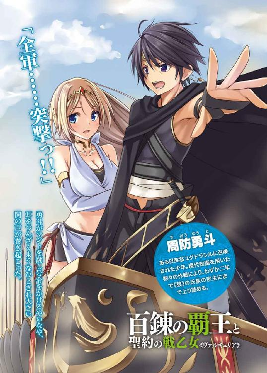
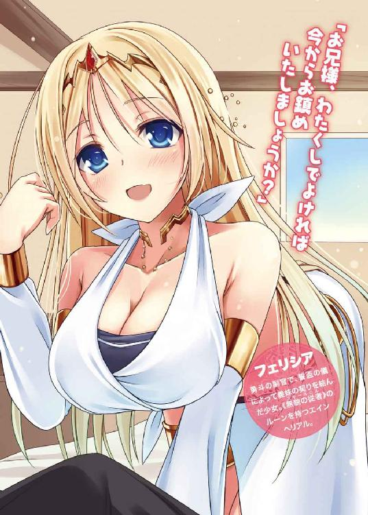
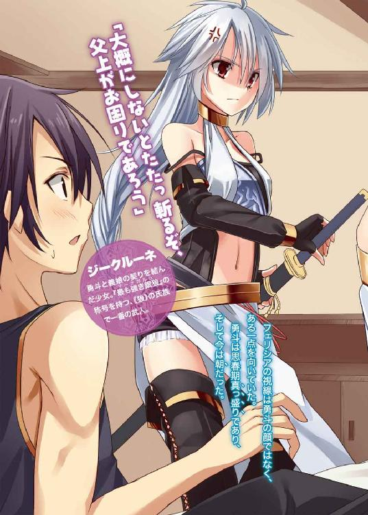
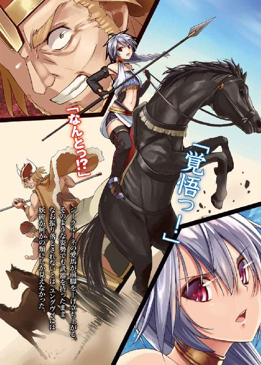
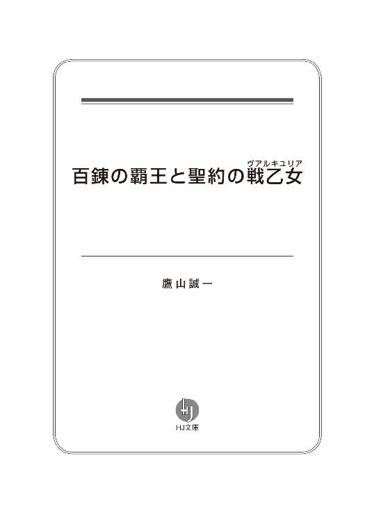
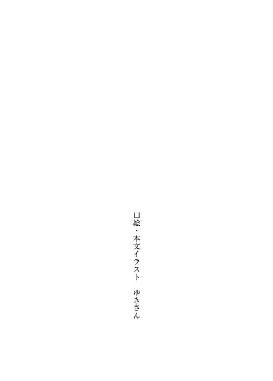
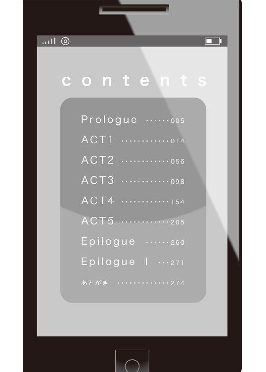
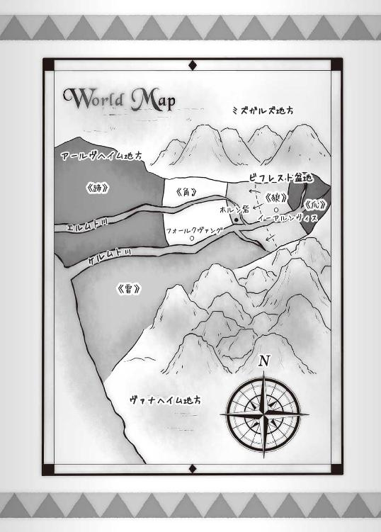
PROLOGUE
月宮神社にはある伝説がある。
曰く。ご神体の鏡には不可思議な力が宿っている。
曰く。ご神体の鏡の正体が、実はかのやんごとなき鏡である。
曰く。満月の夜に合わせ鏡でご神体の鏡を覗きこむと別の世界に誘われる。
実にどこにでもある陳腐な都市伝説の類である。
合わせ鏡を作って呪文を唱えると悪魔が現れる、未来や過去が視えるなどといった具合に、世界的にも似たような話はごまんと転がっている。
万華鏡を覗いた時のあの、無限に世界が広がっているかのような不可思議な映像が、多くの人に似たような空想を抱かせるのだろう。
実際、先に述べたような伝説は、月宮神社に代々受け継がれてきた口伝――とかではまったくなく、この八尾市でいつの頃からか住民の間で広まっていた噂にすぎない。
そうまさしく、今のような状況を作り出すために、だ。
「ゆ、勇くん勇くん勇くぅん！ やめようよぉ！」
目に涙を溜めた女の子がぐいぐいっと隣を歩く勇斗の服の袖を引っ張りつつ、怯えた声を上げていた。
トクンと勇斗の心臓がひときわ高く脈打つ。女の子に涙目で見上げられるのは、やはり男としては保護欲を刺激されずにはいられない。
彼女の名前は志百家美月。彼――周防勇斗の幼馴染で、一つ年下の中学一年生だ。大きくつぶらな瞳が印象的な、いかにも田舎育ちといった素朴な感じの可愛い女の子である。
「おいおい、ここまで来て何言ってんだよ」
勇斗はため息まじりに肩をすくめてみせた。
風がざああっと木々をざわめかせ、虫の鳴き声もあちこちから響いてくる。辺りの茂みに目を向ければ、飲み込まれそうな闇が広がっていた。
そんな山の中、満ちた月と星明かりが、古びてボロボロになった小さな社をうっすらと照らしている。
「大丈夫だって。俺たちの前に出たヤツら、ちゃんと帰ってきてたじゃねえか」
「でもでもでもぉ」
ぎゅっと勇斗の袖を握る力を強める美月。
いつもは向日葵みたいな笑顔を絶やさない元気いっぱいの女の子なのだが、どうにも昔から怪談だけは大の苦手だということを、幼馴染の勇斗はもちろん知っている。
この肝試しとて、本来なら美月のクラスの親睦会を兼ねたレクリエーションとして企画されたものだったというのに、一学年上の勇斗が半ば強引に連れ出されたのはその怖がりゆえであった。
おかげで後輩たちからはよってたかって冷やかされ、勇斗としてはとにかく赤面モノだったのである。悪い気はしなかったが。
幼い頃から美月は、何かあるたびにいつも勇斗を頼ってきた。小学校低学年ぐらいまでは妹ができたみたいで可愛く思っていた。
小学校高学年ぐらいの頃は、同性の友人たちからひやかされるのがいやで、ツレない態度を何度となくとるようになった。頼られるのが鬱陶しくて仕方なかった。
中学生になると、また勇斗の中で美月に対する感情が一転した。頼られるのが悪くないというかむしろ心地よく感じるようになった。中学二年になった今は、もっともっと頼られたいって、都合のいいことを考えている。
そしてその理由にも、なんとなく気がついていた。
「そんなに怖いならちょっと離れてな。ちょちょいと終わらせてきてやるからよ」
腕を振って、ちょっと強引に美月の手から袖を抜いて勇斗は言う。
少しだけ罪悪感に苛まれないでもなかったが、ここで押し問答して後輩たちにヘタレ扱いされるのだけは絶対に勘弁だった。
なにより、彼女に格好いいところを見せたかった。
「さて......」
屈み込み、キィッと社の観音開きの扉をゆっくりと開く。
中には、社以上にボロボロの錆びた円形の鏡があった。いや、正直、これを鏡と呼んでいいのかどうかすら疑問だった。汚れて曇り切っていて、正面にいる勇斗の顔もろくに映せていない。
拍子抜けしたように、勇斗は嘆息する。
「な～んかちゃっちいなぁ」
「ゆ、勇くん!? そんなこと言ったら罰が当たっちゃうよ！」
「美月は心配症なんだよ。あ～、でもただ撮ったんじゃ面白くないな」
愛用のスマートフォン――ＬＧＮ０９通称レーギャルンを取り出しつつ、勇斗は思案する。
怯えずにちゃんとルートを回った証拠として、この社の鏡の写真を撮って帰るのが今回の肝試しのルールなのだが、やはり一学年上な勇斗としては、後輩たちより一段上なことをやりたいところである。
「ちょっ！ な、何をやってるの!?」
美月が表情を思いっきり引きつらせて、悲鳴じみた声をあげた。
「ん～？ インカメで俺とご神体を一緒に撮ろうかなって。ああ、そういえば、これも一種の合わせ鏡と言えなくもないのか？」
「わ、わわわ！ や、やめてよ！ 勇くんが違う世界に行ったったらあたし......」
「大丈夫だって。そんなの迷信......」
（）
「えっ!?」
脳内に、何か呪文のようなものが響いた。
日本語ではなかった。英語でもない。まったく未知の言語。ただ、なんとなくだが、呼ばれたような気がした。
（！）
再び脳内に声が響き渡る。先程よりもクリアに、はっきりと。
若い女性の声だ。
「う......お？」
声のしたほうを振り返った瞬間、強烈な目眩が勇斗を襲った。
朦朧とした意識と視界が、二つの鏡を捉える。鏡は妖しい光を放ちつつ、重なったかと思えば離れ、離れたかと思えばまた重なる。
そうまるで万華鏡のように。
さらに奇妙なことに、一方の鏡の背後にうっすらと一人の少女の姿が見えた。
少女は何かに取り憑かれたかのように一心不乱に舞い踊っていた。神に仕える巫女を思わせる白無垢の衣装がヒラヒラと軽やかに揺れ動く。
「なんだよ、これ!?」
勇斗は慌てて目をこするも、その現象は収まらない。
しかもだ。
最初はそれこそホログラムでも見ているかのような透明感があったのに、どんどんとその色合いが濃くなっていき、少女のしなやかな肢体に質感が生まれてくる。
「ゆう......くん......ゆ......く......」
美月の声が、ずいぶんと遠くに感じられた。最後のほうなどかすれてほとんど聞き取れない。思わず振り向いて、
「えっ!?」
勇斗は絶句する。
そこには美月の姿はなく、白い壁が立ちはだかっていた。壁面には、様々な絵が所狭しと描きこまれている。多くは人を象ったものであったが、中には獣とも人ともつかぬまさに化け物としか言いようのない姿をした者の絵もあった。
「いったいどこからこんなもん......っ!?」
つぶやくと同時に、なにやらざわめきのようなものが周囲を包んでいることに気づく。かなりの大勢だ。
だが、おかしい。なぜこんな真夜中の山奥に、そんなに人がいるのか。先程までいなかったはずだ。肝試しの集合地点から駆けつけてきたにしても、あまりに早すぎる。
困惑とともに、もう一度勇斗は首をひねり、目を見開く。
間違いなく外にいたはずなのに、そこは室内だった。小さな体育館ぐらいはあろう広さの空間には、飾り気のない簡素な布の服に身を包んだ、明らかに日本人ではない彫りの深い顔をした男たちが、数十人、驚愕を露わにして勇斗を注視している。
「映画の撮影にでも紛れ込んだのか？ ......って、あの鏡は！」
男たちの後方に鎮座する祭壇に飾られた鏡には見覚えがあった。こちらのほうがはるかに真新しくつややかな光沢を放ってこそいるが、その形状は月宮神社に奉納されていたものと瓜二つだったのだ。
《満月の夜に合わせ鏡でご神体の鏡を覗きこむと、別の世界に誘われる》
唐突に、月宮神社の噂が勇斗の脳裏をよぎる。
「嘘だろ!? いくらなんでもまさかそんな......」
「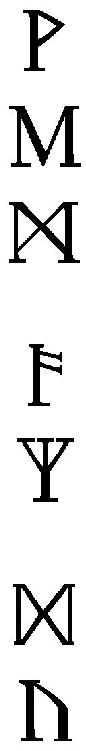!?」
凛と響いた意味不明の言葉とともに、勇斗の喉元に黄金の剣が突きつけられた。
あまりに突然すぎる事態に、声も出ない。出た所で、言葉が通じるとも思えなかった。相手の声の調子から、どこか詰問するような厳しさがあったが、勇斗にわかったのはそれぐらいである。
どうしていいかわからず視線だけ刀身をたどっていくと、白魚のような細く綺麗な指が見えた。さらに視線を上に向けると、煌めくような銀色の髪が視界で揺れる。
見たこともないほどの綺麗な女の子だった。まるでそう、何かの神話に出てくる戦乙女がそのまま飛び出してきたかのようだった。
年は勇斗と同じか、一つ上ぐらい。まさに氷細工のような、という表現がぴったりの、底冷えするような美貌の持ち主だった。
状況も忘れて、勇斗はただただ見惚れる。
そう、この時の彼は、これから自分を待ち受ける過酷にして数奇な運命になど、まるで気がついていなかったのだ。
ACT 1
「「「「おおおおおおおお!!」」」
辺りには鬨の声が轟いていた。
数千という人間が踏み鳴らす振動が、車輪を通して身体の芯にまで響いてくる。まるで大地が揺れているかのようだった。
三頭立ての馬車――チャリオットの荷台から、勇斗は戦場を注視し続けていた。
砂塵舞う荒野には、おびただしい数の死体が無惨に転がっていた。そのほとんどは敵勢のものであったが、味方のものも少なからずあった。
主を失った武具たちが、陽の光を浴びて黄金色に輝いている。
その光景と乾いた風が運んでくる血臭に、勇斗は胃のあたりがムカムカするのを抑えられなかった。戦場の空気というものには、未だに慣れない。
初陣の頃に比べれば、吐いていないだけまだまだマシだったが。
「大勢は決しましたね。さすがはお兄様、実にお見事な采配です。数で勝る敵をこうもたやすく......お兄様は軍神の化身としか思えませんわ」
勇斗のそばに控えていた女性――フェリシアが、弾んだ声で賛辞を送ってくる。
大人っぽい艶のある微笑みがなんとも印象的な美女だ。腰ほどまである長い金色の髪がふわっと風でたなびく。その白くヒラヒラした衣装は肌の露出も多めで、この戦場にあってはなんとも場違いな印象があった。
「別に大したことじゃない」
驕るでも、謙遜するでもなく、勇斗は淡々と返す。そう、彼にとってこれは、何ら誇ることではなかった。
彼はただ、知っていただけだ。
「凄いのはアレクサンドロス大王や織田信長だ。俺が考えたわけじゃない」
「は？ アレク......？」
訝しげに首をかしげるフェリシアに、勇斗は苦笑することで応えた。
今回の戦で勇斗の取った、重装歩兵の密集陣形による人の身長の三～四倍はあるかという通常なら有り得ない長さの槍を用いての突撃は、時代のはるか数百年先を行く戦法だ。
個人対個人の戦いならば、こんなバカ長い槍は小回りが利かず、まさしく無用の長物というしかない。ゆえに誰も検討すらしない。
だがこれが集団戦になると、非常に凶悪な兵器へと変貌する。
相手の間合いの外から密集陣形によって隙間なく槍を突き出すことで、日本流に言うならばいわゆる槍ぶすまを作ることで、相手は近づくことすらできず屍の山を築くしかなくなるという寸法だ。
アレクサンドロス大王のサリッサ、織田信長の三間半槍。未来の世界において、時代の覇王となった偉大なる英雄の必勝戦術だった。
「俺のは単なるズル......ととっ！」
言いかけた言葉を飲み込み、勇斗はフェリシアから視線をそらす。
車輪が石でも踏んだのか荷台が揺れ、彼女の大きくたわわな胸が目の前で上下に揺れ動いたのだ。
「あら、ふふっ」
フェリシアがイタズラっぽい笑みをこぼす。彼が何に動揺したのか気がついたのだろう。
カーッと勇斗は、顔が赤くなっていくことを自覚した。なんとも気恥ずかしい。
しかし、ここは戦場だ。浮ついてる暇など、一瞬たりとてない。慌てて勇斗は首をぶんぶんと振って煩悩を振り払い、改めて戦場へと目を向ける。
「よし、明らかに敵は浮き足立っているな。ここで決めるぞ。軍旗を掲げろ、全軍......突撃っ!!」
勇斗がマントを翻し、ばっと手を大きく振りつつ号令をかけるや――
ぶおおおおお、ぶおおおおお!!
彼の周囲を守る兵士たちが、一斉に法螺貝を吹き鳴らす。同時に耳をつんざくようなひときわ大きい鬨の声が巻き起こった。
その大音声に勇斗は顔をしかめかけて、ふと、地面に転がる死体と目が合う。見知った顔だった。親しいというほどではないが、何度か言葉を交わした記憶があった。
彼の死は、他でもない勇斗の采配の結果だった。勇斗の心に苦いものが広がり、ずしんと背中が重くなったような気がした。
「なんでこんなことやってんだろうな、俺は」
誰に言うでもなく、ひとりごちる。
ここ『ユグドラシル』に来てからすでにはや二年が経過していた。
わずかな土地を巡って人々は剣や槍を手に命を奪い合い、馬に引かれた戦車が血塗られた戦場を疾駆する。強い者が全てを奪い、弱い者はただただ蹂躙され虐げられる。
言葉さえ通じぬこんな野蛮な大地に独り放り出されながらも、勇斗は様々な紆余曲折の果て、いくつも奇縁を経て、なんの因果か、この《狼》の氏族を率いる宗主に昇りつめていた。
そう、指示一つで誰かの生死を左右する立場に。
「お兄様、なんでも抱え込みすぎるのはお兄様の悪い癖ですよ？」
不意にぎゅっと背中から抱き締められた。
フェリシアだ。その温かさに、勇斗は得も言われぬ安堵を覚える。どこか人を食ったところはあるが、一方でフェリシアは人の心の機微にとても敏感な女性だった。彼の心のわだかまりを聡く感じ取ったのだろう。
「～～♪」
囁くような、綺麗な旋律が勇斗の耳朶をくすぐる。不思議と、その歌を聞いているだけで勇斗の心の中をどんよりと覆っていた不安が薄れていくような気がした。
呪歌だ。歌に呪いを乗せることにより、様々な効果を聞く者に与える秘術である。
「わたくしにはこの程度のことしかしてあげられませんが」
「十分だ。ありがとな」
心から礼を言いつつ、勇斗はそっとフェリシアの腕をほどく。彼女の心臓の鼓動や温かさ、柔らかさは、呪歌の効果とも相まって気持ちを落ち着かせてくれたが、一方でひどく落ち着かなくもさせてくれる。
主に下半身的に。
「あん、お兄様ったらい・け・ず♡」
「まだ戦いは続いている。気を抜く......」
ガシッ！
唐突に、眼前へと矢が迫っていた。眉間まであと一〇センチというところでぎりぎり静止している。
「ほんと、気を抜いてはいけませんわね」
パッとフェリシアが手を開くと、矢は重力に引かれて荷台へと転がる。
防いだのでも、そらしたのでもなく、高速で飛来する矢を横から素手で掴んだのだ。恐ろしいほどの動体視力と反射神経だった。
ヒュンヒュンヒュン！
息つく暇もなく、前方から無数の矢が勇斗めがけて降り注いでくる。
「あらあら！」
フェリシアは腰にぶらさげていた縄を素早く手に取り、手首のスナップを利かせる。
縄がまるで新体操のリボンのように螺旋軌道を描き、襲い来る矢を次々と払い落としていく。
縄は捕まえた敵を縛るための粗いもので、新体操で使うようなリボンに比べれば相当重く扱いづらいはずなのだが、フェリシアはまったく苦もなさげに振り回している。勇斗より細腕だというのに、凄まじい膂力であった。
「サンキュ、フェリシア。相変わらず見事な縄さばきだな。女王様の素質あるぜ」
「くすっ、王はお兄様でしょう？ それとももしかしてプロポーズですか？」
おどけたように肩をすくめるフェリシア。
その姿には緊張感の欠片も感じられなかったが、今の一幕からもわかるように、彼女はいざという時には、現代日本人の勇斗など比べ物にならないほどの戦士である。しかも、縄術だけでなく、剣や槍も自由自在に使いこなす、《狼》でも指折りの腕前を誇る一流の戦士だった。
加えて、決して本心からふざけているわけではなく、勇斗が緊張しすぎないように、という配慮も多分にあることを、勇斗は気づいていた。
そもそもこの死と隣合わせの状況にあっていつもどおりの自然体でいられる、そして他人にも目を配る余裕を持てる、その胆力には舌を巻かざるをえない。まだまだ勇斗には至れぬ境地だった。
「ふむ、どうやらあそこからですね」
フェリシアが矢の出処をキッと睨みつけると、その先、小高い丘の上に、弓矢を抱えた男性と思しき影が立っていた。
視線があった瞬間、影はこちらに発見されたことを悟り、さっと丘を駆け下り、敵軍の中へと消える。
勇斗は狙撃者の消えた丘を呆然と見つめつつつぶやく。
「どうみても一〇〇メートル近くあるじゃねえか。那須与一も真っ青だな」
「こんな芸当を為すことができるのは、《角》広しと言えど、《白妖精》のハウグスポリを置いて他にはいないでしょう。噂に違わぬ凄腕です」
「それを全部防いだフェリシアも大概だけどな。ったく、相変わらずエインヘリアルってのは人間離れしてるぜ」
言って、勇斗は乾いた笑みをこぼす。
勇斗のいた世界とこの世界とで明確に違うものの一つが、エインヘリアルと呼ばれる神に選ばれた人間の存在だった。
彼ら彼女らはルーンと呼ばれる不可思議な紋様をその身体のいずこかに宿し、そのルーンに応じた加護を得る。《白妖精》ならば弓矢の才と風を読む才と言った具合に。
その万人に一人と言われる希少にして優れた能力から、どの氏族においてもエインヘリアルは重用されている存在だった。
勇斗の副官を務めるフェリシアもまた《無貌の従者》のルーンを持つエインヘリアルだ。まだ若く、女ながらにして氏族有数の戦士と数えられるのは、まさにこの神秘の力ゆえであった。
「ルーネは無事......だよな？」
もう一人、《狼》が誇るエインヘリアルの姿を脳裏に思い描き、勇斗は苦渋の滲んだ顔で最前線に視線を移す。
突撃の指示を受けて、戦いはその激しさを増していた。まさに今、件の彼女はあそこで戦っているはずだった。
優勢なのは勇斗が指揮する《狼》の氏族だ。どんどん敵勢を蹴散らし前線を押し上げていっている。だが、何が起こるのか分からないのが戦場だ。たとえ勝ち戦であっても、誰も死なないわけではない。
そう、先程の名も知らぬ兵士のように。
「ふふっ、ご心配には及ばぬかと。あの娘はマーナガルムですよ？ もうそろそろ......」
フェリシアが何かを言いかけたところで、
「「「《角》の宗主、《狼》のジークルーネが召し捕ったりー!!」」」
前線で上がった勝鬨が彼女の声をかき消した。
周囲の兵士たちの顔にも一斉に喜色が浮かんでいき、天に拳を突き上げるとともに前線の声に合わせるように勝鬨をあげ始める。
遠目に《角》の兵士たちが堰を切ったように逃げていく様が映った。武器を捨て恭順の意を示す者もいるようだった。
フェリシアがクスリと笑みをこぼしつつ、ウィンクを送ってくる。
「思った通り、ルーネがやってくれたようですわね」
「道を開けよ！ 父上、父上ーっ！」
戦場にはそぐわぬ鈴の音を思わせるよく通る凛とした声とともに、銀色の尻尾を揺らして騎兵が戦陣をかき分けるように勇斗のもとへと駆けてくる。
「おおっ、ジークルーネの姉御だ！」
「相変わらずお美しい！」
戦場には似つかわしくない陶酔したような声が所々から漏れてくる。
見惚れる気持ちは勇斗もわからないでもなかった。
遠目にも、見目麗しい少女だった。手足は細くすらりとしていて、長い銀色の髪をたなびかせ馬を駆る様は、さながら神話の登場人物のようで幻想的ですらある。
「姉御、此度も大手柄だったそうですね！」
「さすがはマーナガルム！ 《角》など敵ではございませんでしたな！」
「邪魔だ、どけ」
ジークルーネは端的に吐き捨て、追従して褒め称えてくる兵士たちを全く感情のこもっていない冷ややかな眼差しで見下ろした。
その眼光の鋭さに「ひっ！」と兵士たちはその身体を縮こまらせる。
その氷のような美貌はこの二年の間にさらに凄みを増し、今や触れればたちどころに切り裂かれそうな、そんな刃のような雰囲気までまとっている。
剣を持つのにも苦労しそうなほど華奢に見えても、彼女は『最も強き銀狼』の称号を受け継ぐ、精鋭揃いの《狼》の氏族においても並ぶ者がいない剛の者である。よく見れば、兵士たちの瞳には尊敬と同時にどこか畏怖を内包していた。
「あっ！」
勇斗の姿を捉えるや、途端、少女の相好が崩れた。
馬足を緩め勇斗の戦車のそばまで歩み寄り、ひらりと馬から軽やかに降り立つ。
「父上、ご無事でしたか！ お怪我などなされておりませんか？」
「前線に出てもいないのに怪我なんかするわけないだろ。むしろルーネこそどこか負傷とかしていないか？」
「ご安心を。アングルボダの加護により、わたしは至って無事、かすり傷一つ負ってはおりません」
「それはなによりだ。《角》の宗主捕縛も、よくやってくれた。ご苦労だったな」
「はっ、勿体無いお言葉。恐悦至極に存じます」
言葉こそ丁寧なものであったが、ぱああああっとジークルーネの顔に喜色が広がっていく。
すぐにハッと気づいたように表情を引き締めるジークルーネであったが、勇斗に褒められたのがよほど嬉しかったのだろう、どうにも口元のニマニマがおさまらないようだった。
「ぷっ、ルーネってばほんと忠犬なんだから」
「ぷふっ！」
フェリシアの言葉に、勇斗はたまらず吹き出してしまう。酷いことを言うと思いつつも、どうにも今のジークルーネを見ていると「おすわり」という単語を連想せずにはいられなかったのだ。
「父上？ なにかおかしなことでも」
ジークルーネが首をかしげる。そんな仕草もどこか犬っぽい。一度意識してしまうと、どうにもそうとしか見えなくなって困る勇斗だった。
「い、いや、なんでもない。気にするな」
口元を押さえて顔を背けながら言ってもあまり説得力はない。だが、さすがに本当のことを口にするわけにもいかない。
これ以上、この話題をするとボロがでそうだったので、勇斗はさっさと話を本題に戻すことにした。
「それより、褒美だ。何がいい？ 大殊勲だからな、なんでも好きなものを与えよう」
「なんでも、ですか？」
「俺が与えられるものなら、な」
「で、では！ そ、その、あ、頭を撫でていただけますか!?」
ジークルーネは勇斗を見上げ、キラキラと期待に満ちた眼差しで、実に些細なことを願い出てきた。
すでに先程までの冷厳で近づきがたい雰囲気はどこにもない。どうにも犬がご馳走を持って現れたご主人を見上げているような、そんな錯覚を覚える勇斗である。
「い、いや、さすがにそれだけってのは......」
ポリポリと頬をかきつつ、困った顔になる勇斗。
信賞必罰が宗主の最も重要な仕事の一つである。さすがに敵の大将を捕縛してきた者への恩賞がそれだけでは何かと問題ありありだった。
大手柄を立てても頭を撫でるだけで済ましてしまうなどという噂が立てば、誰も勇斗の下では働こうとしなくなるに違いない。
「わたしにとってはそれが何よりの褒美でございます！」
力強く断言するジークルーネ。無欲を装っているわけでも、《狼》の財政事情を慮 っているわけでもなく、本当にそれが心からの望みのようだった。
やれやれと苦笑をこぼしつつ、勇斗はジークルーネの頭にぽふっと優しく手を置く。
「本当によくやってくれたな」
「わ、わたしは父上のお役に立てましたか？」
「ああ、これ以上ないってぐらいな。ん～、だから本当にこれだけってわけにはさすがにいかねえよなぁ。おいフェリシア、後で適当に何か見繕って......」
「ぷーっくくくっ！ 見える。わたくしには確かにパタパタと揺れる尻尾が見えますわ！」
隣を振り向けば、金髪の美女は人目もはばからず、腹を抱えてしゃがみこみ肩を震わせ、ガリガリッとチャリオットの荷台の壁に爪を立てていた。
どう見ても笑い過ぎだった。
こういうところさえなければ綺麗で有能で完璧な人なんだけどな、と勇斗は嘆息する。笑いが収まるまでしばらく彼女は使い物にならなそうだった。
「あの、フェリシアはいったい？」
「放っておけ。世の中、知らなくていいこともある」
「っ！ なるほど！ 父上がおっしゃると、含蓄がありますね！」
「いや、そんな大したこと言ってないから」
げんなりと勇斗は肩を落とす。フェリシアはフェリシアで問題だが、ジークルーネもジークルーネで、勇斗への盲信ぶりが気になるところである。
ジークルーネという娘は一言で言えば、武辺者である。
才能ももちろんあったのだろうが、この若さで『最も強き銀狼』の称号が与えられたのは、世俗の様々なことを雑事と切り捨て、ただただ武にのみ人生を費やしてきたがゆえだった。
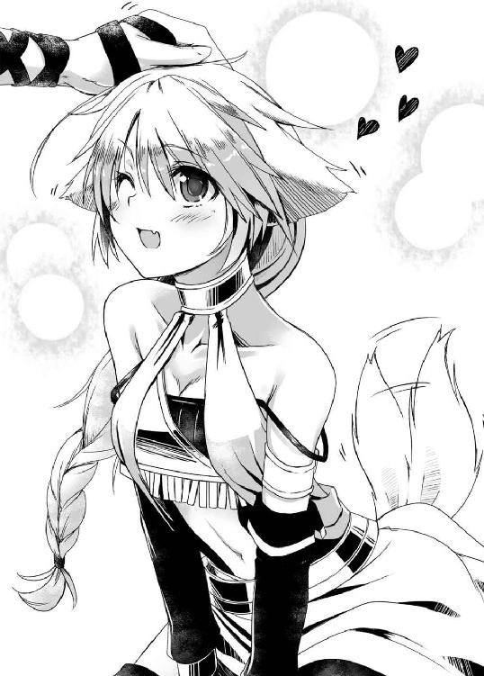
だからというわけではないが、彼女は力ある者と彼女が認めた人間にしか心を開かない。実際、勇斗などこの世界に来て半年ほどは、先程の兵士以下、まさに炉端の石ころ同然の扱いを受けたものである。あれほど衝撃的な出会いをしたにもかかわらず、名前すら忘れられてたほどだ。
そんな彼女が今や地面に片膝をつき、勇斗を絶対の主と認め、かしずいている。
「皮肉なもんだな」
勇斗は自嘲するように呟く。
二年、そうたった二年だというのに、いろいろなものが次々と変わっていった。外の環境も、勇斗自身も。
色白だった肌は日に焼け、細身なのは変わらないが、当時よりその身体は格段に筋肉で引き締まっている。背もかなり伸びた。
この世界で生きていく術も、いろいろ身につけた。
修羅場も幾度となく、越えた。
もう勇斗は、この世界に迷い込んだばかりの何もできずただ怯えているだけだった子どもではない。
今の彼は枝も含めれば数万を数える《狼》の命と将来を預かる、宗主だ。
「おっと、感傷に浸ってる場合じゃねえな。ルーネ、お前が捕らえたという《角》の宗主はどうした？」
勇斗に撫でられ、仔犬のような一面を見せていたジークルーネだったが、一瞬にしてきりっとした凛々しさを取り戻す。
最近は勇斗は見る機会が少なくなっているが、この表情こそがほとんどの《狼》の人間にとってジークルーネという名から思い出す少女の容貌なのである。
「はっ。一刻も早く父上のご無事を確認したかったので、宗主の身柄は近くの兵士に預けてきました。今はおそらくチャリオットにてこちらへと向かっていることかと」
「そうか......さて、どうするかな」
なんとはなしに、勇斗は虚空を見上げた。沈みかけた陽が西の空を紅く染め上げている。血に誘われたのか、カラスの鳴き声がなんとも耳障りだった。
考えているのはもちろん、敵宗主の処遇だ。
勇斗はちらりと視線をフェリシア――さすがに笑いは収まったらしい――に向け、
「素直に俺の盃を受けてくれるかな？」
「難しいでしょうね。《角》の宗主リネーア殿は、とても誇り高い方と聞き及んでおります。屈辱の生より名誉ある死を望まれるのではないでしょうか」
「とは言え、本当に死なれても困るんだよなぁ」
やれやれと勇斗はため息をつく。
この世界ユグドラシルでは、宗主が氏族の人間全ての「親」であり、氏族はその宗主の「子弟」であるという、一種の擬似家族制度とでも言うべきものによって組織運営を行っていた。
『誓盃』という神聖な儀式によって、宗主と子弟は固い絆で結ばれる。宗主は子分や弟分を慈しみ、子分や弟分は宗主を親分や兄貴分として敬う。実の親子関係より、この「盃の親子関係」が重視されるのがこの世界の習わしだった。
つまり宗主を殺せば、《角》の氏族にとって《狼》の氏族は決して許すことのできない憎むべき親の仇になってしまうということだ。
「......敵の若頭はこの戦いに参加していないんだったよな？」
「はい、族都の留守居役を命じられていたようです」
「《角》の若頭とは先代の供をしていた際に会ったことがあります。少なくともこの戦いには参加してはいなかったかと」
これはジークルーネ。
戦場においては、虚報が錯綜するのが常だ。だが、最前線で陣頭指揮を執っていた彼女の言葉は何より信用できた。
「ってことは指揮系統も残っている、か。ますます面倒そうだ」
がしがしっと勇斗は頭をかきむしる。
若頭は子分の筆頭という扱いで、実質的には氏族の№２に当たる。宗主にもしものことがあれば、当然、若頭が次代の宗主となる。
そして、若頭は血縁による世襲ではなく、能力によって選ばれる。無能なはずもない。
「殺せば兵法三六計が一四『借屍還魂』の成立か。なら、わざわざ敵に大義名分を与えてやる義理はない、な」
勇斗はポケットから愛用のスマートフォンを取り出し、電源ボタンを長押しし起動する。
かつての大地震を教訓に、万が一の用心にと持っていた小型のソーラーバッテリーのおかげで、勇斗は二年経った今も、このスマートフォンを利用できていた。
しかし、所詮は小型だ。日中ずっと陽に当て続けても、その電気で使えるのはせいぜい三〇分程度。微々たる時間だ。だから使用には慎重に慎重を期さねばならなかった。
しばらくして表示されたホーム画面から、Ｈｉｎｄｌｅのアイコンをタップ。次に表示されたのは、かの武田信玄の旗「風林火山」の引用元として知られ、二一世紀でも十分に通用すると称賛される中国戦国時代の兵法書『孫子』の解説書――その電子書籍版だった。
勇斗が宗主になってからダウンロードしたもので、もう何度読み返したかわからない。
「ほんと......チートだよな。スマートフォン様々だぜ」
勇斗は戦えば見習いの兵士にすら敵わないし、この世界での様々なことに不慣れで、未だ読み書きすらまともにできない。はっきり言って、役立たずもいいところである。
だがたった一つだけ、勇斗にしかできない、勇斗だけの武器があった。
それが二一世紀の知識だ。
もちろん、所詮は学生だった身だ。持っている知識も技術も高が知れている。例えばここでコンピューターを一から作れと言われても土台無理な話だ。
それでも、まだ文明が栄えていないこの世界ならば、大した技術も知識もなくても作れる代物が無数にあった。
今回の戦いで用いた長槍などもまさにその類だ。某歴史戦略シミュレーションゲームで、「三間半槍」というものを知らなければ、勇斗とて思いつかなかったに違いない。
画期的アイディアというものは得てして、気づいてしまえばなんてことはないもので、気づくまでが大変なのだ。いわゆるコロンブスの卵である。
本来なら、常識的な概念を打ち破る発想力を持った天才だけが可能な所業、勇斗はそれを未来の知識により可能にしていた。
彼が事あるごとに自分のことを「ズルしてるだけ」と言う所以である。
何ページかフリックし、該当のページに飛ぶ。もうどこに何が書いてあるのかだいたい暗記していた。
『国を全うするを上となし、国を破るは之に次ぐ。
伍を全うするを上となし、伍を破るは之に次ぐ。
百戦百勝は、善の善なる者に非ざるなり。
戦わずして人の兵を屈するは、善の善なる者なり』
簡単に言ってしまえば、戦って勝つのは次善の策で、敵を降伏させるのが最善策という意味だ。一語一語を噛み締めるように文字を追い、勇斗はひとつ頷く。
「やはり手打ちにするしかないな」
勇斗の言葉に、ジークルーネとフェリシアは揃って静かに首肯する。
《狼》の氏族にもそれほど余裕があるわけではない。すでに《角》の三分の一ほどの領土を奪い取っている。十分すぎるほどの戦果だ。あまり敵陣深くに切り込むのも危険だし、長く戦争状態が続けば国力も疲弊する。この辺りが潮時だった。
とはいえ、どういう条件で手打ちにするのか、それが問題だ。
一ヶ月前、《角》の侵攻から始まったこの戦いで、少なからず《狼》の氏族から死者も出ている。宗主を殺すのは面倒とはいえ、返還には相応の対価を得ねば民は納得してくれないだろう。
「順当に考えれば、宗主の身柄と交換に食料や鉱物といった物資を支払わせるか、領土を割譲させるかなんだが、できるならなんとか俺の盃を下ろしたいんだよなぁ」
腕を組み、う～んと勇斗は唸る。
領土や物資を奪えば、必ず禍根が残る。これ以上、《狼》と《角》の戦争状態を継続するのは彼の望むところではなかった。
勇斗に領土的野心はない。勇斗の宗主としての方針はただ一つ、《狼》の民が平和で豊かな生活を送れるようにすること、だ。
その点、この世界の『誓盃』というしきたりは、非常に都合が良かった。神聖にして不可侵、一度受けた盃に背くことはこの世界では絶対のタブーとされ、誓いを破ればその信用は地に落ちる。
生まれる親や一緒に育つ兄弟を選ぶことはできないが、誓盃では、その盃を受けるか否かを自分で選ぶことができる。自ら親と仰いだ人間を裏切るなど畜生にももとるというふうに考えられているのだ。
つまり、敵宗主と盃を交わし、勇斗の子分か弟分にしてしまえば、《角》の氏族は滅多なことでは勇斗、ひいては《狼》の氏族に逆らえなくなるのである。
逆説的には、だからこそ、自らの氏族を守る責務がある宗主は、安易に自らを風下に置くような他氏族からの盃を受けない。受けられない。
「となると、ちょっとチートだけど、やっぱりここは《爪》の時に用いた手か？」
当時を思い出し、勇斗は自嘲するように鼻を鳴らす。
正直、かなり気が進まなかった。だが、彼は宗主である。個人の事情より、氏族の事情を重視しなければならない立場だった。
先ほどの孫子の言葉を改めて心の中で反芻する。
二年前、ふらりとこの世界に迷い込んだ何も出来ない役立たずな自分を、決して豊かでもないのに受け入れ食わせてくれた《狼》の民が、勇斗は好きだった。
フェリシアやジークルーネなど、苦楽を共にした大切な友人たちも少なくない。
彼らをなんとか守りたかった。身近な誰かが死ぬのを見るのは、そして誰かが悲しんでいる姿を見るのは、いやだった。
ふ～～～っと勇斗は長い溜息をつく。ちょっと自分が嫌な思いを我慢するだけで死ぬ人間は減るのなら安いものである。
「よし、天幕を張れ。会談の準備だ」
「ええい、押すな。自分で歩ける！」
「は？」
天幕の中に引っ立てられてきた少女に、勇斗の口から思わず間抜けな声が漏れた。
ポリポリとこめかみのあたりを人差し指で掻きつつ、勇斗は隣に控えるフェリシアへと困惑の目を向ける。
「......この子が、宗主 ？」
確かに、身に着けている衣類は一般の兵士のものと比べると遥かに上質のものであり、額には黄金のサークレットが輝いている。
彼女が身分ある者であることは疑いようがない。だが、それがわかっていてもなお、問わずにはいられなかった。
勇斗の脇に控えていたフェリシアが、重々しく頷く。
「はい、彼女が《角》の宗主リネーア殿です」
「まだ子どもじゃないか」
「貴様だってボクと同じぐらいだろうがっ！」
ぽろっと出た勇斗の言葉を聞き咎め、《角》の宗主が怒鳴り声を上げる。勇斗が視線を戻すと、キッと憤怒に満ちた形相で睨まれていた。
髪を首筋あたりで短く切り揃えボーイッシュな感じの、実に可愛らしい女の子だった。年は勇斗より一つ二つ下ぐらいだろうか。その小さな身体を荒縄で何重にも縛り上げられた姿は、少々、痛ましくすらあった。
《角》の当代の宗主が、女だということは勇斗も聞いてはいた。女ながら並み居る荒くれ猛者どもを押さえつけ宗主となり、『緋の雌虎』と畏れられる女丈夫である、と。
しかし今、彼の目の前でう～っ！ と唸り声をあげて威嚇する少女は、雌虎と言うよりはどちらかというと山猫といった印象だった。
「まあ、ここでならそうおかしなことでもない、か」
実際、《狼》でも年端もいかない少年の勇斗が宗主を務めているし、ジークルーネやフェリシアもまだ一〇代でしかも女ながら、氏族の重鎮として扱われている。
ユグドラシルでは、力が全てだ。力さえあれば若かろうが女だろうが関係ないのである。
「とりあえず自己紹介をしておこうか。俺は勇斗。《狼》の宗主だ」
「......ふんっ」
勇斗の名乗りにリネーアはそっぽを向くことで応え、どかっとその場に座り込んだ。
しかし、その身体が小刻みに震えていることを勇斗は見抜く。気丈に振る舞うことで怖さを紛らわせようとしている部分もあるのかもしれない。
「言葉を弄するのは好かん。単刀直入に訊こう。俺の子分にならないか？」
わざと尊大なふうを装って勇斗は言うも、
「断る！ なぜ《角》が《犬》ごとき風下に立たねばならぬ。寝言も大概にしろ」
わずかの逡巡もなく、リネーアは申し出を拒否してくる。《犬》という呼称からもこちらを蔑んでいることが伝わってきた。
「確かに今回の戦こそ敗北を喫したが、調子に乗るなよ！ 依然、ボクたち《角》の国力は貴様ら《犬》を上回っているんだ。そう何度も奇跡など起こらない。さあ、殺すなら殺せ！ だが次は貴様の番だ。せいぜい首を洗って待っているんだな。はははははっ！」
「ふふっ、貴女こそ寝言は大概にしたほうがよろしいですよ？」
哄笑するリネーアに冷水を浴びせかけるように、フェリシアは頬に手を当て、ほうっと溜息混じりに言い放つ。
先ほどまでの高笑いもどこへやら、リネーアはカーッとみるみるうちにその顔を怒りに赤く染めていく。
「何が寝言だ!?」
「いえ、いつの話をしているのやら、と。確かに以前までの我らは、《犬》だったかもしれません。しかし、我らはお兄様の手で生まれ変わりました。強く逞しい本物の《狼》へと。お兄様が率いる限り、鈍重な《豚》ごとき敵ではございませんわ」
顔には微笑を湛え口調こそ丁寧だったが、その言葉は侮蔑の色を隠そうともしていなかった。慇懃無礼とはこのことをいうのだろう。
「なにを！ そんな貧弱そうなヤツがどれほどの者だ!?」
ドンッ！ バキィィィッ！
突如、天幕の中にものものしい音が響いた。
これまで黙したまま勇斗の傍に控えていたジークルーネが、目の前にあった木製の机を殴りつけ、そして真っ二つにへし折ったのである。
明らかに女性の腕力ではない。大の男でも出来る者は少ないだろう。
ジークルーネの左肩あたりにそれまでなかった紋様が浮かび上がり、淡く光を放っていた。《月を食らう狼》、保持者に狼の気質と類稀な身体能力を与えるルーンである。
「口を慎め。父上への侮辱は許さん」
ゆっくりと身体を起こし、傲然とリネーアを見下ろす。その表情にも声にも、勇斗と接する時のような甘さは蚊ほどもない。氷のように冷ややかでかつ刃のように鋭かった。
「ぐっ！」
リネーアが言葉に詰まり怯んだ表情を見せた。
リネーアはジークルーネが捕らえてきた。何人もの屈強な近衛兵に守られていたであろうリネーアを。
その戦いぶりを間近で見ているだけに、ジークルーネに対する恐怖はまさしく骨の髄まで刻み込まれているに違いない。そこに、目の前で再びその凄まじい力を見せつけられたのだ。恐怖を覚えないはずがなかった。
その様子に、ジークルーネがふんっと鼻を鳴らす。
「父上と同じく若くして宗主になったというからどれほどかと思えば、これでは父上の足元にも及ばん」
「まあ、ルーネ。比べること自体、お兄様に対して失礼ですわ」
「ふむ、フェリシアと意見が一致するというのは正直気持ち悪いが、その点に関しては同意せざるを得ないな」
「ぐ、ぐうううっ！」
「あら、そんなふうに唸っていると、どちらが犬かわかりませんわよ？」
「そうだな、どうせならぶーぶーとでも鳴くのがお似合いだろう」
「おのれっ！ なめるかっ！」
とどまるところをしらない二人の揶揄に、リネーアが怒りの咆哮を上げた。
怯えた表情から一転、縛られたままだというのにジークルーネに飛びかかろうとする。
が、彼女を連れてきた兵士たちにすぐさまその肩を押さえつけられた。それでもなお、リネーアは唸り声とともに殺意に満ちた視線を勇斗たちへと突き刺している。
これではまさに狂犬だ。
「やれやれ。プライドが高いってのは本当らしい」
リネーアに聞こえないよう、勇斗はひとりごちる。自分への自信の無さの裏返しもあるのかもな、とも心の中で付け加えた。先程から彼女が激昂するのは自分を見下すような発言をされた時ばかりだった。まあ、しかし、そろそろ頃合いだろう。
「控えろ、二人とも。彼女は曲がりなりにも《角》の宗主だ。無礼な口は慎め」
「「はっ！」」
頬杖から身体を起こしつつ勇斗が面倒くささを装って言うや、二人は即座に従順にかしこまる。
彼女たちが手はず通りに自分を持ち上げているのはわかっていたが、これ以上は聞いていられなかった。
勇斗は自分がそれほどの傑物だとは思っていない。先程から背中がムズムズするのをこらえるのに苦心していたのだ。
「女どもが失礼したな、《角》の宗主殿。まったく子分のしつけがなってなくて申し訳ない」
「......いや、ボクも《犬》とか言って済まなかった」
勇斗が詫びの言葉を告げると、リネーアも謝罪の言葉を述べた。先程までの態度から比べればかなり軟化している。
宗主になってから、勇斗は「交渉術」に関しての本も読んでいた。トップには必要不可欠なものだと思ったからだ。
その中の一つに、「Ｇｏｏｄ ａｎｄ Ｂａｄ ＣＯＰ」というものがある。
刑事ドラマなどでよくある手口だ。強面の警官が侮辱・脅迫など粗暴で高圧的な態度で相手の反感をあえて買う。そこにもう一人の温和そうな警官が救いの手を差し伸べ強面の警官をたしなめさえすることで、悪い警官より断然話が通じると、良い警官に共感や好印象を抱かせるテクニックだ。
今回の場合、フェリシアやジークルーネが悪い警官役を演じ、勇斗が良い警官役を演じたというわけだ。
「話を戻そう。どこまで話したか。そう、子分の話だ」
「......なる気はないと言ったぞ」
再び拒絶の言葉を口にするリネーアだったが、先程までのような勢いはなかった。半ば自分に言い聞かせるような感じだった。
思い通りに事が進んでいることに、勇斗は内心ほくそ笑む。
年端もいかない女の子を詐術を駆使して騙し脅すというのは良心が咎めたが、この交渉をまとめられなければ戦いは続き、双方により多くの血が流れる。それを避けるためには勇斗も手段など選んでいられなかった。
準備は整った。満を持して、勇斗は本当の要求を告げる。
「ふむ、では妹分ならどうだ？」
《角》の宗主リネーアは混乱の極みにあった。
いったいどうしてこんな状況に陥っているのか、何度考えても納得がいかないのだ。
《狼》は三～四代前こそ隆盛を誇っていたが、今や落ちぶれ《角》より遥かに劣る国力しか持たない弱小氏族である。つい最近まで隣国である《爪》と争ってもいた。さらに疲弊していることは想像に難くない。
その上、一年前に代替わりした宗主は、どこの馬の骨とも知れない一六歳の少年だと言う。実に与し易い相手......のはずだった。
敵に倍する兵を集め、万全を期して望んだ戦いは、しかし完膚なきまでの敗北という無惨な結果に終わり、今や大将たる自分は敵方の虜囚という立場に甘んじている。
そして、引っ立てられた先で見たものは、《犬》と侮っていた相手が、自分たち《角》を完全に見下しているという現実だった。
半分は交渉を有利に進めるため、自分たちの力を実際以上に誇示したはったりだろうとはさすがに気づいている。勝者のおごりもあるだろう。
だが、あくまで半分だ。《狼》の人間が勇斗に向ける敬慕の視線は、明らかに尋常ではない。
この見るからに若く繊弱そうな少年に完全に心酔仕切っている。あの『最も強き銀狼』ジークルーネや、あの『賢狼』フェリシアと言った《角》にまで名の知られている勇者たちが、だ。
そしてなにより自分たちが大敗したという事実が、今更ながらに不安に拍車をかける。
自分はもしかしてとんでもない見込み違いをしていたのではないか、と。
このままではもしや自分の氏族は滅ぼされるのではないか、と。
「......妹分、か」
そんな折に、するりと助け舟のごとく譲歩案を差し出されては、今度はリネーアも即座に否定することはできなかった。
この世界の常識として、子分は宗主に絶対服従が原則である。そんなものはさすがに受け入れられない。
一方、弟分や妹分の場合、基本的には兄貴分を敬い従わねばならないが、子分ほどの絶対性はない。検討の余地は十分にあるように思えた。
「譲歩はこれが最初で最後だ」
「～～っ！」
リネーアは言葉にならない苦悶の声を鳴らす。
熟慮が必要な事項だというのに、あまりに考える時間が足りなすぎる。そもそもこんな状況下で冷静に物を考えろというのも無茶というものだ。
ゆえにこそ、彼女は気づいていない。口でこそ譲歩と言っているものの、実は勇斗は無体な要求を取り下げただけだということに。
いわゆる「ハイ・ボール」という交渉術である。
最初から本命の要求を出すと断られるケースでも、まず大きめの要求をし、相手に断られたら、それより小さな、しかし本命の要求を出すという駆け引きテクニックだ。
加えて、先の「Ｇｏｏｄ ａｎｄ Ｂａｄ ＣＯＰ」の効果により、勇斗の申し出が温情なのではないか、という焦燥にも似た思いも生まれていた。
リネーアは完全に勇斗の策にハマっていたのだ。
「ううっ、けど......」
それでもまだ、リネーアには勇斗の妹分になる決心はつかなかった。やはり今まで格下だった《犬》に従うことには抵抗があった。おめおめと《犬》の妹分になって国に戻れば、自らの命惜しさに国を売ったとの謗りは避けられないだろう。
そんな目で見られるのは耐え難い屈辱だった。それこそ死んだほうがマシだと感じるほどに。
「や、やはり我ら《角》は《狼》の風下には......」
「そうか、なら仕方がない。お前たちの街をヴァンの二の舞にしてやろう」
「っ!? 街を焼き払うというのか!?」
つまらなさそうに言い捨てた勇斗の言葉に、リネーアは一瞬で沸騰する。
だが、その剣幕にさしたる感銘をうけた様子もなく、《狼》の宗主は感情の感じられない酷薄な目で自分を見下ろし続ける。
ヴァン。《爪》の氏族の領土にかつてあった小さな町の名前である。
今はもう、ない。
目の前の男が一切合切を焼き払い、女子供の別なく住人一人残らず虐殺したからだ。
「俺の盃を受けんのなら、な。俺は俺に逆らうヤツに容赦するつもりはない」
「......っ！」
きっぱりと冷たく言い切られ、先程一気に脳天まで上り詰めた血が、今度はサーッと引いていく。
兵を起こしたのは、『ヴァンの惨劇』に義憤を感じたということも一因としてあった。そのような非道、とても許してはおけぬ、と。しかし、今はそれがリネーアの心に重くのしかかっていた。
宗主とは言え、彼女はまだ一五に満たない小娘だった。自分の判断が数千数万という命を左右するという現実を、今この時、宗主になって初めて本当の意味で思い知っていた。ガタガタと全身の震えが止まらなくなる。
「別に俺はどちらでもいいんだが、どうする？ 早く決めろ。俺はそう、気は長くない」
「～～っ！ わかった。妹分になる。だが子分にはならないからな！ あくまで妹分だ！」
まさに断腸の思いで、リネーアは勇斗の要求を受け入れたのだった。
「ふううううううううううううううううううううう」
宗主会談を終えリネーアの姿が見えなくなるや、緊張の糸が切れたせいか、どっと一気に疲労が勇斗の身体を襲ってきた。
長い長い溜息とともに、ずるずると椅子から力なく滑り落ちていく。
「だ、大丈夫ですか、父上!? どこかお身体の調子が......」
心底慌てふためいて、ジークルーネが勇斗に駆け寄る。お互い、先程までリネーアに見せていた冷たく硬質だった姿は見る影もない。そのことに勇斗は苦笑を禁じ得ない。
犬扱いに不機嫌そうにしていた《狼》の面々だが、今のジークルーネはくぅんくぅんと鼻を鳴らして、主人を心配そうにしている犬を連想せずにはいられない。もちろんそんな失礼なこと言えるわけもなく、口では別のことを言う。
「疲れただけだ。心配しすぎだっての。そりゃ俺はこの世界では虚弱もいいとこなんだろうけど、さ」
「そ、そんなことは......」
声も微妙に小さめに、言葉をにごすジークルーネ。
やっぱり弱っちいとは思ってるわけね、と勇斗は苦笑する。
もっとも、それを責める気にはなれない。この世界に来たばかりの頃は水や食べ物が合わなくて、それこそ頻繁に腹を下したりしていたものだ。そのイメージがどうしても残ってしまっているのだろう。
「ふふっ。そのお姿では、近隣にその雷名を轟かす『悪評高き狼』と誰も信じないでしょうね」
フェリシアが楽しそうに目を細める。
椅子に座らず地面に座り、椅子の脚を背もたれにしている今の勇斗の姿は、確かに威厳もへったくれもなかった。
「そりゃ雷名じゃなくて、悪名だろ」
身体を起こしつつ、ちょっと投げやりに勇斗は言う。
ヴァンの一件以来、勇斗はその二つ名とともに歯向かう者には容赦しない残虐非道な暴君で近隣には通っていた。
あえて、広めてもいる。
孫子と同じく、宗主になってからリーダーの心得として読み始めたマキャベリの『君主論』には、リーダーたるもの、普段は善行を行いつつも、時には冷徹に悪徳を成さねばならない時もある、と説かれていた。そして、悪逆非道な行いは、やるなら小出しにせずそれこそ一気にやってしまえ、とも。
恐怖させることで歯向かう気を失せさせ、仕方なしにも従う気にさせるからだ。
かの伊達政宗も、「小手森城の八〇〇人斬り」という有名な虐殺を行っている。この話を耳にした大内定綱は心底恐怖し戦わずして退却、その居城である小浜城を政宗は味方の血を流すことなく手に入れたという。しかも件の大内定綱は、後に配下となったらしい。
『ヴァンの惨劇』とは、言ってしまえばこの故事の焼き直しだった。
「やはりわたしは納得できませぬ。父上はヴァンで虐殺など、なさっておられないのに。本当はとても慈悲深い方、なのに......」
「俺は慈悲深いんじゃなくて、ただ甘いだけ、さ」
ジークルーネが憤懣やるかたなしと言う顔で悔しそうに呟くも、勇斗はそう言ってゆっくりと首を左右に振った。
現実は、単純ではない。冷徹な振る舞いが無血を生むこともあれば、友愛の精神が敵のあなどりを生み余計に争いを激化させ血を流させる結果につながることもある。
勇斗が町を焼き払ったのは事実だが、実のところ、住民は全員、《狼》の街に移住させていた。そして、虐殺したという噂だけを流した。
人の口に戸は立てられぬと言う。真実がバレて近隣氏族からなめられるようなことになれば、与し易しと見て戦が起こり、ヴァンの住民など比べ物にならない数の《狼》の氏族の血が流れるかもしれない。
そのリスクを知りながらも、勇斗は殺せなかったのだ。そこまではどうしても出来なかった。非情に、なりきれなかった。
甘さは血を血で洗うこの時代ではどうしようもない弱さだと、何度も思い知っているにもかかわらず......
「......へ？」
ぐいっといきなり抱き寄せられ、次の瞬間、柔らかくて温かい感触が彼の顔面を優しく包み込む。
またか！ すぐにその正体に気づき、勇斗は慌てて離れようとするも、
「わたくしはお兄様の甘さを、とても尊く思っておりますわ。あまり自分を責めないでくださいませ」
降ってきたフェリシアの甘く優しい声に、抗する力が抜けていく。
トクントクンと彼女の心臓の鼓動が伝わってきた。自己嫌悪に陥りかけてた心が急速に癒されていくのを感じた。
「......フェリシア、いつもありがと、な」
「ふふっ、お礼を言われることは何もしておりませんわ」
「それでも、ありがとな」
「わ、わたしも、父上のことを尊敬しております！」
「うん、ルーネもありがとな」
「はいっ！」
ジークルーネがぱあっと華が咲いたように微笑む。勇斗のこんなたわいない一言を、心から喜んでいる。
ここユグドラシルは、勇斗が生まれ育った時代ではない。生活はいろいろ不便だし、郷愁で心に寒風が吹きすさぶことなどしょっちゅうだ。それでも彼女たちのように、勇斗を慕い助けてくれる人たちがいることもまた確かだった。
勇斗の口から自然、笑みが零れていた。
「よし、帰ろう。俺たちの街、イアールンヴィズへ」
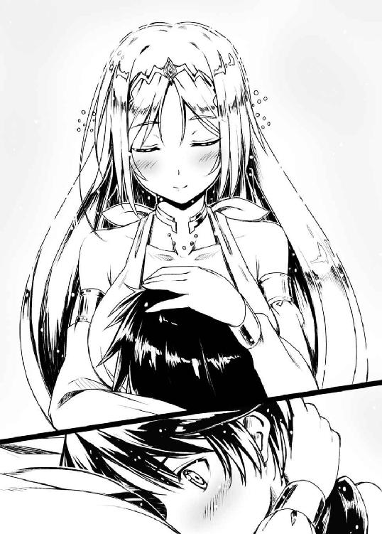
ACT 2
勇斗が覚えている最も古い記憶は、薄暗い闇の中でうねる、かまどの炎だった。
勇斗の父は滅多に家に帰らず、もっぱら村外れにある作業小屋にこもっているような職人気質の男だった。
たまに家に帰ってもろくに話しかけてもこない寡黙な男だった。
当然、遊んでもらった記憶もない。
それでも、勇斗は足しげく父の工房に足を運んでは、一心不乱に金槌を振るう父の背中を見守り続けた。
小学校高学年の頃になると、父は仕事を手伝わせてくれるようになった。
父が何かを教えてくれるのは初めてだったから、必死で覚えた。
今から思えば、小学生にできることなど高が知れていた。
それでも、父の手伝いができることが子ども心に誇らしかった。
勇斗は父のことが大好きだった。
勇斗は父のことを心の底から尊敬していた。
そう、ここユグドラシルへと迷い込むことになる二ヶ月前。
母が死んだあの日の父の言葉を聞くまでは......。
「チッ、またかよ」
パチリと目を見開くや、勇斗は深々と溜息をつき起き上がる。
父親のことなど思い出したくもないのに、時々こうして夢に出てくるのだ。鬱陶しいことこの上なかった。
天幕の中は無明の闇に支配されている。どうやらまだ夜のようだった。すでに《角》との戦いから半日が経過していた。《狼》の族都イアールンヴィズには、明後日あたりに到着の予定である。
自動車なら数時間の距離も、歩兵が大半を占める軍隊の行軍ではそれぐらいはかかってしまう。野営はやはりどうにも疲れがとれないものだ。さっさと街に戻って自室でゆっくり休みたいところだったが、こればかりは仕方がなかった。
「ん～、目ぇ、覚めちまったな」
寝直そうかとも思ったが、すでに頭が冴えてしまっていた。当分眠れそうにない。クソオヤジめ、と毒づきつつ勇斗は入り口の垂れ幕を押しのけて外に出る。
空一面には、宝石を敷き詰めたかのように、数えきれないほどの星々が瞬いていた。
二一世紀の日本では街の明かりにかき消され、田舎でしか見ることのできない光景だった。ただ勇斗はまさにその田舎育ちなので、生まれた時からの景色であり、特に感動とかはない。
ただ、郷愁が募るだけだ。
「そういや今日は七夕だったっけ」
北東の空、地平の果てから昇り始めたひときわ強く煌めく恒星を二つ見つけ、勇斗はスマートフォンが表示していた日付けを思い出す。
ちょうど今日で、この世界に来てから丸二年になるわけだ。
「天の怒りを買い、逢えなくなってしまった織姫と牽牛、か」
皮肉げにつぶやき、その二つの恒星を頼りに近くの星々を探す。程なくして、琴座と鷲座の完成である。その真下、地平線との境目あたりには、雲状の光の帯――天の川が流れている。
「ほんと......夜空だけは俺のいた世界と変わらねえんだよな......」
数千年の時も、星々にとってはまさに瞬きのようなものにすぎないのだろう。黄昏れつつ、勇斗はしみじみとそう思う。
これはある一つの事実を意味していた。
ここユグドラシルは、いわゆる異世界などではなく地球のどこかだということだ。
そして、結論から先に言えば、おそらく過去に飛ばされたと勇斗は見ている。使っている道具や文化から推測するに、おそらく紀元前一三〇〇～二〇〇〇年あたり、いわゆる青銅器時代後期に、だ。
二一世紀の地球で、未だに剣や槍を用いての戦争などやっている場所があるとはさすがに思えない。もしかしたらアフリカの奥地などではあるのかもしれないが、星座は北半球のものだ。
そもそも、《角》はもとより、そしてその先にあるという《蹄》の氏族などは、肥沃な領土をかなり広範に誇っているという。他にもここユグドラシルには《蹄》と同等規模の氏族がいくつもあるのだと聞いている。
一五世紀半ばの大航海時代から始まった帝国主義、神の名の下、徹底的な侵略を行った西洋人たちが、これほど豊かで広大な土地を植民地にもせず見逃すとはやはり考えにくかった。
となれば、やはり過去に飛ばされたとしか考えられなかったのである。
「つっても、ほんとどこなんだよ、いったい」
独り空を見ていると、どうしても考えてしまう。もう何度目になるかわからない問いをひとりごちつつ、勇斗は途方に暮れたように月が照らす山脈を眺めた。
この世界ユグドラシルの中央高くそびえ、『ユグドラシルの屋根』を形成する三つの山脈の一つ、ヒミンビョルグ山脈である。
ユグドラシルという単語にはこの世界に来る前から勇斗には聞き覚えがあった。ゲームや漫画などではよく出てくる単語だからだ。北欧神話に出てくる世界樹のことである。勇斗たちが今向かっている族都イアールンヴィズにしても、北欧神話に出てくる狼の棲む森だった。
「しかし、ここは北欧じゃあない」
ネットを漁れば、緯度の出し方ぐらいはすぐにわかる。北極星の角度を測ればいいだけだ。素人の見様見真似ゆえ、多少ズレがあると見ても北緯五〇度～五二度、だいたいドイツ中部と言ったところである。
北欧神話は元々はゲルマン神話だったと言うから、ならばここはドイツなのか、と言えばまたどうもそれも違うようなのだ。
北緯五〇度あたりには、今、勇斗が見上げているような天を衝くかのような山脈など、スマートフォンに表示させたヨーロッパ地図を穴が開くほど見つめても、どこにもない。それこそ中国やアメリカあたりまで見なければないのである。
だが、中国にしては棲んでいる人間の瞳の色も髪の色も西洋のものだし、アメリカでは伝え聞くユグドラシルの地形とはあまりに違いすぎる。
「やっぱわけわかんねえ......」
ガリガリと勇斗は頭を掻きむしる。
なんといっても経度がわからないのが痛かった。
勇斗のスマートフォンのＧＰＳはこの二年間、「一時的に現在位置を検出できません」としか報告してこない。
それでも現代知識を用いれば経度ぐらい楽勝で出せると高をくくっていたのだが、これがとにかく困難を極めた。当然と言えば当然である。経度計測の起点となるグリニッジ天文台の位置がそもそもわからないのだから。
つまるところ、現在地の特定はお手上げと言っていい状況だった。
「あら、お兄様。眠れないのですか？」
ふと、背後から声をかけられ振り返ると、フェリシアが風にたなびくその金色の髪を押さえながら、柔らかく微笑んでいた。
「変な夢を見て、な。目が覚めちまった」
苦笑しつつ、勇斗は軽く肩をすくめる。
勇斗としては何気ない、ただの世間話程度のつもりだったのだが、途端、フェリシアの笑みがみるみる陰っていき、痛切が滲む。
「お優しいところはお兄様の美点ではございますが、あまり気にしすぎな......」
「ああ、違うって。戦場の夢じゃねえから」
フェリシアが何を心配しているのか気づき、勇斗は言葉を遮って言う。
昔は戦いのたびに悪夢にうなされたものだ。そんな時いつも、取り乱す勇斗を優しく抱き締め落ち着かせてくれたのがフェリシアだった。
この世界に来て以来、フェリシアは勇斗に健気に尽くしてくれている。宗主になってからではなく、言葉もわからず力仕事もできない役立たずな頃からずっと。その献身に、勇斗は何度救われたかしれない。
たとえそれが、彼女にとっての贖罪に過ぎなかったとしても。
「では、どんな夢をご覧になられたのです？」
そっと勇斗の隣に腰を下ろし、何気なく訊いてくるフェリシア。
ふわっと女性特有の甘い香りが勇斗の鼻腔をくすぐった。戦場ゆえ、香料の類などはさすがに持ってきていないはずなのに、どうして女性はこうもいい匂いがするのか、勇斗にはまるでわからなかった。
「ああ、クソオヤジの夢さ。ったく胸糞悪いったらねえぜ」
内心の動揺を抑えつつ、平静を装った声で言う。
「ご実父様の、でございますか。やっぱり逢いたいのですね」
「ばっ！ 何いってんだよ！ あんな奴とは二度と顔を合わせたくねえっての！」
吐き捨てて、ぷいっと勇斗はそっぽを向く。
視界の隅では、フェリシアがクスクスと笑みをこぼしていた。かと思えば、次の瞬間にはつらそうに、何かに耐えるように唇を噛み締める。
「......お前のほうこそ、あまり気にしすぎんなよ」
勇斗はフェリシアの言葉をそのまま返しつつ、ぼすんと彼女の頭の上に手を置く。
勇斗にはフェリシアが今、何を想ったのか察しがついていた。笑った自分を責めているのだ。この件に関しては自分にはそんな資格などない、と。
勇斗をこの世界へといざない、家族や想い人と引き離したのは、他でもないフェリシアであったから。
「そう言っていただけるのはありがたいのですが、やはりわたくしのせいですから」
フェリシアが自嘲気味に笑う。最近は勇斗をからかったり明るい表情を見せてくれるようになったが、昔はこんな強張った暗い表情しか見せてくれなかったものだ。
彼女の持つ《無貌の従者》は、万能のルーンだ。文武に長け、呪歌などといった神秘の力を操る能力にも優れた才を発揮する。
その《無貌の従者》のルーンが保持者に与える数ある力の一つに、《グレイプニル》というものがある。なんでも異質な存在を囚え縛り付ける力だという。
元々はエインヘリアルの超人的な力を封じるための術なのだが、どうもそれが様々な要因によっておかしなふうに働いたのではないか、とのことだ。
勇斗には魔術のことはわからないし、多分に推論も混ざる話ではある。だが、それが最も可能性が高いらしい。
「別にお前だけのせいじゃないだろ。俺の不注意のせいもあるし、な」
口元に笑みさえ浮かべて、サバサバとした口調で勇斗は言った。
フェリシアのことを恨んだ事がないといえば、嘘になる。だが、彼女は故意に自分をこの世界へと連れてきたのではない。あくまでいくつもの偶然が折り重なった結果だ。
合わせ鏡も、その要因の一つだと勇斗は睨んでいる。だから、多分に勇斗の自業自得な側面もあるのだ。
それでも彼女は勇斗に強い罪悪感を抱き、いろいろ尽くしてくれている。
彼女がいなければ、勇斗はきっとこの世界に絶望して自殺しているか、食べていくことさえ出来ずに野垂れ死んでいたかのどちらかだっただろう。
だから、今の勇斗にはフェリシアに対して感謝の気持ちしかないし、そのことを本人にも伝えているのだが、どうにも気遣いと取られている節がある。
なんともままならないものだった。
「あの、お兄様？」
フェリシアが少し恥ずかしそうに顔を紅く染め、じっと勇斗を見上げた。
それではっとする。
「って、わり。つい癖で」
慌てて勇斗はフェリシアの頭から手をどかす。先程からずっと撫でっぱなしだった。
物心つく前から泣き虫の幼馴染を世話してきたからか、どうにも泣きそうな女の子を見るとその頭を撫でてあやす癖が勇斗にはあるのだ。
「あら、別にかまいませんのに」
名残惜しそうに、熱っぽい視線を離れていく勇斗の手へと向けるフェリシア。
その色っぽさに勇斗の動悸は否が応にも早まる。
「い、いや、でも、年上にすることじゃ......あっ！」
しまったと思ってももう遅い。
スーッとフェリシアの顔から表情が消えていた。そう、まるで、勇斗以外の人間と接するジークルーネのように。
「そうですわよね。ええ、わたくしは年上ですわ。どうせ......どうせ後半年もすれば未婚のまま二〇の大台を迎えますよ。ええ、ええ、わたくしは行き遅れですよ！ でもそれは決してわたくしがモテないわけじゃないんですからね。あくまでわたくしを娶るだけの器の男が《狼》にいなかったというだけの話で、つまりわたくしのほうからお断りしているのです。そもそもわたくしはお兄様に生涯お仕えすると誓った身であるというのに、あのクソジジイどもは......っ！」
フェリシアの口から垂れ流される怨嗟のこもった呪言に、勇斗は思わず引きつった笑みを浮かべる。「フェリシアに年齢と結婚の話をしてはならない」。これは《狼》の人間の間でここ最近、暗黙の了解として言い含められていることだった。
いつもにこやかな笑みを絶やさず物腰柔らかなフェリシアではあるが、この話をされた瞬間、豹変する。どんよりと暗く......黒く！
ユグドラシルでは、概ね女性は一〇代の内に嫁ぐのが一般的である。二一世紀の人間である勇斗にしてみると随分と早い気もするが、人類の営みから見れば、むしろ現代日本人のほうが不自然なのである。
世界的にも、一九世紀半ばまでは、一〇代で結婚するのが一般的だった。日本にしてもそれは同様。そして、一〇代を超えてもまだ結婚していない女性がどこか問題があるのではないかと勘ぐられるのもまた、世界共通の認識だった。
タイムリミットまであとわずかと迫り周りからのプレッシャーを浴び続けているフェリシアが、ナーバスになるのも至極当然のことではあった。
「ま、まあまあ、俺の世界の数え方ならフェリシアはまだ一七だから」
「そうですよね！ 間違っているのは暦なのです！ さすがにお兄様の国は素晴らしい暦を使っておられますわ！ だいたいなんでわたくしと生まれた日がたった七日しか違わないあの犬娘が今年いっぱい一八なんですか！ おかしいにもほどがあります！」
グッと拳を握り、月に吠える金狼。彼女がジークルーネにちょっとだけ黒いのは、おそらくこれが遠因ではあるのだろう。
ここユグドラシルでは、「ゼロ」を数の対象として考える概念がまだなく、生まれた時点ですでに一歳と数える。また、暦として太陰暦が用いられており、新年に皆一斉に年を取る事になっている。
つまり、年の暮れに生まれたフェリシアなどは、生後数日にして二歳と数えられてしまい、逆に年始に生まれたジークルーネなどは、生後一二ヶ月で初めて二歳と数えられるなどという事が起きる。
年を気にする女性にはなんとも不公平に感じられる年の数え方ではあった。
「と、すみません。わたくし、つい取り乱しまして」
「あ～、まあ、悪いのは俺だから」
「お詫びも兼ねて、子守唄を歌って差し上げましょう」
「おいおい、そんな年じゃ......」
「年？」
「いえ、なんでもありません！」
再びフェリシアの表情が凍りかけたのを感じ、勇斗は急いで自らの言葉を打ち消す。なぜか宗主たるはずなのに、直立不動の姿勢を自ずと取ってしまっていた。
フェリシアは鷹揚に頷いた後、勇斗の天幕の中へと入っていこうとする。
「おいおい、さすがにこんな真夜中に男の寝床に......」
「わたくしとしては夜伽を務めるのでも構いませんよ？ 戦場の昂ぶりを納めるには女の肌が一番と古より申しますし」
振り返ったフェリシアが目を細め、色気が香り立つような流し目を送ってくる。
ただでさえ月明かりに照らされる彼女はどこか幻想的で、陽の下で見る時よりさらに妖艶な美を醸し出していて、心臓がいやがおうにも高鳴った。
勇斗とて年頃の男である。女の子に、それもフェリシアのような美少女に夜伽をすると言われて、気にならないはずがない。我知らず、ゴクリと喉が鳴った。
「ふふっ、どうします？」
「有難い申し出だけど遠慮しておくよ。あいつを裏切りたくない」
フェリシアから視線を逸らして、キッパリと言う。フェリシアの顔を見ずに言ったのは、彼女の魅力に正直、理性が決壊してしまいそうだったからだ。
美月のことがなかったとしても、本能に負けるわけにはいかなかった。相手の罪悪感につけ込んで恩人を欲望で汚すなど、まさに獣の所業だ。勇斗の矜持が許さない。
「あら、残念」
悪戯っぽく微笑みつつ、天幕の中へと消えるフェリシア。
勇斗は思わず天を仰ぐ。
「勘弁してくれ。俺の理性にも限度があるぞ」
は～～～っと深呼吸して心を落ち着かせてから、勇斗はフェリシアの後を追い自身の天幕の中へと戻る。
フェリシアが点けたのだろう、ランプの炎がほんのりと中をオレンジ色に照らしていた。
奥には木製のベッドがあり、フェリシアが腰掛けていた。艶然と微笑みつつ、ぱんぱんっと自らの太ももを叩く。
「お兄様がお休みになるまではここをどくつもりはございませんから」
機先を制するように、それでいて優しく甘やかに、フェリシアが微笑む。
据え膳食わぬは男の恥、という言葉がいやおうなく脳裏をよぎる。流されまい、と理性を総動員しかけたが、
「この一ヶ月、ろくに眠られておられないでしょう？ もう戦は終わったのですから、ゆっくりとお休みにならなくては。そのほんのわずかな手助けぐらい、させてくださいませ」
泣きそうなほどに心配そうな瞳でここまで言われては、さすがに拒否することはできなかった。
確かにこの一ヶ月というもの、いつ敵が攻めてくるかと気を張っていて、眠りの浅い日々が続いていたのも事実だった。
冗談めかしてはいるが、どうやら相当、体調面で心配されているらしい。実際、神経が昂ぶっていて、今夜もあまり深くは眠れる気がしないのも事実ではあった。
「......じゃあ、お言葉に甘えるか」
覚悟を決め、勇斗はゴロンとフェリシアの太ももに頭を乗せ、ベッドに横になる。顔をフェリシアのお腹の方に向けたのはせめてもの抵抗だった。今はあまり顔を見られたくない。
「はい。おやすみなさいませ、お兄様。～～♪」
優しくゆっくりとした調べが、フェリシアの口から紡がれ始める。
フレーズには聞き覚えがあった。この《安らぎ》の呪歌は何度となく歌ってもらったものだったから。
やはり疲れていたのだろう、とたんに目蓋が重くなっていき、勇斗の意識は呪歌に誘い込まれるように闇へと落ちていった。
「父上！ 街が、イアールンヴィズが見えて参りました！」
ジークルーネの凛とした声に、勇斗はもそもそと荷台から身体を起こした。
一面、土と石が剥き出しになった大地と、遠くかすかに山々が連なる雄大な景色が視界に飛び込んでくる。
百頭を軽く超える羊の群れが、犬に追われて原っぱをゆっくりと行軍していく。羊の牧畜は《狼》の主要な食料源であり、かつ、衣類を作るためにも不可欠な重要な産業である。
羊たちの目指す方向に、うっすらと、だが確かに、赤茶色の建造物を見ることができる。
《狼》の族都イアールンヴィズのシンボル、聖塔に間違いなかった。
「やっと帰ってこれた、か。やっぱりなんかホッとするな」
街に戻るのは実に一ヶ月ぶりだった。屋根や温かい寝床がとにかく恋しかった。思わず勇斗の口から安堵の吐息が漏れる。
「はい。あの街こそ、我ら《狼》の巣ですから」
勇斗の隣で、フェリシアも嬉しそうに言う。
帰ってきてホッとする、か。勇斗は自嘲気味に小さく笑みをこぼす。いろいろ複雑なところもあるが、それでもやはり、あの街は自分にとってもう一つの故郷と呼べる存在ではあるのだろうと実感する。
「わたしは早くお風呂に入りたいです」
ジークルーネがカッポカッポとチャリオットに愛馬で並走しながらしみじみと言う。いくら《狼》最強といっても彼女も女の子だ、身体を清潔に保ちたいのだろう。
「あー、確かに。俺も入りてえわ」
この時代にも風呂があるのは、二一世紀の人間である勇斗にとっても有難かった。汗や汚れ、そしてなにより血の臭いを落としたかった。
「ふふっ、ではお兄様、お背中お流しして差し上げますね」
「っ！ ち、父上！ 僭越ながらわたしも！」
「いや、けっこうですんで」
二人の申し出をはっきりきっぱり勇斗は拒否する。
もちろん、男として二人のような美少女に背中を流してもらうというシチュエーションには胸躍るものを感じはするし、もったいないとも正直思いもするが、やはり線引は大事である。
一昨日の膝枕がギリギリのラインだ。権力を笠にきて好き勝手するような下衆には落ちたくない、勇斗は少年心にそう強く思っていた。
「あ、そだ。ソレの調子どうだった？」
「ああ、コレですか？」
話題を変える意味合いもこめてジークルーネに勇斗が問いかけると、ぱああっと彼女の表情が、まるで大好きな玩具を与えられた子どものように華やぐ。
なにやら嫌な予感が勇斗の背筋を疾ったが、もう遅い。
「実に素晴らしいですね！ おかげで自由自在に戦う事ができました！ さすがは父上です！ その叡智はまさに天におわします神々に比肩しうるといっても決して過言ではないでしょう。まさに父上は我ら《狼》の下に舞い降りて下さった天の御遣......」
「いや、わかった！ わかったからもういい！」
「そ、そうですか」
慌てて勇斗がジークルーネの口上をきっぱりと押し止めると、弾んだ表情から一転、ジークルーネはシュンとなってうつむく。
どうもジークルーネは主を褒めだしたら止まらないところがある。それだけ自分を買ってくれているというのは嬉しくはあるのだが、勇斗としてはこっ恥ずかしくてとても聞いていられなかった。
「そ、その、わたし、なにか父上の気に入らないことを言ってしまったのでしょうか？」
おどおどとどこか怯えさえ表情に滲ませて、ジークルーネが訊いてくる。
その姿はまるで主人に怒られ尻尾を元気なく垂らしている犬のようで、どうにも勇斗は罪悪感に苛まれてしまった。ちょっと口調が強すぎたのかもしれない。
「い、いや、そんなことはぜんぜんないから！」
「本当でございますか？」
「当たり前だろ。感想ありがとな」
「いえ、今後もなんなりとお申し付けくださいませ」
むふーっとジークルーネは満足気な笑みを浮かべる。
泣いたカラスがもう笑った、か。勇斗はやれやれと苦笑するしかない。
ひとたび戦場に立てば無敵の《最も強き銀狼》も、今は勇斗の言葉に一喜一憂する女の子だった。
ユグドラシルは大きく八つの地方からなる。
うち、アースガルズ地方、ミズガルズ地方、アールヴヘイム地方は、『ユグドラシルの屋根』と称される三つの険しい山脈によってその行き来を遮られていた。
唯一、この三つの地方をつなぐ回廊となっているのが、山脈の間に細長く広がるビフレスト盆地である。一〇〇年ほど前まではこの盆地一帯を治めていた《狼》であるが、分家筋の氏族たちの台頭により、今や回廊の西にわずかな領土しか持たない弱小氏族にまで落ちぶれていた。
盆地の西の出入り口に位置する《狼》の族都イアールンヴィズは、古くから交通の要衝として栄えてきた街である。
一方でその戦略的重要度ゆえ戦火が絶えず、街全体を人の身長の三倍ほどはあろうかという高い周壁が覆っている。その一角に、鮮やかに緑に彩色され白や黄色の狼が無数に描かれた、ひときわ巨大な門がそびえ立っていた。
「お帰りなさいませ、親父殿！ 早馬から伝え聞いておりますぞ。此度の戦、《角》の宗主を捕らえる大勝とのこと、心よりお祝い申し上げます」
門の前までたどり着くと、すでに数十人からの兵士たちが集まっており、その中の一人が勇斗のチャリオットに駆け寄り声をかけてくる。
勇斗も男だ。フェリシアやジークルーネのような美少女から「お兄様」とか「父上」と呼ばれるのはこそばゆいと思いつつも、内心ではまんざらでもない部分があるところを否定はできない。
だが、さすがに、四〇代をすぎた筋骨隆々のがっしりとした体格の、眉毛のあたりと頬に刀傷のある厳しい顔つきの男から親父呼ばわりされても、ただただ違和感しかなかった。
「ありがとうございます。ヨルゲンさんも留守居役、ご苦労様です」
勇斗はペコリと頭を下げ、礼儀正しく謝辞を述べる。
だが、ヨルゲンと呼ばれた男は、両眉の間にこれでもかとシワを寄せ、その厳つい顔をさらに厳しくする。
「いけませんぞ、親父殿。いつも申し上げておりますでしょう。宗主たるもの、子に敬語なぞ使ってはなりませぬ！」
「あ～～」
常日頃のお小言を思い出し、勇斗は渋面になる。顔を付き合わせるのが一ヶ月ぶりだったため、すっかり忘れていた。
生粋の日本人であり、しかも田舎育ちの勇斗は、年上には敬意を払わなければならないと身体に染みこんでしまっている。生まれた時から育んできた価値観というものは、そう容易に変えられるものでもない。
「俺もいつも言ってるじゃないスか。名前でいいって。敬語もいらないって。あなたみたいな倍以上も年上の人間にへりくだられるのはどうにも落ち着かないというか......ヨルゲンさんだって俺みたいな若造を父呼ばわりしてへーこらするのは違和感あるでしょう？」
「まったくございませんな」
一切表情を揺るがすことなく、ヨルゲンはしれっと言ってのける。
その鉄面皮からはわずかの感情も読み取ることは出来ない。このあたりは年の功というやつだろう。その顔に刻まれた深いシワの数々は、彼の経てきた人生の重みと、滅多なことでは揺るがぬ山のような安定感を感じさせた。
さすがは《狼》の氏族の押しも押されぬ№２、若頭として皆からその器量を認められている傑物の貫禄だった。
そんな人物に遜られると、どうにも尻がムズムズして居心地が悪くて仕方がなかった。
「つーか、そもそも俺は一年前のあの戦を乗り切るまでのつなぎじゃないすか。なんかずっとゴタゴタしててずるずると続けてますけど、ちょうど《角》との争いも終わりましたし、そろそろちゃんとした宗主決めましょうよ」
「はぁ？ 今更何をおっしゃっておられるんですか。それはあくまで昔の話でしょう。この一年、目覚ましい結果を出し続けた貴方以上に宗主にふさわしい者など《狼》にはおりませぬ」
「いや、でもさ、やっぱ若造でよそ者の俺が宗主っておかしいッスよ。絶対ヨルゲンさんのほうが......」
「親父殿、年のことも生まれのことも、お気になされぬことです。この渡世は、器量が全て。私などより親父殿のほうがはるかに貫目は上です。これは氏族の誰に聞いても口を揃えましょう」
きっぱりとヨルゲンが言い切れば、
「まさしく。若頭には失礼ながら、確かに皆、父上を推されるでしょう。父上は一〇〇年に一人、いえ、一〇〇〇年に一人の英傑であらせられますから」
「ふふ、もちろん若頭も氏族の長として申し分ない器量の持ち主ではございますよ。ただお兄様が相手ではどうしても見劣りしてしまいますわね」
二人の話に聞き耳を立てていたらしいジークルーネやフェリシアが、勇斗をヨイショし始める。
おいおい勘弁してくれよ、と勇斗は溜息をつく。この二人、普段はけっこう意見が合わないで揉めるほうなのに、なぜか勇斗を褒め称える時だけは結託するのだ。
「......おまえらほんと俺を買いかぶり過ぎだって」
「買いかぶり？ これは異なことを。命運尽きかけていた我が《狼》をたった一年で立て直し、《爪》と《角》を従わせるなど、少なくともわたくしには、そして若頭にも到底無理な御業でございます」
「否、父上以外のどなたにも不可能でしょう」
「だから！ 俺のはただのチートだっつってんだろ！ この世界にない知識があっただけで、別に俺がすげえってわけじゃ......」
「知識は所詮、知識。道具でございます。活かすも殺すもまた、本人の器量です。そして、貴方には間違いなくその器量がある！」
ヨルゲンが熱のこもった言葉とともに、グッと拳を握りしめる。フェリシアとジークルーネもうんうんと重々しく頷いている。
「ダメだ、こりゃ......」
説得の無駄を感じ、勇斗は手のひらを天に向け肩をすくめる。一人でも面倒なのに三人がかりではとても手に負えそうにない。
確かに、ヨルゲンの言っていることは正論ではある。だが、勇斗の持っている知識はこの世界においてはあまりに進みすぎたオーバーテクノロジーと言っていい代物だ。そんな常識の枠では測れないと勇斗は思う。
認めてくれるのは、確かに嬉しい。だが一方で、どれだけ持ち上げられてもそれは借り物の力のおかげとしか思えなかった。
だからこそ、思い上がらぬよう自分を律するのを勇斗は忘れない。立派な宗主たらんと、自省する心を、学ぶ姿勢を、部下の言葉に耳を傾ける思慮を失わない。
勇斗はまったく気づいていなかった。
絶大な権力や莫大な富を得た者のほとんどが人が変わったように傲慢になる中、それは多くの人間を魅了する得がたい「王」の資質だった。
「「「「「ジークパトリアーク！ ジークパトリアーク！」」」」」
ヨルゲンとの会話を切り上げ門をくぐると、待ち構えていたかのように、割れるような歓声とともに宗主を讃える声が立ちのぼった。
街の中央を走る大通りの両脇を固めるように、ずらっと長蛇の列ができている。
その歓迎ぶりに勇斗はわずかにたじろぐも、すぐに平静を取り戻した。すでに二ヶ月前に一度、《爪》相手の凱旋で経験済みだったからだ。
「ふふっ、相変わらず凄い人気ですね、お兄様。折角ですから、応えてあげてはいかがですか？」
声援に手を振り返しながら、フェリシアがそんなことを言ってくる。
お前ほど役者じゃないよ、なんて思いつつも勇斗は集まった人々へと目を向ける。皆一様にその顔にはあふれんばかりの笑みが浮かんでいた。
《狼》の兵士たちはみな、彼らの兄であり弟であり息子であり父親であり、そして夫であり恋人なのだ。勝利と同時にその生還を喜んでいるのだろう。
「......そうだな。これも宗主の務め、か」
勇斗は荷台の縁に足を掛け、腰の刀剣を抜き放つや空に掲げてみせた。陽の光を反射して、刀身が鈍く銀色にきらめく。
こういうのは変にテレたりすると逆にみっともないものだ。ちなみにソースは、中学一年の時、何の因果か主役に抜擢されたものの見事に失敗した勇斗自身である。
ずいぶんと俺も役者になったもんだぜ、なんてポーズを決めながら、悠長なことを考えていた勇斗であったが、
「「「「「ジークパトリアーク！」」」」」
「うわっ！」
巻き起こった大気を揺るがすような大歓声に、思わずその場に尻餅を突きそうになった。
しかも、だ。歓声はどんどん街の奥にまで伝播していって、ついには街全体が揺れてるようなとんでもないものへとさらに拡大していく。
「どんだけ盛り上がってんだよ......」
自らのしでかしたことに唖然とする勇斗。
確かに盛り上げようと意図してやったことだったが、まさかここまで反響がすごいとは予想だにしていなかったのだ。
《狼》の兵士たちもこのとんでもない歓待ぶりに度肝を抜かれたらしく、皆一様に戸惑いと驚愕を顔に貼り付けていた。
「さ、さすが親父殿......」
いつも沈着冷静で滅多なことでは表情を崩さぬヨルゲンですら、この民衆の熱狂ぶりには驚きを隠し切れないようだった。
そんな中、平然としていたのがジークルーネとフェリシアである。二人は視線を交わし合うや、うむと納得顔で頷く。
「まったく我が《狼》の民は賢明だな」
「ええ、自らが戴くべき主をよくわかっておりますわ」
宮殿に着いても、鳴り止まない歓声が響いてきていた。
《狼》を治める宗主の宮殿は、街のちょうど中央、街を覆っていたものよりさらに高い周壁の内側にある。
柱状の張り出しが隙間なく連なった外壁は漆喰により綺麗に白く塗装され、どこかギリシアのパルテノン神殿をほうふつとさせた。街中に広がっていた、勇斗の感覚的には田舎の納屋のようなみすぼらしい民家とはまさに雲泥の差である。
勇斗のいた時代からは三～四〇〇〇年ほども昔の文化水準のはずなのだが、それでもこれほど巨大で荘厳さをたたえた建造物を作れるのかと、ただただ感嘆するしかない。
「おかえりなさいませ、ユウト殿」
「おめでとございます、大勝だったそうですね」
「ユウト殿がいれば、我が《狼》は安泰ですな」
城門そばに勇斗がチャリオットを停めると、氏族の長老の面々がお世辞とともに出迎えてくる。
長老といっても皆、その年は四〇代五〇代といったところで、身体に張りもあり、足腰もしっかりしている。まだまだ働き盛りに見えた。
彼らは勇斗の先代の弟分たち――つまり、勇斗からすると叔父に当たる人たちだった。つまり勇斗を宗主と認めず子分や弟分になることを拒否した人たちでもある。
「我ら一同、アングルボダへと一日も欠かさず戦勝を祈願しておりました」
「うむ。我ら《狼》の今日の隆盛も、アングルボダの加護があってのことだということを忘れてはなりません」
「まったくまったく。イアールンヴィズが主、アングルボダ万歳！」
彼らが口々に讃えるアングルボダとは、このイアールンヴィズで祀られている守護神にして、《狼》の氏族神として崇められている女神である。
とどのつまり、遠回しに今回の勝利は自分たちが祈ったおかげもあるのだと言いたいのだろう。
二一世紀の人間である勇斗には少々図々しい物言いにしか聞こえないが、彼らは至って本気である。中世で魔女狩りが横行したように、人は近代まで自然の脅威に対抗する術を知らず、人々の心と生活には強く深く神秘が息づいていたのだ。
「すいません、今、急いでいますんでお話はまた後で」
勇斗はにべもなく長老たちの言葉を受け流し、その横を素通りする。
別に、勇斗としても神秘を頭から否定する気はない。実際にこの世界では、エインヘリアルや呪歌といった、神秘的な力が確かに存在している。なにより今ここに勇斗がいること自体、二一世紀の科学でも説明は付けられないのだから。
また、ユグドラシルにおいて、神への信仰が民衆を治めるための非常に重要な要素であることも強く感じている。だから決して軽視するつもりはない。
ただ、神よりももっと重要で優先しなければならないことが今の勇斗にはあったのだ。
「仮にも叔父に対してその態度は無礼すぎませぬか、ユウト殿！」
結果的に無視された格好となった長老頭ブルーノが、やや不機嫌そうに顔をしかめて抗議してくる。
人間というものは年を経るごとに頭が固くなっていくものだが、ブルーノは特にその傾向が強いらしく、今回のようにことあるごとに盃の道義を口やかましく説教してくるのだ。
氏族の運営は「子」を中心に行われるのが世の習いである。ゆえに彼らは長老という地位を与えられてこそいても実は実権はほとんどないに等しい。それでも叔父は叔父、名目上は敬わなければならない存在ではあった。
「本当に急いでるんだ！ 話は明日にしてください！」
苛立ちとともに勇斗は声を荒げる。
普段の勇斗であれば、表面上だけでも繕って愛想よく接することもできていたのだが、今の彼にはそんな余裕はなかった。
とにかく、気が逸って仕方がなかった。もう彼女の声を一ヶ月も聞いていない。すぐ近くなのだ。一秒だってもう我慢できなかった。
「いいや、ユウト殿！ 盃の関係というものはですな、いかなる事情より優先せねばならぬものでございます！ 宗主たる貴方が......」
「そのお話はわたくしがお聞きいたしますわ。後でお兄様にはわたくしのほうからお伝えしておきますので」
なおも食い下がってくるブルーノだったが、フェリシアがにこやかな笑顔で割り入ってくれる。ついで勇斗に対してウインクを送ってくる。
「サンキュな、フェリシア、任せた！」
「任されました。でも、あんまり急いで怪我だけはしないでくださいね？」
「気をつける！」
なんて言いながら、勇斗はいてもたってもいられず駆け出す。ブルーノのわめき声が耳に届く。後で色々面倒にはなるのだろうと思う。だが知ったことか！
ナツメヤシの林立する庭を一気に駆け抜けつつ、スマートフォンの電源を入れる。電波強度を表すゲージには赤く「×」の文字が表示されている。
「ちっ、まだここじゃダメだよな」
貴重な電気を無駄にしてしまい、勇斗は思わず舌打ちする。グッとスマートフォンを握りしめつつ、勇斗はさらに足を早めた。
宮殿の隣には、その宮殿すらさらに霞むような巨大な建造物『聖塔』がそびえ立っていた。全体が赤みがかって見えるのは、何も西の空を暁に染める夕日のせいばかりではない。この建造物が焼成煉瓦で築かれたものだからである。
一言で言うならば、それは角ばった鏡餅のような形をしていた。正面部から天頂部までが、長い長い階段で繋がっている。これでは攻められたらひとたまりもないが、この建造物は防衛用ではなく、むしろ信仰や儀式のためという色合いが強い。
勇斗が調べたところ、古代メソポタミアの聖塔とそれは酷似していた。旧約聖書に記されている『バベルの塔』の伝説のモデルとなった建造物である。
似たようなものはヨーロッパや中南米の古代文明にも見られ、少しでも天――すなわち神に近いところで祈りたいというのは人類普遍の考え方だったのだろう。
「はあ......はあ......」
心臓と脇腹に痛みを覚えつつも階段を一気に駆け上がり、天頂部に築かれた神殿へと足を踏み入れる。
二年前、勇斗が迷い込んだ場所だった。戦勝祈願や誓盃式など、神聖な儀式はいつもここで執り行われることになっている。
いつの間にか陽はすでに落ち、東の空からは月が昇り始めていた。
人の姿はなくどこか厳かな雰囲気に満ちた中、奥の祭壇に鎮座するご神体の鏡が月明かりを浴びて妖しい光を放っている。
一見ただの銅鏡にしか見えないが、《妖精の銅》という神秘の力を宿す希少な金属で作られているらしい。呪歌やエインヘリアルの力も、この《妖精の銅》の力を借りているのだという。
勇斗をこの世界へと誘ったのも、この不可思議な金属が関与しているのはほぼ間違いない。
勇斗としてはここユグドラシルは過去の世界だと睨んでいるわけだが、二一世紀にはこのような性質を持った金属は存在していない。まったくもって奇妙な金属だった。この世界の謎は深まるばかりである。
だが、今だけはそんなことはどうでも良かった。
今、彼にとって重要なのはただ――
『もしもし！ 良かったぁ。勇くん無事だったんだね！』
「わりいな、心配かけた。でも、俺はピンピンしてるから」
『うん、うん。ほんと良かったよぉ。おかえり、勇くん』
「ああ、ただいま。美月」
この神鏡の近くであれば、元いた世界と通信ができるということだった。
発見したのは偶然......ではなく必然。来た時と同じように合わせ鏡をすれば、元いた世界に帰れるのではないか、そういう期待のもとやってみたのだ。
結果としては二一世紀に戻ることは叶わなかったわけだが、ふとスマートフォンを確認したところ、その画面に電波が通じていることが示されていたのである！
「聞いてよ、勇くん！ 瑠璃ちゃんってばひどいんだよ」
「へえ？」
それからしばらく、勇斗は適当に相槌を打ちつつ美月のたわいない話に耳を傾けた。
内容は別になんだって良かった。
なるべくなら明るい話題が良かった。
お互い、相手の元気な声が聞ければそれで良かったのだ。
ただ、戦争のことはお互い暗黙のタブーとなっていた。面白くないものになるのはわかりきっている。
この限られた時間を、辛気臭い話に費やして気分を滅入らせても馬鹿馬鹿しかった。
「それでね、それでね、瑠璃ちゃんったらさぁ」
ピーポッ、ピーポッ。
突如として勇斗の携帯から鳴り出した無情な警告音が、美月の言葉を遮った。
電池の残量がもう殆ど無いことを告げる音、だった。
『あっ......』
美月にも今の音が聞こえたのだろう。残念そうな、寂しげな声が漏れ聞こえてくる。
気持ちは勇斗も、一緒だった。
楽しい時間というのは、本当に過ぎるのが早すぎる。
「......時間切れ、だな。また電話する」
『うん、待ってる。あっ、バイト代、少ないけどチャージしておいたから！』
「いつもすまねえな」
『それは言わない約束だよ、おとっつぁん』
ちょっとしんみりした声で美月は言って、次の瞬間、くすっと笑う。
定番お約束ネタだった。
「でもほんと......助かる。ありがとな」
『どういたしまして。えへへ』
少し照れたように、美月が笑みをこぼす。
勇斗がこの世界で生き抜くために買い漁っている電子書籍は、もちろんただではない。その原資は、美月が毎朝、新聞配達をして稼いでくれたお金だった。彼女には感謝してもしたりない勇斗だった。
『電話、待ってるから。ずっと、待ってるから。勇くんも身体に気をつけてね！』
「っ！ ああ！ わかってるさ。またな、美月」
別れの言葉とともに、勇斗は通話を切る。一瞬、未練がましくボタンを押す指が固まったが、気合で押し切った。
美月にだけは、あまり女々しい姿は見せたくなかった。
この世界に放り出されて、勇斗はとことん思い知ったことがある。自分がどれだけ美月のことが好きか、ということだ。
だから勇斗は、彼女のいる世界へと帰らなくてはならない。
「けど、帰れるの、か？」
途方に暮れたように、溜息をつく。
エインヘリアルの力で来たのだから、勇斗を元いた世界に帰す力を持ったエインヘリアルがいてもおかしくはない。だが、いたとして、どこにいるのか。交通手段も通信手段も限られたユグドラシルでは、まさに雲をつかむような話だ。
宗主の座に就いているのも、この地位にあれば各地の情報や噂に触れる機会が多いというのが理由の一つではある。危険を冒してやみくもに各地を回るより効率的だろう、と。もっとも今のところ芳しい成果は上がっていないが。
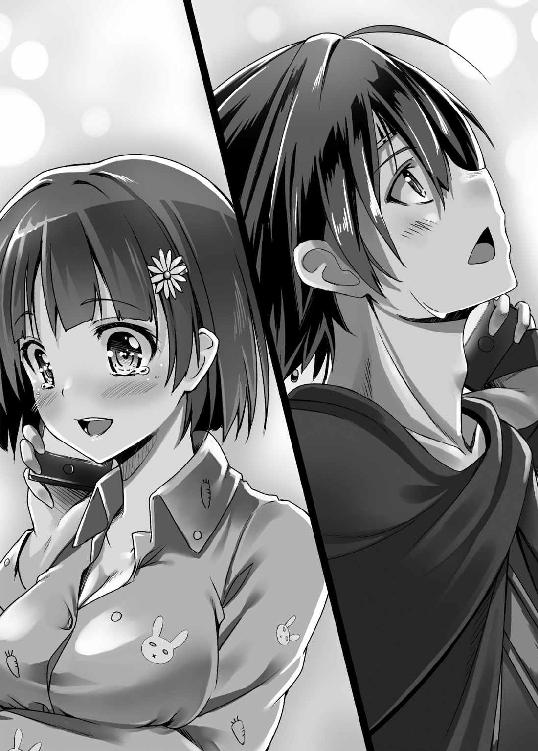
元いた世界の人間の助けも、期待できそうにない。二年前、勇斗がいなくなったことは、一応問題にはなったらしい。だが勇斗と美月の言葉は誰にも信じてはもらえなかった。
当然といえば当然である。合わせ鏡をしたら別の世界に飛ばされたなんて荒唐無稽な話を聞かされても、大抵の大人はふざけるなとしか思えないだろう。それでも付き合いのいい刑事の一人が冗談半分にあの神社の鏡を合わせ鏡で覗きこんだらしいが、何も起きなかったとのことだ。
結果、電話が通じることでむしろタチの悪い狂言としか思ってもらえず、また発信記録が八尾市内となっており緊急性が低いとして、単なる家出として警察には処理されている。
もっとも警察が本腰を入れて捜査したところで、真実にたどり着き、勇斗を救出できるとは思えなかったが。
「たとえ帰れたとしても......」
勇斗は自らの手を見下ろす。すでにこの手は数多の血で汚れている。こんな自分に、彼女に触れる資格などそもそもあるのだろうか。自問しかけて、
「......って、やめだやめ」
勇斗は頭を振って嫌な考えを振り払う。弱気になってどうする？ 自分はなんとしてでも彼女の下に帰るんだ！ そう改めて心に誓う。
「父上、いつまでもここにおられてはお風邪を召されます」
「っ！」
背後からかけられた聞き覚えのある声に、勇斗は思わずビクッと身体を強ばらせた。
その、後ろめたさに。
振り返ると、ジークルーネがひっそりと立っていた。おそらく電話中ずっと、黙って気配を押し殺して控えていたのだろう。
フェリシアが不在の時は彼女が勇斗の護衛を引き受ける手はずになっている。彼女とて長い戦場暮らしで疲れているだろうに、身勝手な都合で駆け出した勇斗を、この長い階段を昇って追ってきてくれたのだ。
その忠誠が、心苦しい。
不意に、脳裏を《狼》の氏族の皆の顔がいくつもよぎっていく。
そう、自分はいつか帰らねばならない。
だが、ジークルーネだけでなく、勇斗を慕い頼ってくれる皆を、自分はその時、振りきれるんだろうか。
これほど世話になり、親しくなった人たちを。
一年前なら、出来た。
だが、今は自信がない。
その男は宵闇の中、のっそりと体を起こした。
傍らには裸の女が眠っている。じっとりとその肌には汗がにじみ、部屋にはどこか淫靡な空気が漂っていた。
「何用だ？」
男がじっとドアを見つめ、傲然と問う。
ドアの外で身震いする気配があった。まさか声をかける前に気づかれているとは思ってもいなかったのだろう。
だが常在戦場を旨とするこの男にとっては、これぐらいは造作もないことであった。
「お、親父殿、夜分、失礼致します。《角》の若頭ラスムスが出立したと間者から連絡がありました。また、なんでも《狼》と《角》が兄妹の盃を結ぶとのことです」
「ほう？ 兄妹の盃か。......ふむ、ちょうどいい。むしろ好都合ではないか。手筈通り兵を集めろ」
「はっ！ ふふ、久しぶりの戦ですね、腕が鳴ります」
「うむ、これでようやく念願のビフレストへの道が拓けるわ。さて、ここのところ評判の《狼》の小僧はどう出るかのう？」
男はその巨大な体を揺らしつつ、ニヤリと楽しげで凶悪な笑みを浮かべた。
ACT 3
「朝です、父上」
「起きてくださいませ、お兄様」
凛とした鈴の鳴るような声と絹のように柔らかい声に、勇斗はまどろみから覚めた。
ついで、ガタッと誰かが何かを動かす音が聞こえた。途端、陽光が目蓋の上から差し込んできた。窓の立板を外していたようだ。この世界にはまだガラスがないので、窓は木の板で塞いでいるのである。
「ああ、ふたりともおはよ」
勇斗が目を見開くと、その金と銀の髪を陽光に煌めかせた天使たちが、視界に飛び込んでくる。
ここは勇敢な者だけが行けるという天国かと錯覚さえしそうになると同時に、わずかな失望が勇斗の心をかすめる。目が覚めたらそこは現代日本の勇斗の部屋で、なんてことはやはりないのだ、と。
「おはようございます、父上」
銀色のほう――ジークルーネがさっとその場に片膝をつき挨拶すれば、
「おはようございます、お兄様。朝食をお持ちいたしましたわ」
金色のほう――フェリシアがベッド横のテーブルにパンとスープ、そしてミルクの載った盆を置きつつ、にっこりと微笑む。
焼きたてパンの美味しそうな芳香が、勇斗の鼻腔をくすぐってきた。その匂いに誘われてというわけではないが、寝ぼけた頭がようやく覚醒してくる。
「ふああ、久しぶりに熟睡できたよ」
ベッドから身体を起こしつつ、勇斗は大きく伸びをした。
当然ながら、この世界には低反発マットレスなんて上等なものはない。ベッドは固く寝心地がいいとはお世辞にも言えないが、それでも自分の部屋というものは、精神的にくつろげるものだ。一晩でかなり疲れが取れ、身体は軽くなっていた。
「それはようございました」
「ああ、もう元気いっぱいだよ」
「それは......確かみたいですね」
なぜかその視線は勇斗の顔のほうではなく、ある一点を向いていた。
勇斗は思春期真っ盛りの男であり、そして今は朝だった。
「ふふふ、わたくしでよければ今からお鎮めいたしましょうか？」
フェリシアは妖艶に微笑みつつ、そっと勇斗のベッドに手を突き、もう片方の手で髪をかきあげながら顔を寄せてくる。
勇斗は慌ててぶるぶると激しく頭を左右に振った。
「い、いや、そういうのは結構っていつも言ってるだろ！」
「あら、でもここはそうは仰ってはいないようですが」
「ただの生理現象だし！」
今は違うような気がしないでもなかったが。もちろんそんなことは口に出すわけにはいかない。
フェリシアはペロリと艶かしく舌なめずりし、
「ふふっ、今日の午前のお勉強はそういうことに......」
「おふざけも大概にしないと不敬罪でたたっ斬るぞ、フェリシア。父上がお困りであろう」
それまで黙っていたジークルーネが、腰の刀に手をかけつつ剣呑な気配を放つ。
フェリシアの誘惑攻勢にたじたじだった勇斗は、その頼もしさに心の中で喝采を送ったものだったが、
「あのね、ルーネ。お兄様の健康管理も副官であるわたくしの職務なの。男の人というものは出すものを出さないと健康に悪いそうなのです」
「なに、そういうものなのか？」
「ええ、それだけでなく古より女に狂った王が国を傾けると言います。悪女の手練手管に惑わされぬよう、宗主たるお兄様には誰かが前もって女というものを手ほどきして差し上げねば危険でしょう？」
「ふむ、なるほど。確かに一理あるな。父上、貧相ながらわたしの身体も宜しければ使ってくださいませ」
あっさり丸め込まれて寝返ったジークルーネに、勇斗は思わず天井を仰いだ。
ジークルーネに見えないように、フェリシアがにんまりと笑みを浮かべているのがチラリと見えた。どう考えても、悪女はフェリシアのほうだった。
ぐ～！
唐突に、勇斗の腹の虫が節操なく鳴り出した。昨日はとにかく眠たくて夕飯を取っていなかったのだから当然といえば当然だ。
しかしこれぞ勇斗にとっては反撃のまたとない好機であった。
「い、今は色気より食い気！ 飯だ飯！」
「ふむ、確かに腹が減っては何もできませぬな」
またあっさりとフェリシア側から勇斗へと寝返るジークルーネ。もっとも彼女自身にはそんなつもりは毛頭なかったのだろうが。
戦争において最も重要となるのが兵站、すなわち食料の確保だ。『最も強き銀狼』であるジークルーネがそれを知らぬはずもない。彼女の中では腹を満たすことは何より優先される事項なのだ。
「あ～らら、ざ～んねん。女を抱くことを覚えれば、その間ぐらいはいろいろなことをお忘れになれますのに......」
「た、助かった......」
ほっと安堵の吐息を漏らしつつ、勇斗は朝食へと目を向ける。
パンやスープは銀製の皿に盛られていた。市井の庶民たちが土をこねて作った土器を使っている中、少々申し訳ない気もするが、宗主があまり質素すぎる生活をしていても体面が悪い。なにより土器では、なんとなくまた腹痛に悩まされそうな忌避感があった。
「父上、失礼いたします」
ジークルーネは机に置かれたパンとスープに鼻を近づけくんくんと鼻を鳴らす。そして一つ頷いてから、パンを一口かじり、スープをすする。
お腹を減らしている勇斗への嫌がらせ......なんてことはもちろんなく、いわゆる毒見だった。
本来、氏族一の勇者に任せる仕事ではないのだが、なんでもジークルーネは毒物に関して異様なまでに鼻が働くのだという。
実際、これまでも毒入り料理を二度ほど見抜いている。これを食べたらヤバい、と本能がけたたましく警報を鳴らすのだそうだ。
「大丈夫です。どうぞ」
「ああ、いつもありがとうよ」
礼を言いつつも、内心うんざりもする。毎日毎日、常に毒殺の警戒をしなければならない。つくづく宗主というのものは因果な立場だった。
「じゃあ、いただきます」
安全が確認された料理に勇斗はぱんっと手を合わせ、まずはパンを手に取る。ユグドラシルにこのような風習はないが、身体に染み付いた癖はそうなくなるものではない。
パンは、どこかメロンパンをほうふつとさせる形をしていた。焼きたてだけあってまだかなり熱を持っているそれを、あ～んと大口を開けて口へと運ぶ。
ジークルーネとの間接キスになるが、これも一年も経てば、いい加減慣れてしまっていた。いちいち気にしていたら食事もままならなくなる。
「うん、美味い！ 俺が来たばっかりの時のと比べると、ほんと雲泥の差だな。チートした甲斐があったぜ」
焼きたてならではの香ばしさと、ふんわりとした生地の食感を楽しみながら、勇斗はしみじみと呟く。
パンを作るには、まず小麦を製粉して小麦粉にしなくてはならない。勇斗がこの世界に来た当時、その製粉方法は、平べったい石の上に小麦を置いて、細長く丸っこい石でひたすらゴリゴリゴリゴリ磨り潰すという、実に原始的なものだった。
しかしこのやり方は、小麦の殻や石がどうしてもけっこう混じってしまう。当然ながら、こんな小麦粉で作ったパンはときどきガリッ！ とかゴリッ！ とかいって不快なことこの上なかったのだ。
「お兄様のおかげで、ほんとに最近のパンは美味しいです」
フェリシアも嬉しそうに微笑む。
ジークルーネも深々と頷いていた。誰だって、毎日口に入れるものは出来る限り美味しいほうがいいに決まっている。
勇斗も、同様だった。現代のパンに慣れきっていて砂利入りパンを食うに堪えなかった彼は、ネットを使って臼について調べあげ、それ系の電子書籍も読み漁った。
そしてついに、円盤状の石を二つ重ねて、ぐるぐるぐるぐると木を挿した上の石を横に回転させる、いわゆるロータリーカーンと呼ばれる新型の臼を作り上げてしまったのだ。
ちなみに、ロータリーカーンが歴史に初めて登場したのは紀元前六世紀頃、ユグドラシルの文明レベルから考えると、これも時代の数百年先を行くオーバーテクノロジーである。
「ああ、そういえば、パンで思い出したよ。水車はどうなっている？」
思い出したように勇斗は問う。
自分だけがこんな美味いパンを食べるというのも気が引けた。とは言え所詮、人力では限界があった。そこで勇斗はこれまた電子書籍を見つけ自らも試行錯誤して、水力の製粉小屋を作ったのだ。
思いの外これが便利で、現在、すでに五台稼働させている。ただなにぶん、素人の手作りだ。作ってからもう一年以上も経つ。なにかしらトラブルが起きていてもおかしくなかった。
「今のところ問題なく稼働しておりますわ」
「そうか。そりゃなによりだ」
頷き、勇斗は牛乳を一気に飲み干す。これも搾りたてならではの実に濃厚な味わいで、日本の市販の牛乳などとは比べ物にならない美味しさだ。
この辺りは現代日本人よりはるかに贅沢といえよう。
それでも、勇斗はどうしようもなく物足りなさを感じてしまう。
異世界で二年暮らそうと、やはり勇斗は日本人だった。
気候や土壌の関係で、難しいことはわかっていた。だが、それでも――
「米が、食いてえなぁ」
ここに来てからというもの、勇斗は真っ白なご飯が恋しくて恋しくて仕方なかったのだ。
「～～こうして、初代神帝ヴォータン陛下によりユグドラシルは統一され、神聖アースガルズ帝国の建国が首都グラズヘイムにおいて宣言されました。今よりおよそ二〇四年前のことです」
宗主の執務室に、フェリシアの鈴の鳴るような朗々たる声が響いていた。
勇斗にとってフェリシアは有能な副官であり、護衛であり、また姉であり妹であり友人であり恩人であり、そして先生でもあった。
この世界に来たばかりの頃の勇斗にとって、《交渉》の呪歌が使えるフェリシアだけが唯一、意思疎通が出来る相手だった。
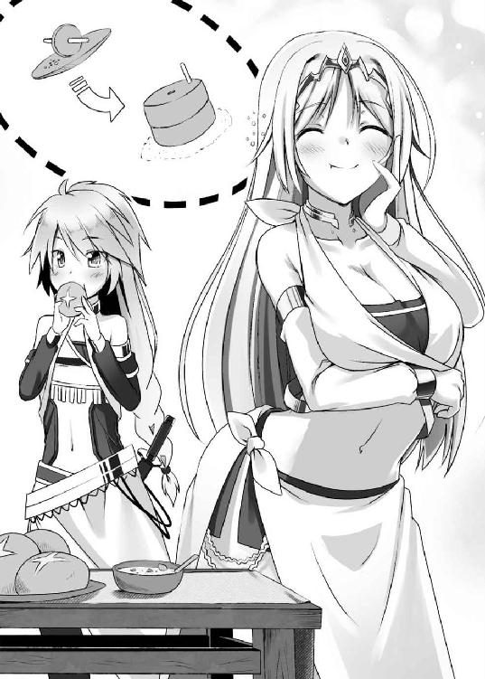
当時の彼女は巫女の職にあり、宮殿内にある神殿に足しげく通っては、この世界の言葉を教えてもらったものである。
人間、追い詰められると普段からは考えられないような力を発揮するものだ。三ヶ月も経たないうちに、勇斗はフェリシア以外の人間ともある程度意思疎通ができるようになっていた。
二年経った今はすでに聞き話すことに関してはほぼ不自由はなくなったが、宗主となったからには知っておかなくてはならないことがたくさんある。
だから今もこうして、午前中は勉強に時間を充て、フェリシアからユグドラシルについての講義を受けるのが日課となっていた。
今日は歴史に関しての講義なのだが――
「ほんと北欧神話の名称ばっかだな。やっぱり俺のいた世界とこの世界はつながってるってこと......か」
「お兄様、何か気になる点でも？」
「いや、なんでもない。単なる独り言だ。続けてくれ」
「はい。ヴォータン陛下は長さや大きさ重さといったいわゆる度量衡や、数の数え方を統一し、公用語をノルド語にするなど、様々なものを共通化されました。また各地方の交易を盛んにするため、道路や運河などの交通網の整備にも尽力されました。ヴォータン陛下の施策は、今日の我々の生活に、今も息づいていると言っても過言ではないでしょう」
「へ～、かなりの名君だったんだな」
思わず感嘆の吐息が勇斗の口から漏れた。
二〇〇年経っても役に立ってるのだ、大したものだと素直に思う。
「はい、類まれなる実行力を持った、偉大な大帝であらせられました。ただ、ヴォータン陛下はあまりに強く、そしてあまりに多くのことを一度に変えすぎたのです」
「と、言うと？」
「ヴォータン陛下が行った改革の最たるものが、氏族制度です。当時は、地位は血縁により受け継がれておりましたが、より能力のある者が高い地位につけるよう世襲を禁じたのです」
「良い事のように聞こえるけどな？」
何が問題なのかわからず、勇斗は首を傾げる。
いくら親が素晴らしい人間だからと言って、その子まで素晴らしいとは限らない。カエルの子はカエルの時もあれば、鳶が鷹を生むこともあるだろう。
ならば、より有能な人間が指導者になれるようにしたほうが、世襲よりはるかに能率的であるように勇斗には思えた。
「先祖代々土地を治めてきた領主などの中には、当然、恨みに思う者も少なくありませんでした。また先に述べた様々な急進的な政策には、反発を覚える者も多くいました」
「なるほど、ね。既得権益者の恨みを買ったわけか」
自然、勇斗の手はポケットの中にあるスマートフォンへと伸びる。彼の脳裏をよぎったのは、何度も何度もこれで読み返した君主論だ。
憎悪されることと軽蔑されることを、君主は絶対に避けねばならない。特に、持てる者から地位や金銭、妻を奪うことは強い恨みを買うから、気をつけねばならない、とマキャベリは述べていた。
勇斗もいろいろ新しいことを取り入れていこうとしている身だ。他人事ではなかった。
「また、この施策は、一方で神帝一族だけは世襲を認めていました。つまり、地方領主の力と権威を削ぎ、神帝の地位と権威を高める意味も持っていたわけです。代を重ねられなければ皇帝に歯向かう力も溜め込められないだろう、と」
「チートすぎっだろ。そりゃ反発されるわ」
勇斗はげんなりと吐き捨てる。先ず隗より始めよ、ということわざもあるように、リーダーが率先して陣頭に立たない限り、人がついてくるわけがないのだ。
「それでも絶大なる力を誇ったヴォータン陛下の御世には、陛下を畏れ皆おとなしくしていたのですが、次に即位されたシギ陛下の御世になると、急速に国は乱れました」
「さもありなん、だな」
「シギ陛下の時代はまさしく、先祖代々の権力を固持しようとする勢力と、ヴォータン陛下の言葉を大義に、能力ある者がその地を治めるべきとする勢力の戦いでした。各地で激しい戦いが繰り広げられ、やがて残ったのは後者でした」
「なるほどなぁ。その流れで、今みたいな子分の中で一番力があるやつが次の宗主に推挙されるようになっていったのか」
「はい、まあ、昔ほど血縁による制約はなくなりましたけどね。実力さえあれば、実子が跡目を継ぐこともございます」
「それもあくまで、実力が認められて、なんだよな」
「ええ。もし実力ではなく、我が子可愛さに禅譲しようとしても、子分たちはその者を新たな宗主とは認めないでしょう」
「そうだな」
勇斗の先代には血を分けた息子が一人いるが、齢三〇を超えてもうだつが上がらず、幹部の末席にも名を連ねることができない下っ端に甘んじている。世が世なら王として万人の上に君臨していたはずなのに、だ。
一方でフェリシアやジークルーネなどは、その若さにもかかわらず氏族の重鎮として厚遇され、尊敬を集めている。
罪人の子どもであろうと力さえあればしっかり認めてもらえるが、一方で、たとえ宗主の実の子どもであろうとも力を見せられなければ軽んじられる。
それがここ、ユグドラシルの絶対の「法」だった。
実に厳しいが、一方で極めて合理的だとも思う。
能力に関係なく血筋や家柄で選ばれた将ばかりの旧勢力が、実力でのし上がった有能な将が揃う新勢力に駆逐されたのは必然と言えよう。
「神聖アースガルズ帝国は以降、その勢力を著しく弱体化させていきましたが、一方で権威だけはヴォータン陛下の思惑通り高まっていきました。後ろ盾を持たない氏族の長がその地を治めるためには、神帝の代理であるという大義が必要だったからです」
「ふむ、戦国時代の将軍や天皇みたいなもんか」
「はい？」
それまでよどみなく講義を続けていたフェリシアが、首をかしげる。いくら聡明な彼女とはいえ、勇斗の世界の歴史にまでは精通しているはずがなかった。
苦笑しつつ、勇斗は手を振る。
「要は政治的に利用しやすい存在、ってことだろ。適当な役職もらって自らの権威を高めたり、領地を公認してもらったり、泥沼化した戦の調停役になってもらったりとか」
戦国時代は、やっぱり男としては燃える時代なので、勇斗もいろいろ調べたりしたものだ。主に某有名戦略国盗りゲームの影響だが。
フェリシアは勇斗の言葉に少しだけ驚いたように目を瞠っていたが、やがて生徒の優秀さに満足そうに微笑んだ。
「さすがはお兄様。ご明察の通りです」
「いらっしゃいいらっしゃい、うちのはいい品ばかりですよ～」
「そこのお嬢さん、いかがです？ アースガルズ製の櫛ですよ」
「いやぁ、お目が高い。これはヴァナヘイムでも名のある名工が打った剣で」
午前の勉強も一段落し、気分転換も兼ねて勇斗が城の周りを散歩していると、中庭はガヤガヤとした喧騒と人混みに包まれていた。
バザールである。ものを売っているのは交易商人たちだ。ある地方で商品を買い、延々と旅して遠くの地方で商品を売り、その差額で生活を営んでいる。野盗に襲われたり、旅の途中で食料が尽きたりすることもあり、非常に危険な職業と言えたが、一攫千金を夢見、志す者はなかなか多い。
「なかなか活況のようですね」
勇斗の隣でフェリシアが満足気に頷く。
商人たちの納める場所代は《狼》の重要な収入源である。商人たちにしても、城に勤める人間は市中の人間に比べ裕福な人間が当然ながら多く、高級品を売るにはうってつけの場所だった。
学校の運動場ぐらいはあろう中庭にはところどころにテントが立ち、その軒下には食料から衣料品、武具や宝飾品、家畜に至るまで実に様々なものが並んでいる。
交通の要衝にある街だけあり、商品は実に豊富だ。金に糸目さえつけなければ、大抵のものは手に入る。
それこそ......人間であろうと。
「今度の商品はこちらの母娘です。どうです、なかなかの美人でしょう？ しかも、この北国特有の雪のように白く透き通った肌！ なかなか良い暮らしをしてきたらしく肉付きもいいです。娘のほうも御覧ください。母によく似た顔立ちをしているでしょう？ いずれは母に負けぬ美人になるかと。ふひひひひ」
頭を白い布でぐるぐると巻いた恰幅の良い男が、抱き合う母娘に手を向けつつ、下卑た笑みをこぼす。
母娘は怯えた表情で震えあい、引き離されまいという決意が滲み出ているかのごとく強く強く抱き合っていた。娘のほうはまだ見たところ、一〇にも満たぬ年である。
「あんなちっちゃい子まで......」
思わず勇斗は眉をひそめた。
いわゆる奴隷売買である。ユグドラシルに限らず、近代に入るまで世の東西を問わず公然と行われてきた商売だった。侵略してきた他氏族に生まれ育った土地を奪われ、交易商人たちに売り飛ばされた人たちであり、戦争に負けた国の人間の末路でもあった。
「買った」
勇斗が手を挙げると、どよめきとともに人垣が割れる。
ユグドラシルでは黒髪の人間は極めて希少だ。商人もすぐに勇斗が何者なのか気がついたようだった。
「おお、これは宗主様！ ありがとうございます！ つきましては......」
「フェリシア」
「はい。これぐらいあれば足りるでしょう？」
スッとフェリシアは革袋から小石ぐらいの金塊を三つ取り出し、商人に手渡す。たったこれだけが、人間二人の値段なのだ。
内心の憤りを抑えつつ、勇斗はゆっくりと母娘に近づき、女の子と目線の高さが合うようしゃがみこむ。ビクッと女の子が身体を震わせ、母親の陰に隠れた。それだけで、これまでよほど怖い思いをしてきたのだろうことがわかる。
別にこの商人が特別悪辣なわけでもない。彼らはただ奴隷たちを同じ人間と思っていないだけだ。
古代ギリシャの大哲人アリストテレスですら、人が人を買うことを肯定し、全く疑問を抱かなかったという。今はそういう時代なのだ。
「もう大丈夫だから」
出来る限り優しい笑みを作ってそう言って、勇斗は立ち上がりキョロキョロと周囲を見渡す。すぐにお目当ての人間を見つけ、
「おい、そこの衛兵！ 彼女たちを侍従長のところに連れて行け。くれぐれも丁重に、な」
「はっ！」
衛兵にとっては、勇斗はまさに雲の上ともいうべき存在である。突如呼ばれたことに挙動不審げに視線を彷徨わせたものの、ビシッと直立不動の姿勢を取って答える。
宮廷の中へと消えていく母娘を見ながら、勇斗は苦虫を噛み潰したような顔になる。やはり「人を買う」ということになんとも生理的な嫌悪があった。
宗主の権限によって領内で奴隷売買を禁止することも、できないことはない。だが、それをしたところで他の土地で売られるだけだろう。所詮、それでは勇斗の自己満足が満たされるだけで、なんら奴隷となった人たちが救われるわけではない。
商人たちの不興を買うのも、弱小氏族であり、貿易立国でもある《狼》には出来る限り避けたいところだ。
ならば、自分が買い普通の人間として扱うのが結果的に奴隷のためになる、と思ってのことだ。実際、勇斗が買った奴隷たちは、宗主所有という体裁のため、誰かに虐げられるなどということはまったくない。皆、何かに怯えることもなく、自然体で宮廷内で楽しそうに働いている。彼らは一様に、勇斗への感謝の言葉を口にする。
それでも、やはり後味の悪さが、勇斗の心を苛んだ。
全ての奴隷たちを救えるわけでもない。自分の手がとどく範囲でだけ救う。なんとも偽善的な行為に思えて仕方なかった。
「ほんと、ちっぽけだよな」
勇斗はグッと拳を握りしめる。
自分の手はなぜこんなにも小さいのだろうと憤りを覚えずにはいられなかった。
「どこに目をつけている!? 相手の剣じゃない。全体を見るんだ！ 次！」
城門のそばまでくると、ジークルーネの凛とした声が響いてきた。
目を向けると、ジークルーネが衛士たちに稽古をつけているところだった。プラチナブロンドの髪が可憐に揺れている。
「踏み込みが浅い。脇を締めろ。次！」
次々と打ち込まれる木剣による攻撃を軽々とさばきつつ、ジークルーネは檄を飛ばす。
その声には、見ているだけのはずの勇斗が身震いしてしまうぐらいの厳しさがあった。勇斗と接する時の彼女は、いつも借りてきた猫のように従順なので、今のきりっと引き締まった硬質な美貌で衛士を叱咤する姿は、新鮮でもあり懐かしくもあった。
勇斗もこの世界に来たばかりの頃は、ああやって彼女に鍛えられていたのだ。
「相変わらず、チートな強さだなぁ」
我知らず感嘆の吐息が漏れる。
ジークルーネが相手をしている衛士たちは、決して弱くはない。曲がりなりにも城内の警備を任されるぐらいだ。皆かなりの腕前と言ってよかった。
にもかかわらず、ジークルーネは赤子の手をひねるかのごとくあしらってしまう。
「ええ、ほんとに。わたくしでも彼女を相手に一〇合持たせるのがやっとですから」
「フェリシアでも一〇合かよ......」
脇で同じように、模擬戦を見学しているフェリシアの言葉に、唖然とする勇斗。
フェリシアとて、《狼》でも五本の指に入る剣腕の持ち主だ。その彼女でもたったそれだけしか持たないというのだから、ジークルーネの戦闘力はやはりズバ抜けているというしかなかった。
「どうにもわたくしの《無貌の従者》は器用貧乏になりがちで、それぞれの分野では本職には敵わないんですよね」
フェリシアは頬に手を当て、憂鬱そうに溜息をつく。なんでもできるが、決して一番にはなれない。その辺りに多少、コンプレックスを感じているのかもしれない。
もっとも勇斗に言わせれば、フェリシアの《無貌の従者》にはそれを補って余りある汎用性があるのだが。
「どうした、お前の力はそんなものか!? その立派な筋肉は見せかけか!?」
男女の筋力差は、ユグドラシルでも当然、厳然として存在している。しかも相手の衛士は体格もよく、腕の太さなどジークルーネの倍ぐらいはありそうだ。
ジークルーネはその渾身の一撃をあっさり弾き返していた。明らかに人間離れしている。
――が、化け物じみてはいない、とも一方で勇斗は思う。
勇斗のいた世界においても、超一流のアスリートの中にはゾーンと呼ばれる神がかり的な集中状態になることで、常識では考えられない力を発揮する人たちが少ないながら存在している。
打撃の神様と言われた野球選手は「ボールが止まって見える」の名言を残した。
奪三振記録を持つ投手は、最も好調な時、「外角の境界線がキラキラ光って見えた」らしい。そこに放り込むだけで打者を打ち取れたと言う。
また、あるサッカー選手は、ピッチを上から俯瞰するように観ることが出来る時があるという。
勇斗の見たところ、多少の例外はあるが、基本的にはエインヘリアルの力はその程度だ。神の加護といっても、某無双ゲームのように単騎で一〇〇人二〇〇人と屠れるような超人的なものでは決してない。
「っ！ 父上!?」
バッとジークルーネが戦いの最中だというのに後ろを振り返る。
だが、突然のことに相手の木剣は止まらない。
惨劇の予感に、勇斗は思わず息を呑む。
前述の通り、エインヘリアルは決して無敵の存在ではない。特に《月を食らう狼》には肉体の強度を上げるような加護はない。あんな勢いで木剣を頭に叩きつけられてはただで済むはずがなかった。
カンッ！ しかし、辺りに響いたのは人を叩いた時のような鈍いものではなく、どこか乾いた音で――
「......化け物め。いったいどこに目をつけてるんだか。ほんとチートすぎだろ」
ほうっと安堵の息とともに勇斗はやれやれと首を振る。
完全によそ見をしていたというのに、ジークルーネの木剣は、相手の攻撃をしっかりと受け止めていた。
『最も強き銀狼』の二つ名は決して誇張ではないとつくづく思い知らされる。達人は目に頼らず物を視るというが、ジークルーネは若くしてその域に至っているようだった。
「うむ、今のはいい一撃だった。よし、一時休憩だ！」
「「「ありがとうございました！ 母上！」」」
兵士たちがわずかのズレもなく、唱和する。頭の下げ方なども非常にキビキビとしており、普段のジークルーネの指導の厳しさがうかがえた。
ジークルーネを母と呼ぶところからして、どうやら彼女の若い者のようだった。
宗主の 盃を誰彼かまわず下ろしていては、盃が軽くなるし、何より命令系統が煩雑になる。宗主――すなわち勇斗の盃を受けているのは、《狼》でも一握りの幹部と、その器量を認められた幹部候補生のみ、せいぜい五〇人にも満たない。
それ以外の者はみな、幹部たちと親子盃を交わしてその幹部の「組」に所属し、幹部直属の部下として氏族に仕えるのが常であった。
ジークルーネに限らず、若頭のヨルゲンやフェリシアも、勇斗の子弟であると同時に多くの子分を抱えた組長でもあるのだ。
概ね、「組」は組長の特徴がよく出ると言われている。ジークルーネ組は、《狼》でも有数の武闘派が勢揃いしているし、フェリシアの抱える組などは文官が多いなどといった具合だ。
「おー、稽古お疲れさん。相変わらず、つええな」
「お疲れ様です、父上！ 朝のお勉強は終えられたのですか？」
ジークルーネは勇斗のほうを振り返るや、顔をほころばせタタタッと駆け寄ってくる。
先程までの鬼教官とはとても思えない変わり様だった。
「まだ半分だよ。それよりさっきの凄かったな。見もせずに受け止めるとか、さ。あれも《月を食らう狼》の力なのか？」
「あ、はい。なんとなく風を切る音でつかめるというか......」
「ああ、なるほど。い......じゃなかった狼の聴覚は人間よりはるかに上だしな」
犬と言いかけたのは内緒である。
どうにも最近、ジークルーネの所作のいちいちが犬っぽく見えて困る勇斗だった。
「しかし、ルーネの能力はいろいろうらやましいな」
「そ、そんな！ 父上に比べたらわたしの力など......」
「いや、そう卑下すんなって。ほんとすげえよ」
腕を組み、しみじみと勇斗は頷く。
強くありたいという願望は、男にとってはもはや根源的なものなのだ。その卓越した身体能力は、やはり憧れずにはいられない。
また、この世界に来たばかりの頃は、週に一度は食あたりを起こしていたものだ。今はさすがに身体もなれてくれたが、当時は食べ物を口にするのに忌避感を覚えたほどだ。
生きるためには食べないわけにもいかず、地獄に等しい時間だった。彼女の力が自分にあれば、ずいぶんと楽だったように思う。
「わたしの《力》など所詮は戦うことにしか使えません。それも兵一〇〇人分にも満たぬちっぽけなものです。万人を導く父上の《力》には到底及びませぬ」
「あれ、おまえ、以前、俺のこと使い物にならんとか断言してなかったっけ？」
「うっ、あ、あの頃のことは、その、汗顔の至りで......」
ジークルーネがバツが悪そうに表情を曇らせしどろもどろになる。ちょっと意地悪ではあったが、勇斗としてはまた持ち上げられてはかなわない。
もっとも、当時の勇斗を役立たず扱いしたのは彼女に限らない。むしろ《狼》のほとんどの人間が、勇斗を蔑んだ目で見たものだ。
来たばかりの頃こそ勇斗の奇妙な出で立ちなどから天の御使いではないかという者もいたらしいが、そのあまりの虚弱っぷりに一ヶ月も経たないうちに呆れ果て、そんなことを言う者はいなくなった。
言葉もろくに話せない、力仕事はできない、この世界の常識はまるで知らず子どもでもできることができない、とないない尽くしな上に、すぐに腹痛を起こして寝込んでばかり。当然と言えば当然だった。
苦笑しつつ、勇斗はちらりと隣に立つ副官に視線を向ける。
「ん？ どうされました、お兄様？」
フェリシアが不思議そうに首をかしげる。あの頃のどうしようもない勇斗に優しく親身に接してくれたのは彼女ぐらいだった。
いや、もう一人、いた。
フェリシアの実兄であり、勇斗にとっても無二の親友と呼べる男が。
強く、賢く、人望もあり、《狼》の皆から将来を嘱望されていた。
だが今はもう、いない。
「......いや、なんでもない」
勇斗は小さく首を振った。
自分には彼のことを口にする資格がない。勇気も、ない。フェリシアが勇斗に負い目を持っているのと同様、勇斗もまた、フェリシアに負い目を感じていた。
なぜならフェリシアから唯一の肉親を奪ったのは、他でもない勇斗なのだから。
「お兄様のご提案により実験的に導入したノーフォーク農法ですが、四種とも生育は今のところ問題ないとのことです」
日々上がってくる情報に目を通し、陳情や懸案に決裁を下すのが宗主としての勇斗のルーチンワークである。
午後からの彼は、ひたすらそれに忙殺されていた。一ヶ月以上、留守にしていただけに仕事は山ほど溜まっている。
「とりあえず滑り出しは上々、か」
《狼》の領土は山や丘陵地帯がほとんどで、あまり農作物の生産には適していない。だが、当たり前ながら食べねば人は生きてはいけない。
なんとか収穫量をあげようとまず勇斗が思いついたのは、学校の教科書で見かけた「二毛作」とか「二期作」だった。一年に二回、同じ農地から違う作物を採取すれば、生産力を向上できるだろう、と。
ただ所詮は素人考えだ。調べてみると、二毛作は土地をかなり消耗させ、一時しのぎにはいいが、やがては農作物の育たない土地になってしまうことがすぐにわかった。それでは五年一〇年先に行き詰まるのが見えている。
そこで二毛作を調べる過程で見つけ現在試しているのが、農地を四つに区分し、大麦→クローバー→小麦→カブの順に四年周期でローテーションを組んで耕作するというノーフォーク農法だ。
現在、ユグドラシルでは土地が痩せるのを防ぐ意味もあり、隔年栽培が基本である。
だがこのノーフォーク農法なら、これまで休耕させるしかなかった畑に大地の力を回復させるマメ科の牧草であるクローバーを植えたり、家畜の飼料になる根菜類であるカブを植えることにより、農業生産の向上と地力の回復を両立させることができる。しかもさらに家畜の生産量まで飛躍的に増やせるようになるという。
「まあ、本当に結果が出るのは数年先ってところだけどな」
はあっと勇斗は溜息をこぼす。
画期的だからと言って、おいそれと導入することはできない。勇斗の知識はあくまで書物から得たものすぎない。やはり実践からしか得られぬ智慧というものが、世の中にはごまんとある。
例えば木の板の凹みに木の棒を立て両手で挟み、回転させるという原始的な火の付け方を勇斗は知ってこそいたが、未だにコツがつかめないでいる。ただ知っているのと実際にできるかどうかは大違いなのだ。
本にそう書いてあるからと大規模に実践して万が一にも失敗すれば、対象が食物だけに餓死者が出かねない。だから今はまだ小さい農地で実験中という段階だった。
ただでさえ農作物というのは一年に一回にしか収穫できない。ローテーションを一回りするだけでも四年かかるのだ。なんとも気が遠くなる改革ではあった。
「次です。お兄様が伝授してくださった紙の人気はますます高まっており、生産量をあげてくれとの陳情がいくつも来ております」
「伝授っつっても、ノーフォーク農法も紙もチートで、俺が考えたものじゃあないけど、な」
「でも、おかげで今年も飢えに悩まされないのは確かですわ。素晴らしいことです」
「そうだな、腹いっぱい食えるってのはいいことだ」
この世界に来てからというもの、勇斗は何度となくひもじい思いをし、空腹が心をささくれさせるということを身をもって知ったものだ。
ユグドラシルには文字こそあったものの、『紙』はまだ存在していなかった。粘土板や木片などに文字を刻み、情報伝達のための手段としていたのだ。
当然、現代日本人の勇斗の脳裏をよぎったのは、教科書にあったパピルスの四文字である。なんとはなしにネットで調べてみれば、そこらの雑草から紙を作る方法なんてものがアップされていた。
素人でもなんとか出来そうだったので試しに作ってみたところ、現代人感覚ではとても売り物にもならない拙いものではあったが、これが交易商人たちに飛ぶように売れたのだ。
雑草はそこら辺に山ほど生えている。紙の制作にも農作物ほど時間を要さない。ぼろ儲けもいいところだった。
その利益で小麦を商人たちから買い漁り、さらに朝に話していた水車小屋で製粉し、販売することでこれまたとんでもない利益が上がる。
この一連の商業政策により、《狼》の食糧事情と財政は劇的に改善していた。
恒常化していた飢えから救い、生活を向上させ、外敵を追い払ってくれる理想的な君主を、民衆が支持しないわけがない。昨日の戦勝パレードにおける民衆の熱狂的な歓迎ぶりは至極当然のことだったのである。
「それで、どうします？ 生産量を上げますか？」
「いや、やめておこう。当分は今のままで」
「わかりました、ではそのように取り計らいます」
「本当は街のみんなにも紙の作り方、教えてあげたいんだけど、な」
利益を城の人間だけで独り占めしていることにどうにも罪悪感が拭えない。市井に紙の作り方を教えれば、より多くのひとが利益を享受できるようになるのではないか、そういう誘惑にしばしば駆られる。
とは言え、紙は普通の中学生だった勇斗でもネットを見ながら手探りで作ることが出来る代物だ。それほど高度な技術を要さない。市井に流せば、外部にも漏れやすくなるだろう。そして他も生産し始めれば、《狼》の独占状態は終わりを告げることになる。
それはまた食うにも困る窮乏の日々に逆戻りすることを意味した。誰が自分たちでも作れるものを大金を払って遠くまで買いに来るというのか。宗主としては絶対に避けねばならない事態だった。
「失礼します！ 《角》からの書簡が届きました！」
唐突に兵士の一人が執務室に駆け込んでくるや、直立不動の姿勢で叫ぶ。
以前は宗主への取次には何人も介さなければならない体制であったが、勇斗にとっては馬鹿馬鹿しいことこの上なく、武装の有無程度のチェックですぐさま自分のところに通すようにしていた。
これだけでも随分と長老たちから権威がどうとか威厳がどうとか文句を言われたものである。何かを変えるというのは大変だ、とつくづく思う。
「あら、早いですわね」
フェリシアがちょっと驚いたように目をみはりつつ、平べったい粘土塊を受け取る。
こちらから書簡を出したのが、確か戦の終わった五日前だ。手紙の往復だけでこれだけかかるのだから、たかだか数時間、儀礼のために遅れたところで大差ないというのが長老たちの、いやユグドラシルの人間の感覚なのだろう。
だが、勇斗にしてみれば情報は鮮度が命だ。愛読書の孫子にも「兵は拙速を尊ぶ」とある。そのたかが数時間の差が、その後の戦局を大きく左右することもあるはずだった。その時になって後悔したくはなかった。
「えいっと」
フェリシアが勇斗の机の上に置かれた木槌を手に取り、粘土板に振り下ろす。《角》のものと思しき印章が押されただけの無地の粘土板が粉砕され、中からもう一枚、びっしりと文字が刻まれた粘土板が現れた。
重要な書簡はこうして新たな粘土で覆って焼き上げ、他の者に見られないよう封をするのである。
「どれどれ。『《狼》が宗主ユウト殿に伝えよ。我、《角》が若頭ラスムスが言う』」
粘土板を手に取り、フェリシアが序文を読み上げる。
この『○○に伝えよ、△△が言う』から文章を始めるのが、ユグドラシルにおけるオーソドックスな手紙の書き方である。
ユグドラシルにおける識字率は一％以下、手紙は書記官と呼ばれる文字の専門職の人間が代筆し、代読するのが一般的であった。つまり、『○○に伝えよ』とは読み上げている書記官に命令しているのだ。
「『私を含め、数人の幹部が誓盃の儀に出席する。到着は七日後になる予定だ。我らが主を丁重に扱うよう、くれぐれもお願いする』日付は三日前ですね」
随分と簡潔な内容ではあるが、たったこれだけの文章でも勇斗の掌大ぐらいの粘土板が必要になる。封まですればさらに嵩張る。やはり紙に比べればなんとも面倒な代物ではあった。
「丁重に扱え、か。そういえば、彼女、元気か？ 体調とか崩してないよな？」
「ええ、至ってお元気でおられます。今朝もしっかり朝食をとってらっしゃったとのことです」
「そうか。食べられてるなら大丈夫だよな」
勇斗はほっと安堵の息を吐く。
妹分となることを了承してもらったとはいえ、それはまだ口約束にすぎない。当然、解放するわけにはいかず、現在、城の一角で幽閉させてもらっていた。
しかし、いずれ妹分として迎える身であり、また隣国《角》の宗主でもある。あんまり粗野に扱うわけにもいかない。城に戻ってからは手足の縄は解き、個室を与えくつろいでもらっていた。
ただ、ふっと気が変わって「氏族に迷惑はかけたくない」と自殺なんて可能性もなくはない。そうなったら泥沼になると、勇斗は戦々恐々としていたのだ。また、勇斗個人としてもあんな年端もいかない女の子に死なれるのはなんとしても避けたい事態だった。
「手紙の言うとおり、丁重に扱ってくれ。けど、逃がさないように、細心の注意も怠るな」
「ふふっ」
「なんだよ、フェリシア。俺、なんかおかしなこと言ったか？」
「いえ、二年前に比べ、本当に頼もしくなられたな、と」
「......おだててもなんもでないぞ」
「すでに十分すぎるほど、頂いておりますわ。お兄様が来てからというもの、我ら《狼》の充実ぶりはとどまるところを知りません。貴方が我らの主となってくださったこと、心よりありがたく思っています」
フェリシアが、じぃっと熱のこもった瞳で勇斗を見つめてくる。その目を見るだけで、その言葉に何の偽りもないことが伝わってきた。
勇斗の顔が一気に赤く染まっていく。褒め言葉には多少慣れたつもりだし、からかいにも慣れたつもりだが、こんな真摯な目線で見つめるのはチートすぎる。顔を上げていられない。
「くすくす、本当に、そういう可愛いところもお兄様の魅力ですよ？」
多少はこの二年で成長したと自負する勇斗だが、フェリシアには一〇年経っても敵う気がしなかった。
「......何のようだよ？」
扉を開けると、ぶすっとした声が勇斗を出迎えた。
不機嫌さを隠そうともしていない。この城内で、彼にこんな態度を取る者はおそらく彼女ぐらいだろう。
正直、勇斗としてはへつらわれることに辟易しており、むしろ身の丈にあってる感じで心地よくすらあった。
「未来の妹分の顔を見に来ちゃ悪いか？」
「悪い」
「そりゃあすまなかったな」
思わず勇斗の口から苦笑が漏れた。
先程リネーアの件を耳にしたのでなんとなく様子を見に来たのだが、どうやらあまり機嫌はよろしくないようだった。
「何か不便してないか？ 必要なものがあるなら届けさせるぞ？」
捕虜とは言え、リネーアは《狼》にとって重要な来賓である。良好な関係を築く上でも出来る限り便宜を図ってご機嫌をとっておきたいところだった。実際にその辺りを手配するのは彼の後ろに黙って控えているフェリシアだが。
リネーアを監禁しているこの部屋は、城の一角にある来賓用の個室だ。ぱっと見、掃除は行き届いており、家具などもけっこうちゃんとしたものを取り揃えている。机の上のカゴには色とりどりの果物が山盛りに積まれてもいた。
リネーアが葡萄を一粒口の中に放り込み、もぐもぐと口を動かしつつ言う。
「足りないものはないよ。けど、邪魔なものならある」
「ふむ、じゃあ運び出させよう」
「そうか、ならさっさと部屋を出て行って。ついでに出入り口にいる門番もどかしてくれないかな？」
「そりゃあ難しい相談だ」
小さく吹き出しつつ、勇斗は肩をすくめる。
《狼》としては誓盃式が終わるまで彼女の身柄は絶対に手放せるものではない。とは言え、ずっと部屋の入り口に張り付かれ、ときおり中の様子をうかがわれるというのは、気持ちのいいものではないのもよくわかったのだ。
「いや、待てよ、そうだな。出入り口を見張るのを侍女に変えるぐらいはできないか？」
ふっと思いつき、口にする。異性に監視されるよりは同性のほうがまだいくぶん気分的には楽になるだろう。
勇斗がフェリシアに目を向けると、彼女もコクリと頷く。
「それは可能かと。もちろん少し離れたところに衛兵はちゃんと配備させてもらいますが」
「うん、じゃあそれで頼む」
「承りました」
「......それが噂の紙か」
ぼそっとリネーアがフェリシアの手元――メモ用紙を見ながら呟く。
すでに《狼》の宮殿内ではこういうちょっとしたことを書き留めておくことにも使うぐらい紙は普及していたが、まだまだ他国の人間には物珍しい代物だった。
「はい、とても便利な道具です。お兄様に感謝ですわ」
葦で作ったペン――これも勇斗がネットで作り方を調べてきたものだ――を紙に疾らせつつ、フェリシアは微笑む。二年前まで使用していた粘土板や木片だと、重いしかさばるしで持ち歩くにも一苦労だったのだ。
「......ユウト殿はボクとそう年は変わらないのに、ほんと凄いな」
「いきなりなんだよ？」
さっきまで悪態ついていたくせに、と何か裏があるのではないかと勇斗はいぶかる。
リネーアはふっと自嘲まじりの笑みをこぼす。
「所詮、ボクは宗主の器じゃなかったんだろうね。自分から攻め込んでおいて連戦連敗、あげく捕虜になって、ふふっ......昨日の街の人間の歓迎ぶりで、本物の貫禄ってやつをつくづく思い知らされたよ」
「いったい何が狙いだ？」
部下たちからの持ち上げにはさすがに慣れた勇斗だが、まさか敵対していた氏族の長までそんなことを言い出すとは、まさに青天の霹靂である。何か企みでもあると考えるのが自然だった。
「ははっ、単に思ったことを口にしただけだよ。羨ましいなって」
勇斗を見つめるリネーアの目には、狂おしいほどに嫉妬と羨望がこめられていた。おそらくその若さゆえの苦労もあるのだろう。
そこに自分とそう年も変わらないのに、皆から慕われ認められている人間がいれば、複雑な思いを抱いてしまっても無理からぬことだった。
勇斗は何か言葉をかけようとして、押し黙る。
下手な同情は相手を余計に惨めにさせるだけだということを勇斗は知っていた。勝者が敗者にかける言葉などどこにもないのだ、と。
もう日も暮れようというのに、むわっとした熱風が頬をねっとりと撫でていく。
この一画は、《狼》でも限られたごく一部の人間だけしか立ち入ることが許されない宮殿の最深部だ。
勇斗とフェリシアが歩いているこの回廊は基本一本道で、その入り口は一〇人からの衛士たちが詰める屯所の奥に設置されており、そして回廊の終点である工房への入り口も、これまた二人の衛士が見張りとして塞いでいた。まさに鼠一匹入り込めない厳重な警備体制だった。
「これは宗主様！ どうぞお通りください」
衛士たちが勇斗の顔を見るや、ピシッと直立不動の姿勢を取る。その顔には汗の珠がいくつも浮かんでいた。
工房付近はもはや暑いというより熱い。空気そのものが焼けているかのようで、もはやサウナも同然だった。
「ご苦労さん」
心から慰労の言葉をかけつつ、勇斗は工房の入り口をくぐる。
教室ぐらいの広さの薄暗い空間の中央では、二人の男たちが粘土製のバケツ型の炉を囲んで作業している。炉の上部からは煌々とオレンジ色の光が燃え盛っていた。
「よーし、そろそろノロを抜くぞ。って、ん？ ユ、ユウト!?」
少し離れたところでじっと炉を凝視していた少女が勇斗に気づくや、ギョッと目を見開いた。
意志の強そうなちょっと釣り上がった目に、くせっ毛のある髪をショートカットにした、活発そうな印象の女の子だ。
「よっ、久しぶりだな、イングリット。そこまで驚くことはないだろ」
「おう、ひ、久しぶり。あ～、そ、そういやぁ帰ってきてたんだっけ」
勇斗が挨拶すると、イングリットはポリポリと頬をかきながらつれないことを言う。
もっともいかにも取ってつけた感じで、心にもないことを言っているのが丸わかりだった。いつものことなので、あえてそれには触れず勇斗は肩をすくめて言う。
「なんだよ、つめてえヤツだなぁ。友達だろ？」
「うるさいなぁ。あたしは昨日から火入れで忙しいんだよ。お、おまえのことなんか気にしていられるか。って、おい！ おまえら手を休めんなっ！ 続けてろ！」
話の途中で突如として炉に視線を戻すや、イングリットは容赦なく作業員たちをドヤしつける。
作業している男たちより一回りは年が若く、一見、雑事を行う下働きにしか見えないが、実は彼女は弱冠一六歳ながら《狼》の序列八位を与えられた、このモートソグニル工房のれっきとした長である。
彼女もまたジークルーネやフェリシア同様、《剣戟を生む者》のルーンを持つエインヘリアルであり、その卓越した鍛冶の腕を見込んでの抜擢だった。
一見、気難しくてぶっきらぼうに見えるが、
「だぁっ、こら、慌てるな。そんなことじゃ火傷するぞ。もっと落ち着いてやれ」
実はけっこう優しい女の子だということを、勇斗はよく知っている。ただなんというか、天邪鬼なのだ。
二年前を思い出し勇斗の頬が自然とほころぶ。勇斗もこの世界に来たばかりの頃は、こうやって叱られながらもいろいろ面倒をみてもらったものだった。
ロータリーカーンや水車小屋にしても、彼女の手を借りなくてはとても勇斗一人では作れなかっただろう。そういう意味では、彼女は副官であるフェリシア同様、勇斗の欠かすことのできない片腕的存在だった。
忙しなく働く作業員たちに目をやりつつ、勇斗は申し訳なさそうに言う。
「なんか悪いな、忙しいならまた出直すぞ？」
「き、気にしなくていいって。べ、別に暇ってわけじゃないけどよ。まあ、久しぶりに来たんだ、ゆっくりしていけ」
イングリットはふいっと顎をしゃくって近くにあった椅子を指し示す。
確かに立ちっぱなしもなんだし、と勇斗が一歩足を踏み出しかけたところで、フェリシアが渋面を作っていることに気づく。
「イングリット殿、いつも言っているように、お兄様にぞんざいな口調は、その......」
声を抑えながら、しかしはっきりと、フェリシアはイングリットに苦言を呈する。
その言葉にイングリットは、あっと一声呻き、ついであちゃ～っと顔をしかめる。
「あ～、そだっけ。以前のこいつ、じゃなかった、え、えーと、ち、ちちち、父上？ を知ってるから、どうにもそん時の癖が抜けてくれなくて......。す、すす、すみませんでした、ち、ちちうあたぁっ！」
「くくっ」
さっきまでの威勢はどこへやら、しどろもどろになりついには舌まで噛んでしまうイングリットに、思わず勇斗は吹き出してしまう。
「っつ～！ わ、笑うなよ！ じゃなかった、笑わないでくださいよっ！」
ちょっと涙目になって嘆願してくるイングリット。
もともと照れ屋のタチということもあり、よほど恥ずかしかったらしい。炉の中より赤々とその顔が朱に染まっている。
そんなイングリットに勇斗は手をパタパタと振ってみせる。
「だから今まで通りでいいって。イングリットから敬語使われるとうすら寒いぜ」
「だ、だよなぁ。いつもどおりでいいよなぁ！」
我が意を得たりとばかりに、ぱぁっと表情を輝かせてうんうんと頷くイングリットだったが――
「ん、んんっ」
フェリシアがわざとらしく咳払いする。
どうやら良くなかったらしい。
「お兄様、イングリット殿。お二人の仲が良いことはわかりましたが、それでも公私は分けていただかなくては困ります」
「べ、別に仲なんか良くないし！」
即座の否定に、少しだけ傷ついた勇斗である。まあ、反射で否定してるんだろうというのはわかっていたが。
とりあえず勇斗はイングリットの言はスルーして、
「いや、でもほら、これは俺のほうからお願いして......」
「さすがにこればっかりはお兄様の言と言えど頷くわけにはまいりません。イングリット殿はお立場も高く、ここには人目もありますし」
申し訳なさそうに言いつつ、フェリシアはちらりと作業員たちに目を向ける。彼らの口からイングリットが勇斗に対等の口を利いているなどという話が漏れる可能性は、ないとは言い切れなかった。
親しみやすいと言えば聞こえはいいが、組織には規律も重要である。皆の範となるべき立場ある者が自ら規律を犯していては、下の者もそれに倣い、ひいては組織として統制が乱れてしまうことに繋がりかねない。
「フェリシアの叔母御が正しい、な。これから気をつける......気をつけます。申し訳ありませんでした、父上」
イングリットが表情を固く引き締め、ペコリと勇斗に向けて頭を下げる。
その姿に、勇斗はどうしようもなく二人の間にある隔たりを意識させられた。フェリシアの諫言はもっともだし、リーダーには威厳も大事、と君主論にもある。仕方ないのはわかるが、それでも、イングリットとは汗水たらして試行錯誤しながら一緒にものを作った仲なのである。
心に穴を穿つような寂寥感に、勇斗はぐっと唇を噛み締めることしかできない。
「あっ、でも、二人っきりの時などは名前で呼び合っても全然かまいませんよ？」
不意に見計らったように、フェリシアがそんなことを言い出す。思わず勇斗が振り向くと、フェリシアが悪戯っぽくウインクを返してくる。
なんだかんだで勇斗には甘いフェリシアなのである。
「でも、公私の別だけはちゃんと付けてくださいね？」
ピッと人差し指を立て真面目ぶった顔で付け加える事も忘れない。
ぱあっと勇斗の顔に喜色が浮かび口元がほころんでいく。
「ああっ！ わかった。気をつける！ よし、じゃあ二人っきりの時は今まで通りで頼むな、イングリット！」
「ふ、ふふふ、二人きりって!? お、おおお、おまえ、いきなり何言いだしやがる!?」
みっともないほどに狼狽し、どもりまくるイングリット。
言葉遣いも先ほどまでのはすっぱなものに戻っていた。
「おいおい、変な意味にとるなよ。またそのうち、一緒になんか作ろうぜってことだよ。今は忙しいけどしばらくしたら多少暇になるはずなんだ」
「あ～、そ、そういうこと、ね。まあ、そうだよな。ですよね。ああ、ああ！」
イングリットは一瞬、がっかりしたような表情を見せるも、ニカッと快活な笑みを浮かべて何度も頷いた。
かと思ったら、はあっと重いため息をつく。
「他人と話すってのは難しいっす。物作ってるほうがほんと気楽でいいですわ」
「お前、職人気質だもんなー」
人と話すのが苦手なのは、モノ作りに情熱を費やす人間にはままあることだった。作家などにも、言葉のスペシャリストのはずなのに、面と向かうと何も話せなくなる人間は多いと聞く。
しかし、年頃の女の子がそれでは少々可哀想だとも一方で思う。二人っきりより誰かと引き合わせて、慣れさせてやるのもいいかもしれない。
そんなことを考えていたら、フェリシアが口元を押さえ、クスクスと楽しそうに笑みをこぼしていた。
「相変わらずお兄様は罪作......」
「あー！ もう！ おまえら、いったい何しに来たんだよ！ あたしは忙しいんだ、邪魔するなっ！」
フェリシアが何かを言いかけた途端、イングリットが慌てたように大声をあげた。
その顔がまたトマトみたいに真っ赤に染まっている。
「うぇっ!? いや、でも、おまえさっきゆっくりしていけって」
「うるせえ！ そんなこと言った覚えなんかない！ 用がないならとっとと帰りやがれ！」
イングリットはぐいぐいっと勇斗の背中を押して、工房から締め出し始める。
もはやタメ口どころか命令口調にさえなっていた。
が、それを注意するべきフェリシアはなぜか大ウケしていて、身体を震わせながらバンバンと壁を叩いていた。
「本日もお疲れ様でした」
「おう、フェリシアもお疲れさん」
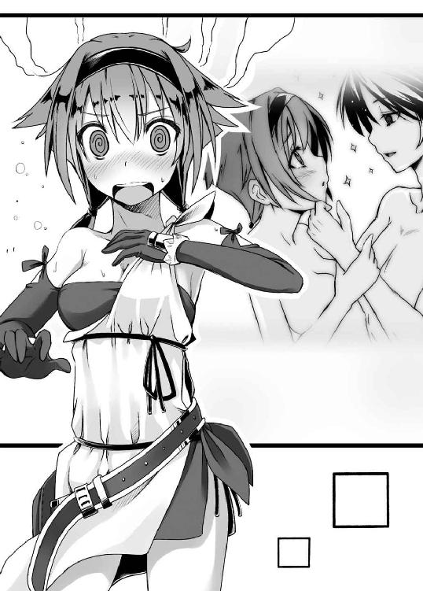
「それではまた明日の朝、お迎えに上がります。おやすみなさいませ、お兄様」
優雅に一礼して、フェリシアは部屋を後にする。
木製の扉が閉められると同時に、勇斗は数歩後ろへと下がり、バタンッとベッドに仰向けに倒れこんだ。
「ふぃー、つっかれたぁ」
横になった途端、ドッと疲労の波が身体に押し寄せてきて、勇斗は肺の中の空気全てを吐きださんばかりに長い溜息をつく。
部屋の中は薄暗く、ベッドのそばでぼうっと小さく灯るオレンジの明かりだけが部屋を照らしていた。
この世界にはまだロウソクというものがなく、木綿の紐を芯に土器で作ったランプである。これでは部屋に何があるのか判別するのでせいぜいだ。
「こんなに真夜中に仕事してる日本人のほうが多分おかしいんだろうなぁ」
言いつつ、勇斗は窓の近くで充電しておいたソーラーバッテリーを手に取り、自分のスマートフォンに接続する。
ユグドラシルの人間は、朝日が昇る少し前に起き、陽が暮れるや食事を取って早々に寝るのが普通だ。それはまさしく、人間本来の自然の営みと言ってもいいだろう。歴史的に見ても、一九世紀、電灯が発明されるまでは皆、そういう生活を送っていたのだ。
だが、公務は終わっても、勇斗の仕事はまだ終わらない。むしろここからが他の誰にも真似できない現代人たる勇斗の本領発揮だった。
「そろそろ、かな」
時間を見計らって、勇斗はスマートフォンの電源を入れると、しばらくして画面にメーカーロゴが映し出される。
ネットなどを徘徊し、時には電子書籍を購入し、この世界で使えそうな知識を収集するのが夜が更けてからの勇斗の日課となっていた。
二一世紀の知識をこの世界に持ち込むことに、勇斗も躊躇いがないわけではない。大それたことをしでかしているのではないか、こんなことが許されるのだろうか、そういう不安に常にさいなまれている。
だが、知識を使わなければ今頃、勇斗はおろか、《狼》もこの地上から姿を消していただろう。それに勇斗の頭には、この世界に来たばかりに見た、お腹を空かせて泣いている子どもたちの姿が、骸となり物言わなくなった恩人の姿が今も鮮明にこびりついている。
義を見てせざるは勇なきなり。救える知識や力があるのに何もしないほうが、よほど罪深い。そう勇斗は開き直っていた。
かつて、友人のからかいに耐え切れず、美月に冷たくしていた小学生の自分を思い出す。今はもう赤面モノの黒歴史である。あんな一生後悔するような格好悪い真似は、二度としたくなかった。
なにより、あの男のような人間に堕ちたくなかった。
「とりあえず、戦の前に読もうとしていたヤツを読むか」
ホーム画面が表示されると同時に、勇斗はその中から電子書籍ビューアー「Ｈｉｎｄｌｅ」のアイコンをタップし、ずらっと並ぶ表紙の中から『貨幣経済の歴史』と題されたものを開く。
ユグドラシルでは、物々交換が商取引の主流である。だがこれは、交換する品物が同価値なら良いが、どちらかに偏っていればまず取引は成立しない。また交換したいものがお互いぴったりと合う人間を見つけるのも難しい。あまりに効率が悪いとしか言いようがなかった。
一応、金や銀が代替え物として使われているが、それも天秤で量りながらでなんとも面倒くさい。分銅に細工する詐欺も後を絶たない。
そこで勇斗は、交換に使う共通の代替え物――紙幣を作ろうと考えたのだ。紙も作ったことだし、これで取引がスムーズに行われるようになれば商業活動も活発になり、ひいては《狼》の国力の増強にもつながるはずだ、と。
しかし、そうは問屋が卸さなかった。
「ん～、こりゃ使えそうにねえな」
読み進める内、勇斗は自分の浅はかさを思い知る。
紙幣は紙に額を書いて流通させればいいというほど単純なものではない。まず同じものを作れる印刷技術がいる。さらに同価値の貴金属を用意するか、政府に相応の信用がなければ、まず機能しない代物だったのだ。
そもそもこの本によれば、紙幣が歴史に登場したのは、実に一一世紀、中国は宋の時代だと言う。しかしそれも、紙幣の濫発により価値を激しく落とし、いわゆるインフレーションを起こして物価を崩壊させて終わりを告げたと記されている。
「社会がもっともっと成熟してないと、こりゃむしろ混乱を招くだけ、だな。いいアイディアだと思ったんだけどなぁ」
勇斗は画面から顔を上げ、途方に暮れたように天井を見上げる。
これだ！ とアイディアが閃いても、今回のように調べてみると使えないというのはよくあることだった。
「元手をかけないでやろうってのが、ちと虫が良すぎたか。まあ、でも、鋳造貨幣ならいけそうかな？ ......おっと、続きはまた今度だな」
画面左上に表示された電池マークの残量が赤色に変わるのを見て、勇斗はボタンを押してホーム画面へと戻る。
スマートフォンで最も電気を食うのが液晶表示だ。五インチ型とけっこう大きめの勇斗のスマートフォンならなおさらである。ソーラーバッテリーが供給する程度の電気では、読書は三〇～四〇分がせいぜいだった。
「さて、寝る前にあいつの声でも聞いておくとするか」
データ通信をオンにし――データ通信をオンにしているだけでバッテリーを消耗するのでオフをデフォルトにしている――幼馴染へと電話をかける。
勇斗の寝室は北東の隅である。もともとの宗主の寝室は宮殿の中央あたりだったのだが、無理を言ってこちらに移してもらった。聖塔に程近いこの部屋なら、月が半分以上満ちていればつながるから。
「もしもしっ！」
ワンコールもかからず、スピーカーから弾んだ声が響いてきた。相手も電話を心待ちにしてくれていたのだと、自然、勇斗の口元がほころぶ。
「もしもし。こんばんは。美月。俺だよ俺」
「うん、こんばんは、勇くん。お仕事お疲れ様でした」
「ああ、すげえ疲れたよ」
電池はもうほとんど残っていない。
中身のある会話なんて、まずできない。
たった数分の短い逢瀬。こんなことに貴重な電気を使うぐらいなら、少しでも電子書籍に目を通しておいたほうが、効率的ではあるのだろう。
だがこの時間こそ、勇斗にとって何よりの癒しであった。
「おやすみ、美月」
こうして、勇斗の宗主としての一日はつつがなく更けていった。
ACT 4
「それではこれより誓盃の儀を執り行わせていただきます。わたくし、この儀の盃を執らせていただきます神儀使アレクシスと申します。本日はお日柄もよく......」
祭儀場の中央で、ヒゲを生やした恰幅のよい中年の男が口上を述べ始めた。
男はなめらかな光沢を持った真っ白な、実に高級そうな服に身を包んでいた。シーケと呼ばれるはるか東方でのみ生産される非常に希少な布地で織られたものである。
勇斗の見たところ、どうも絹のようだった。さすがは代理とは言え神帝の使いである。上等なものを着ていた。
「......という次第でございます。さて、そんな善き日に、このたびご兄妹となられますお二方は、兄は八代目《狼》 宗主、ユウト殿。妹は五代目《角》宗主、リネーア殿でございます。またこの盃により、《狼》と《角》の両氏族はめでたくご親族となられます」
長々とした、しかし実際には意味のない口上も終わり、ようやく今日の本題に入ったようだった。
勇斗は朝の全校朝会の校長の長話を思い出さずにはいられなかった。格式とか伝統とか箔付けとかいろいろあるのだろうが、退屈すぎてあくびを我慢するのも一苦労である。
ちなみにこの世界には、姓という概念はない。あえて言うなら、《狼》という氏がそれに当たる。同じ氏を持つ集団、ゆえに氏族なのだ。
「御一統様に申し上げます。その必要はないかと存じますが、念のため、お神酒を改めさせていただきます」
そっと神儀使アレクシスが銀の水差しを掲げその口を手刀で切るふりをした後、ゆっくりと手元の二つの盃に次々と酒を注いでいく。
祭儀場には、神儀使の男を境に左右それぞれ二〇名近い人間が集っていた。ほとんどが《狼》の人間だが、《角》からも五人ほど列席している。神聖な儀式ゆえ誰も物音一つ立てない。静かな水音が妙に響いていた。
盃を満たした後、アレクシスはその一つを手に取り、そっと口に含む。いわゆる毒見である。国と国との盃には利害が絡む。滅多なことなどそうそう起きるものではないが、神儀使も命がけの仕事だった。
「はい、けっこうな御酒でございます。では、兄となられますユウト殿」
アレクシスは口をつけた盃を台に戻すや、ずずいっと身体ごと勇斗のほうに向き直り、呼びかけてくる。
ピーンと空気が張り詰め、場の緊張感が増したような気がした。厳粛な雰囲気が苦手な勇斗は少し息苦しさを覚え、ゴクリと唾を飲み込む。皆の視線が自分に集まっていることを強く感じた。
「はい」
勇斗は胸を張り低く抑えた野太い声で答える。《狼》の宗主として皆に恥をかかせぬよう、出来る限り威厳を保とうとしてだった。
「あなたはこの者と盃を交わし、神の名の下、ご兄妹となろうとしています。健やかな時も、病める時も、喜びの時も、悲しみの時も、富める時も、貧しき時も、互いに助け合い生きていく決意が決まりましたなら、その盃を六分ほどお飲みください。どうぞ！」
神儀使の物言いに、勇斗はわずかに眉をひそめる。
兄弟固めの誓盃では定型ともいうべき無難な口上ではあるのだが、勇斗には結婚の誓いにしか聞こえない。
まだ一六歳ということもあるし、心に決めた女の子もいる。もちろん、兄妹の誓盃だと頭ではわかっているのだが、どうにも心理的抵抗を覚えてしまう勇斗であった。
「まあ、いまさらか」
勇斗から言い出した事ではあるし、吐いたツバは飲み込めないものだ。覚悟を決め、目の前にある《妖精の銅》で作られた盃に手を伸ばす。
共に氏族を束ねる宗主同士の盃だ。あまりみすぼらしいものを用意しては《狼》の恥となる。また、《角》も自分たちを低く見ていると不満を持たれては元も子もない。《妖精の銅》は、同じ重さの黄金よりも価値があるとされる。《狼》としても、この金属で盃を作ったのは《角》への最大限の誠意であった。
「よし」
一気に盃をあおる。焼けるような強烈な刺激が口の中に広がり、飲み込むや喉と腹がカーッと熱くなる。
正直に言えば不快極まりなかった。さらに頭の中に靄がかかった感じがしてくる。大人はどうしてこんなものを飲みたがるのか、勇斗は不思議でならなかった。
目分量で六割ほどなんとか飲み干して盃を台に置き、ずいっとリネーアのほうへと押し出す。
「続きまして、リネーア殿にお伺いいたします」
「......はい」
「貴女はその盃を飲み干されると同時に、ユウト殿の妹分となられます。これからは兄のため、氏族のため、忠義を尽くさねばなりません。すでに十二分な覚悟をお持ちのことと存じますが、覚悟が定まりましたら盃を三口半で飲み干し、懐中深くにお納めください」
神儀使に促され、リネーアはじっと盃を睨みつける。
ただただ、睨み続ける。
まさかいまさら妹分にはなりたくないとか言い出すのではないかと勇斗が心配しかけたところで、リネーアは盃をガッと乱暴に手にとり、一息に飲み干した。
しきたりも何もあったものではなかった。せめてもの意趣返しなのだろう。
「ふうっ」
リネーアは空になった盃をぐいっと手持ちの布で拭き取り懐中に仕舞うと、両拳を使って腰を浮かし後ろに下がった。そして深々と頭を下げる。
「末永くよろしく面倒みてやってください......兄上」
人に物を頼んでいるとは到底思えない、苦渋に満ちた絞りだすような声だった。
ここには《角》の連中もいる。意に沿わぬ盃であることをアピールせねばならないところもあるのだろう。
なにはともあれ。
誓杯の儀はつつがなく終了した。
長年続いた《狼》と《角》との抗争にようやくピリオドが打たれたのである。同じく犬猿の関係にあった《爪》とも、すでに親戚づきあいを始めている。
この盃により、もう当分は戦もなく平和な日々を謳歌できるだろう。宗主としての役割は果たした。これで心置きなく帰る方法を探すのに注力できる。
勇斗は安堵とともに、ぼんやりとそんなことを考えていた。
「姫様っ！ よくぞ......よくぞご無事で！」
「若頭、ボクはもう姫じゃないって言ってるだろう。ああもう公式の場で恥ずかしいなぁ」
恥も外聞もなくむせび泣く初老の男に、リネーアが周りの目を気にするようにおろおろしていた。
式も終わり、ようやく《角》は実に半月ぶりに宗主を取り戻せたのである。初老の男ほどではないにしろ、他の使節団の面々も宗主との再会を喜んでいるようだ、その目には涙が滲んでいる。
「《狼》の連中に乱暴などなされませんでしたか？」
「やつらはケダモノですからな」
「今日から親戚だってのにひでえ言われようだな」
苦笑しつつ、勇斗は気さくげに声をかけ話に割って入った。
途端、《角》の面々はリネーアを守るかのように勇斗の前に立ちはだかり、ギロッと勇斗を睨みつけてくる。明らかな敵意と警戒がひしひしと伝わってきた。今日まで彼らの宗主を軟禁していたのだから当然といえば当然だが。
「おいおい、そんな怖い顔するなよ。もう一度言うが、俺たちはもう敵じゃないんだぜ？」
勇斗はなだめるようにそう言って、肩をすくめる。
内心冷や汗だらだらである。さすがに幹部にまで昇り詰めているだけあって、皆、強面であり、ヤクザ顔負けの雰囲気だった。後ろに護衛として控えているフェリシアがいなければ、即座に回れ右をしていたかもしれない。
「みんな控えろ。一応、ボクの兄上だ」
「「「......はっ！」」」
リネーアの言葉に、《角》の使者たちはいかにもしぶしぶといった体で勇斗に道を開けた。だが、警戒の気配はいささかも緩んでいない。宗主を守るのだという気迫がこれでもかと伝わってくる。
リネーアは子分たちからずいぶんと慕われているようだった。先日、部屋を訪れた時、勇斗のことを羨ましがっていたから人望がないのかもしれないと勇斗はこっそり思っていたりしたのだが、まったく逆だった。
「兄上も、子分のしつけがなってなくて失礼しました」
ペコリとリネーアが勇斗に向き直り、小さく頭を下げる。
すでに盃を交わしたからか、呼び方も改まり、言葉遣いが丁寧になっている。その辺りはさすがに宗主だけあって誓盃の重みをわかっているのだろう。
勇斗は気にしてないとパタパタと手を振る。
「宗主を守ろうとするのは当たり前だろ。いい子分たちじゃねえか」
「ええ、自分にはもったいない子分たちです。本当に、もったいなさすぎるぐらいで」
リネーアの表情に、わずかに暗い影が差した。
なんとなく、勇斗にはピンとくるものがあった。自分もまったく同じ悩みを抱えていたから。おそらく、部下の厚い忠誠に自分が見合ってないようにしか思えないのだろう。
大敗し、格下と思っていた《狼》の傘下に降るという失態まで演じているのだ。勇斗よりさらに悩みは深いに違いなかった。
「兄上、ちょっと一緒に風にでも当たりませんか？」
「ん？ 別にいいけど」
リネーアの突然の誘いに、勇斗は即答で頷く。
イアールンヴィズに来てからというもの、彼女はずっと室内に監禁されていた。外の空気を吸いたいのだろうと考えてのことだったが、
「ああ、お前たちはここにいてくれ」
リネーアはついてこようとする《角》の使者たちを手で制する。
ようやく取り戻したばかりの宗主であり、ここは他国である。当然、《角》の面々は血相を変えた。
「姫様!? お、お一人は危のうございます」
「大丈夫だよ。ボクに危害を加えるつもりならとっくにしていたさ」
「し、しかしっ！」
「兄妹水入らずの話をしたいんだ。心配するな。すぐに戻る」
食い下がる《角》の若頭にきっぱりと言い捨て、リネーアは歩き出す。
慌てて勇斗も後を追う。ちらりと振り返ると、ギリギリと歯ぎしりとともに、殺意のこもった目を向けられていた。
「おい、いいのかよ。ようやく会えた子分たちだろ。積もる話とかあるんじゃないのか？」
「それは帰りの道中にいくらでも出来ますから」
「なるほど、今、お兄様と話しておかねばならぬことがある、ということですね」
「って、フェリシア！ なんでお前までついてきてる!?」
「わたくしはお兄様の護衛ですから」
「いや、そこは空気読もうぜ!?」
護衛の職務に忠実なのは非常にありがたくもあるが、忠実すぎるのも困りものだった。リネーアが子分たちを置いてきているのに、自分だけ連れて行くというのも、臆病者っぽくてなんとも格好悪い。
「兄上の妹分なら仕方ありませんね。兄妹水入らずの話ですから」
「いいのかよ、それで」
「ええ、構いません」
あっさり頷いて、リネーアは出入り口の扉をくぐる。
祭儀場のある聖塔の天頂部からは、遠く地平線までが一望できた。眼下に広がる雄大な景色に、リネーアは感嘆の吐息を漏らす。
高い周壁に囲まれた街の中には木造の家々が連なる。城門から宮殿へと続く大通りには所狭しと市が立ち並び、遠目にも活気に満ち満ちているのが伝わってきた。
リネーアはしばらくその光景に魅入っていたが、やがて勇斗のほうを振り返る。その顔には悲壮な覚悟が浮かんでいた。
「すいません、お待たせしてしまって」
「いいさ。で、なんだよ。話って」
リネーアの表情から、只事ではないことが伝わってきた。口にするのに相当の覚悟を必要とするほどに。
勇斗の喉がゴクリと鳴るのとほぼ同時に、ガバッとリネーアが頭を下げる。それはもう、膝におでこがぶつかるぐらいの勢いで。
「《角》の民を《狼》の民同様に扱いくださいますよう、平に、平にお願い致します」
リネーアの言っているのは、先の戦で《狼》が《角》から奪い取った領土に住んでいる民のことだとすぐに察しはついた。
戦争の勝者が捕虜や征服した民を奴隷と使役することは、世界中で普遍的に見られた傾向だった。
負けた国の民は生まれ育った土地を、人としての尊厳を、権利を奪われ、過酷な労働に酷使される。リネーアはそれを憂いているのだ。
「無理を言っているのはわかります。《狼》にとって益のないことだということも。ボクの身体で良ければお好きになさってくださってかまいません！ ですからなにとぞ、なにとぞご厚情を......っ！」
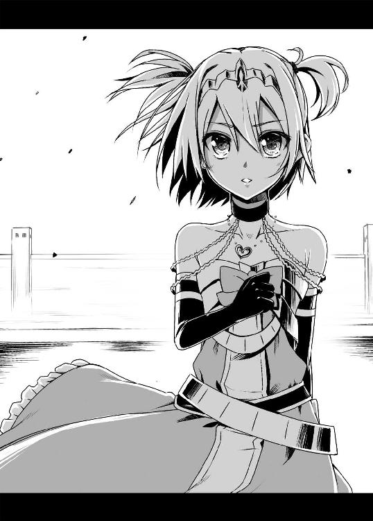
まだ年若い少女だ。好きでもない男に蹂躙されることに恐怖を覚えないはずがない。事実、その身体は小刻みに震えている。それでもかつての自分の民を守るために、我が身を差し出そうとしていた。
「あ～、え～っと」
二一世紀の常識を持つ勇斗には、奴隷などそもそもからして到底受け入れがたい価値観である。最初から同等に扱うつもりだっただけに、ここまで大仰に頼み込まれると、正直面食らってしまっていた。
とは言え、勇斗はリネーアに妹分になることを迫る際、住民虐殺の脅しをかけている。彼女が不安になるのも道理ではあった。
ははっと苦笑をこぼしつつ、勇斗はクシャッとリネーアの頭を撫で回す。
「兄......上？」
勇斗の行為の意味がわからないらしく、その声にはどこかきょとんとした響きがあった。
今なら、勇斗も《角》の使者たちがリネーアを慕う理由が手に取るようにわかる。これほどまでに民を思い、民に尽くそうとする君主はそうはいまい。
《狼》に攻め入ってきたことにしても、最近、とみに勢いの増している《狼》に軍事的脅威を感じ、《角》を護るためには今しかないという思いもあったのだろう。
「妹分の可愛いワガママぐらい、ただで訊いてやるよ」
「あ、ありがとうございまんぐっ!?」
喜び顔を上げようとしたリネーアの頭を、勇斗はぐっと力を込めて押さえつける。今、顔を見られるのはなんとも気恥ずかしかった。
角ばった石を積み上げて作ったピラミッド状の祭壇には、神を象ったと思しき像が所狭しと並べられていた。頂上部には勇斗をこの世界へと誘った鏡と、その裏でごうごうと松明が燃えている。
先ほどまでこの神前で行われていた盃事は神聖不可侵なものであり、実に静粛な空気の中で行われたものだが、今や祭壇の傍では、男たちはあぐらをかいて石で作った笛を吹き鳴らし、女たちはその音楽に合わせて狂ったように踊っている。
その中には勇斗の副官であるフェリシアの姿もあった。多芸を誇る彼女は、舞においても《狼》有数の技量を誇る踊り手なのである。
《狼》と《角》が晴れて親族となったことを祝う宴だった。踊り子たちに喝采を送る者もいれば、思い思いに近くにいるものと酒を酌み交わし笑いあう者たちもいる。
「みんな楽しそうだな」
儀式も終わり肩の荷も下りた勇斗は、料理を楽しみつつ宴の雰囲気を楽しんでいた。
自分から積極的に盛り上げていこうというのは柄ではないが、こういう賑やかな催しは嫌いではないのだ。
ぴくっ。フェリシアの代わりに勇斗の後ろに控えていたジークルーネがわずかに腰を浮かし、剣呑な気配を放ち始める。
「どうも、ユウトの兄貴、二ヶ月ぶりですな」
すいっと勇斗の前に置かれていた水差しを手に取る者がいた。
年の頃は三十代後半といったところか、ぷっくりと膨らんだお腹と、人の良さそうなにこやかな笑顔が印象的な男である。
「よう、兄弟。元気だったか？」
「お気遣いありがとうございます。そりゃあもう元気ですよ。しかし、まさかこうもあっさりと《角》を屈服させてしまうとは。いやいや、兄貴はとても私などが敵う相手ではなかった。当時の自分の愚かさをただただ恥じ入るばかりです」
「兄弟からそんな世辞を言われるとどうにも怖いな。今度はいったい何を企んでんだよ？」
「企むなどとんでもない。本心からですよ。手厳しいですなぁ。あ、どうぞ」
男は恐縮したように身体を丸めつつ、そっと勇斗のほうへと水差しを差し出してくる。
勇斗も杯を手に取って酌を受ける。そして、その杯をいったんジークルーネの鼻先へとやって彼女が頷くのを確認してから、杯を傾ける。
この男の名はボトヴィッド、勇斗の弟分だ。
おどおどとしていて卑屈そうな、いかにもうだつのあがらない感じの男だが、これでも《狼》が二ヶ月前まで激しく争っていた《爪》の宗主である。
現代知識という優位を持つ勇斗と違い、正真正銘、実力だけで宗主の座まで昇り詰め、一時は《狼》を滅亡寸前まで追い込んだほどの男だった。パッと見の印象だけで油断していい相手では決してない。
「企むというほどではございませんが、一つお訊きしたいことがございましてね」
「へえ？」
相槌を打ちつつ、もう一口すする。
この男と相対すると、一瞬の油断もできないという緊張感からどうにも喉が乾いて仕方がない。
そう、ちゃんと心に予防線を張っていたにもかかわらず、
「兄貴はご自身のご結婚をどのように考えていらっしゃるのかな、と」
「ぶふぉっ!?」
あまりに予想外な質問に、勇斗は思わず口に含んでいた水を盛大に吹き出した。
当然、それは目の前にいるボドヴィッドの顔を直撃する。
「げほげほっ、わ、わりぃ」
「いえいえ。お気になさらずに。喉でもつまりましたかな？」
《爪》の宗主はニコニコと微笑んだまま自らの顔を拭いつつ、しれっととぼけたことを言う。
この一幕だけなら、実に寛大で大らかな人物のようにも思えるが、勇斗にはその笑顔はどこかうそ臭く、能面めいて見えた。ボドヴィッドは勇斗の前に現れてから一瞬たりとて、それこそ吹きかけられた瞬間にすら笑みを崩していないのだから。
「そのご様子では特にお決めになっておられないようですなぁ」
「け、結婚なんて俺にはまだ早えよ」
「早いということは決してないでしょう。兄貴はすでに妻を娶っていてもなんらおかしくないお年じゃありませぬか」
「あ～......」
返答に窮してしまう勇斗。
つい現代日本の感覚で答えてしまったが、勇斗の知る暦ではまだ一七にすぎないフェリシアですら、行き遅れるのではないかと心配されるのが、この世界の常識なのだ。
「ふ～む、それでしたら、うちの娘なんかどうです？」
「それが本題かよ。じゅうぶん企んでんじゃねえか」
はっと軽く鼻を鳴らして、勇斗は頬杖を突く。まったく年をとると話がまどろっこしくて困る。
いわゆる政略結婚というやつだ。勇斗には少々受け入れがたいものではあるが、一方でごくごく近代まで、世の東西を問わず、それが当たり前に行われていたとも、戦国時代好きの勇斗はよく知っていた。
「いやいや、《狼》とはこれからも末永く仲良くお付き合いしていきたいという心からですよ。どうです？ 今ならもう一人付けますよ？」
「おいおい......」
どこのテレビショッピングだよ、と勇斗は内心呆れてしまう。
しかし、それだけ勇斗を買っているということでもある。娘を二人差し出してでも良好な関係を結んでおきたい相手だ、と。
勇斗の自己評価は低いが、就任からわずか一年足らずで衰亡の危機にあった《狼》を立て直し、《爪》・《角》の二氏族を打ち破っているのは紛れも無い事実である。客観的に見れば、ボドヴィッドの評価はしごく妥当と言えた。
また、《狼》が《角》との関係を深めることに、国力で最も劣る《爪》としては危機感もあるのだろう。ボドヴィッドはさらにずずいっと前のめりになり、脂ぎった顔を勇斗に寄せてくる。
「ワシが言うのもなんですが、けっこう美人ですぞ。ああ、母親似ですから。ワシにはぜんぜん似ておりませんのでご安心を」
「いくらなんでもせっかちすぎだろ。政治もからむ。こんな酒の席でおいそれと決められる話じゃない」
勇斗はボドヴィッドがこれ以上近づいてこないよう手で制しつつ言う。酒気が漂う中年男のアップは正直、勘弁して欲しかった。
言葉こそ濁したものの、勇斗としては断る以外の選択肢はなかった。彼にはこの世界に骨を埋めるつもりはない。そんな自分がこの世界で結婚するなど、どうにもピンとこなかったのだ。
「おっと失礼。う～ん、良い縁組になると思うんですがね～」
浮かしていた腰を落として座り直すも、ボドヴィッドはまだ明らかに諦めきれていない様子だった。
不意に、何かを思いついたようにボドヴィッドの瞳に鋭い光が疾る。彼は一つ頷き、
「......ふむ、まあ、兄貴の言うことも一理ありますな。あんまり宴の主役を独占するのも皆の恨みを買いそうですし、今日のところはこれぐらいで。ではでは」
パンッと膝を叩くやボドヴィッドは立ち上がり、それまでの乗り気が嘘のようにあっさりと引き上げていく。
去っていく背中に、どうにも嫌な予感を覚える勇斗であった。
その予感が的中するのはもう少し先のことである。
「というわけでどうですかな、うちの孫娘は。儂が言うのもなんですが、これがなかなかの器量でして、きっとユウト殿もお気に召してもらえるはずです」
目の前でにこやかに話す長老頭ブルーノに、勇斗は「またか」と既視感と徒労感を覚えずにはいられなかった。
ボドヴィッドの後も、勇斗に酌をしにくる連中は後を絶たなかった。そして、その中にはボドヴィッド同様、縁談話をもちかけてくる者も少なくなかったのである。
これで六件目だ。まったく権勢に群がる連中というのはつくづく考えることが一緒らしい。いい加減、ゲームの無限ループにハマったような気がしてきた勇斗である。
「当分、誰かを娶るつもりはないと言ってるでしょう」
「いやしかしですな、ユウト殿も年頃。あ、あ～、も、もちろん、正妻などと分不相応なことは望みません。妾にでもして可愛がってくだされば......」
なおも必死に食い下がってくるブルーノに、勇斗は舌打ちを抑えるのに相当の精神力を費やさねばならなかった。
この世界では当たり前のことだとわかってはいる。それでも、孫はお前の政争の道具じゃない、と義憤が勇斗の心に燃え盛る。
ブルーノは勇斗が宗主に就任する際、その下につくことを拒んだ者たちの一人だ。それが勇斗の《狼》内での地盤が固まってくるや、ころっと豹変して今みたいに擦り寄ってくるようになった。さらには孫娘まで差し出すという。
これではリネーアたち《角》の連中に、《犬》と蔑まれても仕方ないと思う勇斗だった。
「さてと」
「あっ、ユ、ユウト殿どうされました？」
唐突に立ち上がった勇斗に、ブルーノが慌てたように訊いてくる。何か不興を買ったのではとその顔が不安に強張っている。
「トイレ」
正解だよと思いつつ、勇斗はしれっとした顔で嘘をつき、ブルーノを残してスタスタと歩き出した。
馬鹿馬鹿しすぎて付き合っていられなかった。これ以上、あの場にいれば一分以内に暴言を吐いていただろう。
「あ、儂も......」
「（ギロッ）」
勇斗を追いかけようと腰を浮かしたブルーノだったが、気を利かせたジークルーネの一睨みにより、スゴスゴと自分の席へと戻っていく。
物腰の柔らかなフェリシアあたりだともう少し粘っていたのだろうが、さすがの長老頭も味方からすら畏怖される『最も強き銀狼』の圧力にはさすがに抗しえなかったらしい。
まったく頼りになる――
「うちにも欲しいですわ、この番犬。見合いを断るのが楽そうです」
ほうっとフェリシアがため息をついている。
冗談めかしてはいたが、その声はずいぶんと切実そうである。よほどブルーノの見合い攻勢に辟易しているのがうかがえ、思わず勇斗も苦笑がこぼれる。
「失礼、ユウト殿。本日はどうもおめでとうございます」
「おお、アレクシス様、本日はご足労頂きまして、まことにありがとうございました」
先程、誓盃の儀を執り行った神儀使に声をかけられ、勇斗は慌ててペコリと頭を垂れる。
フェリシアやジークルーネに至っては、片膝をついてかしこまった姿勢を取る。
神帝の代役であり帝国の幹部でもある神儀使は、建前上は神帝に仕える地方領主にすぎない勇斗よりはるかに格上の立場にある。
そしてその、建前の権威こそが、宗主が領地を治める大義名分でもあった。神帝の権威の否定は、すなわち自らの正当性の否定につながる。ゆえに、《狼》など比べ物にならないほどの大氏族の宗主といえども、神儀使は敬意を払わねばならない相手であった。
「いやいや、長年争っていた両氏族がご親族となり、これでこのビフレスト一帯も平和になりましょう。良縁を結ばせて頂き、私も嬉しく思います」
「いえいえ、こちらこそ素晴らしい儀式を執り行って頂き、心より感謝しております」
このあたりの社交辞令の応酬は、すでに勇斗はヨルゲンやフェリシアに叩きこまれている。実に空疎なやりとりだと思わないでもないが、これもまた宗主の仕事である。
「そういえば不躾なのですが、ユウト殿、もしくはユウト殿の御実父殿、御実母殿はどちらの出で？」
アレクシスが勇斗の顔を、というより頭のほうに視線を向けながら訊いてくる。
ユグドラシルでは金髪や茶髪、赤毛などが多い。黒っぽい者もいるが、どこかやはり茶色味があって、勇斗ほど真っ黒というのはかなり珍しかった。アレクシスが気になるのも無理はない。
とは言え、本人の言うとおり、まだそれほど話してもいないうちから聞くのは礼を失するのは確かだ。
「東のほうです」
少々不審さを覚えつつも、無難に返す。
はるか未来から来ました、とはさすがに言えない。いきなりそんなことを言い出しても信じてもらえる可能性は低いし、《狼》の宗主は頭がおかしいと思われても外交的に問題である。
「はて、私の知る限り東にそのような民族おりましたかな？」
アレクシスが渋面になり小首をかしげる。
なるほど、彼は神聖アースガルズ帝国――かつてユグドラシル全土を統一した国家の重鎮だ。各地の情報にも精通しているのだろう。
彼が知るかぎり東に黒髪の人種がいないという情報は極めて重要である。勇斗はしっかり心のメモに書き記しつつ、これはチャンスだ、と心を躍らせた。
「そ、そのようなことより、違う世界へと行く力を持った、いえ、送る力でもいいんですが、そういうエインヘリアルに心当たりはありませんか？」
かつて誇った領土の広さだけでなく、歴史の古さにおいても、神聖アースガルズ帝国はユグドラシル随一である。
彼ならば自分を元の世界に戻す手がかりに心当たりがあるのではないかと期待しての問いだったが、アレクシスはますますその顔を渋くし、困惑の色を濃くする。
「んん？ 違う世界、とは？ 神々のおわす世界のことでございますか？」
「え、ええ、まあ、そんなところで」
「神に直接お目通りを願おうとは、さすがは飛ぶ鳥を落とす勢いのユウト殿らしい豪胆さではございますが、少々不遜にして無謀と言うしかございませぬな。自然の脅威に我ら人間が為す術を持たぬのと同様、神々にとって我ら人間は無力でか弱い存在にすぎません。お怒りを買えば貴方だけでなく、《狼》の民にまで不幸が降りかかりましょう」
厳しくたしなめられ、勇斗はたじろぐ。
この辺りの信心深さも、迷信とはどんどん無縁になっている二一世紀の日本人である勇斗にはギャップを感じる部分だ。
ユグドラシルに飛ばされたことや、エインヘリアルの存在もあって、そういう超越的存在がいてもおかしくはないと最近は思ってもいるのだが、一方でどうしてもそこまで畏怖しすがる気持ちにはなれないのだ。
とは言え、このままでは肝心の聞きたい情報が得られない。なんとか取り繕うしかない。
「いえ、神の世界というのは言葉のあやでして。その、我らの住む世界の他にも、人々が住む世界があるのではないか、神々は我らの地以外にも作っておられるのではないか、と」
「なるほど。そういうことですか」
得心がいったように相槌を打つアレクシス。さらなる領土を求める野心的発言と理解したようだ。
「しかし、すみません。お力にはなれそうにありませぬな。逆ならば、心当たりがあるのですが......」
「......逆？ つまり、行くのではなく、こちらに来るということですか!?」
世界移動に関係しそうな情報なら、どんな些細なものでも欲しいところだ。自分がここに来た理由が解明できれば、帰る方法も見出せるかもしれない。
藁にもすがる想いで問い質す勇斗であったが、アレクシスは苦虫を噛み潰したような顔になる。しまった、と表情が語っていた。
「......少々口がすべりました。お忘れくださいませ。これは我が帝国の極秘事項ゆえ、教えられぬのです。申し訳ありません」
「そんな!? なんとか教えていただけませんか!? 決して他言はしませんから！」
「ご勘弁くださいませ。私の一存ではとても......」
「そこをなんとか！」
ここまで来てお預けなど到底我慢できることではない。その後も必死に何度も勇斗は食い下がるが、アレクシスは首を左右に振り続けた。
手がかりがすぐ目の前にあるのに、それを手に入れることができない。そのもどかしさに勇斗はただただ唇を噛み締めるしかなかった。
宴が終わるや、勇斗は早々に寝室へと引き上げた。
自分より一回りも二回りも年上の相手ばかりを相手にし続けたのだ。しかも宗主として威厳を失わないようにも取り繕わねばならない。精神的な疲労が半端なかった。
ベッドにばたんと倒れこむなり、勇斗は癒しを求めて幼馴染の少女に電話をかけた。
『このハーレム親父！』
その第一声がこれだった。
勇斗としてはただただ天を仰ぐしかない。
「あ～美月さんや、のっけからいきなりなんですかい？」
『えー、だって今日、その《角》の宗主っていう女の子と盃交わしたんでしょ？』
「ん、ああ。そうだけど......」
こっちの世界の生臭い話は美月にはしないようにしている勇斗だったが、今日の誓盃式のことは伝えていた。
これで当分、争い事はなくなる、と彼女を安心させてやりたかったからだ。
その結果が――
『うん、やっぱりこのハーレム親父！』
――これである。
勇斗としては世の無常を感じずにはいられなかった。
『大事なことなので二度言ってみましたー』
ケラケラと笑い声がスピーカーから漏れ聞こえてくる。
美月が冗談で言っているのはわかっていたのだが、それでも、最初の第一声にはサーッと血の気が引くほど心底ドキッとさせられたのだ。
今日は幾度となく縁談を持ちかけられただけに、やましいことは誓ってしていなくとも、心臓に悪いことこの上なかった。
『あれ？ でもそういえば子分じゃなくて妹分にするんだったっけ？ それじゃあ親父はおかしいか。え～っとじゃあ......このハーレム兄貴？』
「まだキスすらしたことないのにひでえ言われようだ」
『へ～、ないんだぁ。ふ～ん。まだないんだ～。そっかそっか。ないんだ～』
ずいぶんと楽しそうに弾んだ声で何度も同じ言葉を繰り返す美月。
長い付き合いだ。本人に悪気がないのは勇斗もわかっている。わかってはいるが、ピシッとこめかみに青筋が疾った。
「そういうてめえはあんのかよ」
言葉がつっけんどんになっていた。
勇斗ぐらいの年齢では、やはり女性経験があるというのは一種のステータスだ。何度も何度も「ない」ことを連呼され、さすがにカチンときたのである。
だが、美月の次の言葉は勇斗を混乱の極みへと叩き落とすものだった。
『ん～、あるよ』
「な、なにぃっ!?」
『うふふ～、気になる～？』
「べ、べべべ、べっつに～」
勇斗はへらず口を叩くのが精一杯だった。それも成功したとは言い難い。彼に心酔する《狼》の子分たちが見れば一目で夢も覚めるようなうろたえぶりだった。
（誰だ？ 誰だ!? 誰だ!?）
勇斗と美月は幼馴染ではあるが、付き合っていたわけではない。この二年の間に、誰か好きな人ができてもおかしいことではなかった。彼女ももう中学三年生であり、そういう事にも興味を覚える年頃には違いないのだ。
先程までの怒りなど一瞬で消し飛び、今や勇斗の頭の中はただただ美月のキスの相手でいっぱいだった。自分の知っている人間か？ あるいは、この二年の間に知り合った男だろうか。それとも......？
「.....................だ、誰だよ？」
前言を翻すのは癪だったが堪えきれず、結局、訊いてしまう勇斗。
『ふ～ん、気になるんだぁ』
「ぐっ」
美月の癖に生意気なっ！ と喉元まで出かかった言葉をなんとか飲み込む。
年下の美月に完全に手玉にとられている。なんとも屈辱だった。だがそれを押してでも、美月のキスの相手が気になった。
『ふふっ、勇くんだよ』
「......は？」
『ほら、幼稚園の時、ほっぺたにキスしたでしょ？ 覚えてない？』
「え、え～っと......」
脳をフル回転させて記憶の底をほじくり返す。確かにおぼろげにそういうことがあったような......
がっくりと床に両膝をつき、勇斗は大きく溜息をつく。
「なんだよ～、驚かすなよ～」
『ふふっ、ちっとはあたしの心労を思い知ったか。全く次から次へと女の子囲っちゃって。しょうがないのはわかってるけど、さ』
「あん、なんだって？」
『なんでもなーい』
明らかに何かありそうな物言いなのだが、勇斗はあえて突っ込まないことにした。
もうそんな気力はどこにも残ってはいなかった。
「あ～もう、心底疲れて帰ってきたってのに、この仕打ちだよ。やってらんねぇ！」
『あはは、ごめんねー』
「おまえ、全然反省してないだろ」
『うん』
「てめえいつか絶対シメる！」
『言ったね？ 絶対シメに来てよ？ なるべく早く......ね』
「えっ!? ......あっ！」
一瞬、言葉の意味がわからなかった。わかるに連れて、心臓の鼓動が高鳴っていく。
まったくの不意打ちだっただけに、グッときた。
美月のくせに生意気な！ と思わず口元に笑みが浮かぶ。
「............ああ。必ず、な」
とりあえずアレクシス――というより帝国には何らかの手がかりがあることはわかった。貢物などであちらの信頼を得れば、教えてくれる可能性もあるはずだ。
いや、なんとしてでも教えてもらわねばならない。
『きっとだよ？ あたしいつまでも待っ......』
「お休み中のところ失礼いたします、お兄様！」
切羽詰まったフェリシアの声とともにバンッと無粋にドアを開く音が響き渡る。
なんだよいいところだったのに、と勇斗は肩を落とす。だが、フェリシアの様子からしてただ事でないことは明らかだった。
「美月、すまない。なんか急用ができたようだ」
『え!? な、何があったの!?』
「さあ、な。ま、戦いは終わったばかりだ。そう危ないことでもないだろ。安心して寝てな。じゃおやすみ」
『ちょっ、おやすみって勇くんっ!? 勇......』
ぷつっと問答無用で通話を切り、スマートフォン自体の電源も落とす。
どうにも嫌な予感がした。生臭い話を美月には聞かせたくなかった。
なにより、彼女がいては思考が切り替えられない。
「何事だ、フェリシア！」
勇斗の顔は、すでに先程までの年相応な少年のあどけなさはどこにもなく、きりっと引き締まっていた。
フェリシアは申し訳なさそうな目で勇斗のスマートフォンを見つめていたが、勇斗の声にはっとして用件を告げる。
「た、たった今、国境ホルン砦より伝書鳩が届きました。その......《角》に《蹄》が攻め入ってきた、と」
「《蹄》だとぉ!?」
思わず勇斗は目を剥く。
この世界のことにあまり詳しくはない勇斗ですら、その名は聞き知っていた。
ユグドラシルには大小一〇〇以上の氏族があると聞いているが、《蹄》はその中でも十指に数えられる大氏族だった。
「皆、こんな夜中によく集まってくれた」
集まった面々の顔を見渡して、勇斗はまず労をねぎらった。
謁見の間には、若頭であるヨルゲンを筆頭に、《狼》の並み居る諸将が集結していた。
皆、一兵卒から幹部にまで昇り詰めただけあり、精悍な顔つきをしている......というわけでもなく、あくびをしている者やニヤニヤ軽薄そうな笑みを浮かべた者など、一癖二癖ありそうな者たちも混ざっていた。もちろん、ジークルーネやフェリシア、イングリットといったまだ年若いエインヘリアルの少女たちの姿もある。
そしてまた、当事者であるリネーアを含む《角》からの使節団の面々も揃っていた。
「危急の要件ゆえ早速本題に入る。今より四日前、西の大氏族《蹄》が、親族国《角》に侵攻を開始し、その国境沿いの砦を落としたそうだ。《蹄》の兵数はおよそ一万、うちチャリオットは五〇〇台ほどとのことだ」
「い、いいい、一万!?」
「チ、チャリオットが五〇〇台ですとっ!?」
勇斗の言葉に、謁見の間に集った諸将の間から悲鳴にも似た驚きの声が上がった。
一万と言うと、二一世紀の人間には少なく感じてしまうかもしれないが、農業技術がまだ未熟なユグドラシルが養える人口は決して多くはない。
実際、古代史最大規模と言われるカデシュの戦いですら、エジプト軍の総数は一六〇〇〇程度である。
一万と言う兵数が、辺境の弱小氏族である《狼》の人間に与えた衝撃は、計り知れない。そもそも《狼》が動員できる兵力はたかだか二〇〇〇にも満たないのだ。
戦は基本的に数でするものである。寡兵で大軍を打ち破るというのは一見、華々しいが、それが限りなく不可能だからこそ燦然と歴史の中で輝くのだ。
その差は歴然としていた。
「つくづくこの世界の宗主たちは抜け目ないな。機を逃さない」
「と、申しますと？」
長老頭ブルーノが首をかしげる。
ご意見役、顧問ならそれぐらいわかれよ、と内心で舌打つ勇斗だが、表情には出さずに続ける。
「《角》は《狼》との戦いに大敗したばかりで消耗している。宗主であるリネーアは我ら《狼》の捕虜として国内には不在。そして、今は誓盃式のため若頭まで留守にしている。侵略するのにこれ以上の好機はない」
「ふ～む、確かに狙いすましたとしか言いようのないタイミングですな」
若頭のヨルゲンが重々しく頷く。
《角》の使節団の面々も、眉にシワを寄せ厳しい顔つきをしている。
リネーアに至っては、
「ボクのせいだ......ボクが負けたから......」
茫然自失の体でぶつぶつと自分を責め続けていた。その顔は蒼白で、勇斗には痛ましすぎて見ていられないほどだ。
だが、これは戦争だ。正確に状況を分析せねば国の命運にかかわる。可愛い妹分とは言えその心境を慮 ってばかりはいられなかった。
そう、個人的感情を抜きにした、あくまで《狼》の宗主としての言葉を続ける。
「事態は緊急を要する。俺たち《狼》はこれより直ちに兄妹国である《角》へと救援に向かわねばならない」
ざわっと謁見の間に集った諸将たちの間に最大級のどよめきが疾った。
理屈はわかる。兄妹分の盃を交わしたからにはお互い助けあわねばならない。それがここユグドラシルにおける絶対の掟なのだから。
だが、五倍の敵に立ち向かうなど狂気の沙汰だ。勝ち目などあるはずがなく、まさに死ににいくようなものである。皆がうろたえるのも無理はなかった。
「し、しかしユウト殿、攻められたのはあくまで《角》であって、我ら《狼》ではありませぬ。余計なちょっかいさえかけなければ、我らにまで害は及ばぬのではありませぬか？」
チラリと一瞬だけ《角》の使節団に視線を向け、どこか後ろめたそうにブルーノが進言してくる。
普段、勇斗に誓盃のなんたるかを説いていた彼であり、自分が道義に著しく反することを言っている自覚はあるのだろう。
だが、いくらなんでも敵が強大すぎた。誓盃とは元々、組織を円滑に統治するために生み出されたものだ。盃の誓いを守って、《狼》が滅びるようなことになれば本末転倒もいいところである。この状況で建前など気にしてはいられない。
「ブルーノ、貴様ぁっ！」
とは言え、激昂したのが《角》の面々である。中でも《角》の若頭ラスムスは掴みかからんばかりの勢いだった。
目の前で自分の国を見捨てると言われれば、当然の反応であった。
「何を怒る？ 別に《蹄》と一緒になっておぬしら《角》に攻め入ると言ったわけではあるまい。少なくとも、後方の心配をせずに戦えるのだ。おぬしらが我らに長年してきたことを思えば、感謝こそされても、憤られる謂れはない」
ふんっとブルーノは鼻を鳴らし、そっぽを向く。
その言葉に堰を切ったように、《狼》の諸将の間から出兵に反対する声が上がった。
「おおっ、そうじゃそうじゃ」
「《角》には悪いが、誓盃もまだ交わしたばかり。友好を育んだわけでもない」
「うむうむ、さすがに《蹄》と刃を交えるほどの義理はない」
お互い視線を交わし合い、うんうんと頷き合う。ブルーノの言は、この場にいる諸将の何人かの心を代弁したものだったのだろう。
無謀と勇気は明らかに違うものだ。彼らにも守るべき家族があり、生活がある。昨日まで争っていた相手のためにそれらを危険に晒すなどあまりに割に合わなすぎた。
「今の《角》には《蹄》に対抗する力など残ってなど......《狼》の助力が得られなければ我が民は......」
場を包む厭戦の空気に、リネーアは血の気の引いた青ざめた顔で呟く。
国境を接する隣国である。彼女は宗主として《蹄》の内情をそれなりに周知している。
《蹄》は他国から連れてきた民を奴隷とし、過酷な労働を強いることでその勢力を急速に伸ばしてきた氏族だ。
人格さえ認めず所有者の意のままに労働を強制できる奴隷は、この時代では非常に重要な労働力である。攻め滅ぼした国の人間など、同じ人間ですらなく利用するべき道具でしかないというのがこの時代の共通認識だった。
「我らが護るべきは《狼》の民であり《角》の民ではないからな」
「うむ、《角》の民は貴様ら《角》が守るのが道理であろう」
「我ら《狼》もこれまで貴公らに攻められそんな余力はない」
衆を頼んで気が大きくでもなったのか、弱者に対する強者の傲慢か、ブルーノを筆頭に厭戦派は思い思いに自分勝手なことを言い始める。前述のとおり、他国の人間など同じ人間ですらない、という価値観が根底にあるせいもあった。
「そ、そんな......!?」
リネーアの瞳が虚ろな絶望に呑まれかけたその時だった。
ガンッ！ 何かを殴ったような音とともに、
「ふぬけたこと抜かしてんじゃねえぞ、てめえらぁっ!!」
勇斗の雷のような大喝が、部屋中に響き渡った。
普段の温厚でどこか柔弱な少年の姿は、そこにはなかった。
よほど強く壁を殴ったのだろう、その右拳からはポタポタと血が滴り落ちている。だが、それに斟酌した様子は微塵もなく、憤怒に満ちた鋭い眼光がその場にいる全員を射抜いていた。
今、勇斗の脳裏によぎるのは、病院からの母危篤の報を伝えた時の父の言葉だった。
『しばらく鍛錬で手が離せない。後で行く』
普段から家族より仕事を優先しがちな父ではあったが、こんな時ですら父は自分の満足を優先し、結果、母の最期を看取ることはできなかった。母はずっと、残していく父と自分のことを心配していたというのに、だ。
自分は絶対に家族を見捨てたりはしない。するものか。あんな最低の男にはならない。その想いが勇斗を突き動かしていた。
「おい、盃の誓いは絶対じゃなかったのか!?」
兄妹の盃は、勇斗がリネーアに強制的に呑ませたものである。いわばそう、誰に押し付けられたのでもなく、彼女を妹にすると自分で自分に誓ったことだ。
ならばたとえ義理でも、勇斗にとってリネーアは何がなんでも守らねばならない家族だった。
「お前ら、誓盃の儀で俺とリネーアの盃をめでたいめでたいって言ってたよな？ つまり、《角》が俺たちの家族になることを認め受け入れたはずだよなぁ!?」
勇斗の言葉に、長老や幹部たちが揃ってうつむいている。彼らにも言い分はあっただろう。勇斗の言っていることは、今この状況にあっては建前にすぎる。
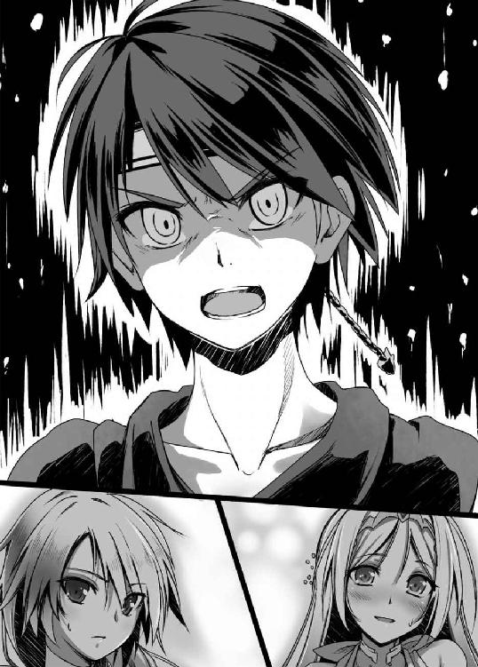
だが、彼らは口を開くことさえ出来なかった。
ここに集った者達は、幹部や長老の位を与えられるだけあって、《狼》でも歴戦の猛者たちばかりだ。いくつもの修羅場を乗り越えて、この席に座っているはずだ。
その彼らが、たかだか一六の少年の気迫に呑まれていた。
「ふ......ふふふ......」
止まらぬ身体の震えをその両の腕で抱きさすりながら、フェリシアはそれでも笑みをこぼさずにはいられなかった。
実際の殴り合いならば、勇斗はこの場の誰よりも弱い。そんなことは誰もが知っていることだ。だというのに、みな彼に気圧されていた。《狼》最強の戦士であるジークルーネですら、だ。
だが今、フェリシアを震わせるのは、この背筋も凍るような恐怖ではなく、それをはるかに上回る歓喜だった。
これだ。これこそが自分が至上の主と惚れ込み尽くしてきた男のもう一つの顔なのだ。
確かに勇斗の持っている知識は、《狼》にとってなくてはならぬものだ。だが、たかがそれだけの男に、自分をはじめジークルーネやヨルゲンといった《狼》でも指折りの勇者たちがこれほど心酔したりするものか！
人間は土壇場でこそ、その本性をさらけ出す。普段綺麗事を言ってる輩ほど、いざという時には逃げ出したりするものだ。長老頭ブルーノなどまさにその典型であろう。
無論、その逆も然りだ。
普段どこか頼りない少年は今、その獅子の本性を剥き出しにしていた。
周防勇斗というのは、彼の国の言葉で「周りを護って勇ましく戦う」という意味だと聞いたことがある。まさにそのとおりだ。
彼はいつも、誰かを護る時にこそ本領を発揮する。それが他国の女のために、というのは少々癪ではあったが。
「《角》は助ける。これは決定事項だ」
短く言い捨てた勇斗の言葉に、異論は挙がらなかった。ブルーノも青ざめた顔でただただコクコクと頷いている。
朗報にも気づかず視界の端で勇斗の豹変にカチカチと歯を鳴らすリネーアの姿を捉えつつ、フェリシアは苦笑する。
彼女との会見の時には、犬だか狼だかを自分たちはえらく気にしていたものだが、まったく些細なことだといまさらながらに思う。
まだこの世界に来たばかりの勇斗は、猫と見間違わんばかりの乳飲み仔だった。だが、幾多の修羅場を乗り越え、この二年の間に、彼は逞しい若獅子へと成長を遂げていた。
眠りこけてくれているならば、その側で多少のおいたを振る舞うことはできよう。だが、目を覚まし怒り猛る獅子には犬だろうが狼だろうが立ち向かえるわけがないのだ。
勇斗はドカッと玉座に腰掛け、頬杖をつき憤然と続ける。
「だいたい静観など下の下の策だ。中立は両方から信を失うだけだぞ」
情勢がはっきりするまで両方に良い顔をする、勝ち馬に乗るというのは一見、良策のように思える。
しかし、実際はそうでもない。情勢がはっきりしてからの立場表明は、往々にして実入りなどほとんどないどころか、勝者の格好の餌食にされるだけなのだ。
君主論においても「中立は滅びる。勇敢に旗幟を鮮明にすべし」とある。全くそのとおりだと勇斗は思う。
情勢がはっきりしてから擦り寄ってくる人間より、苦しい時にこそ手助けしてくれた人間に信を置くのが人情というものだし、また敵でも優れた人間には一目を置き、粗末に扱おうとはしないものである。
事実、関ヶ原の合戦などにおいて、佐竹氏や秋田氏などは、中立を取りながら所領を減らされ、一方で「島津の退き口」で知られる勇猛な戦いぶりを示した島津氏は敵対しながら所領を安堵されている。
はるか遠く国を隔てながらも、マキャベリの言ったとおりになったというわけだ。
「それに神帝の遣いの前であそこまでおおっぴらに《狼》と《角》は盃を交わしたんだ。いまさらあの盃は無効でしたなんて通じやしない。その日の内に盃の誓いを反故にしてみろ。《狼》の盃の価値は地に落ちるぞ。そうなれば、《爪》に裏切りの口実を与えることになる」
「「「あっ！」」」
諸将たちの顔に理解の色が走る。《蹄》という大きな存在に目を奪われて、その可能性にまったく思考が及んでいなかったのだろう。
兄貴分たるものは、下の者を庇護せねばならない。あっさり妹分を見捨てた《狼》を、兄貴分として敬うに値しない――という理由は盃を水にし、他氏族につくには申し分はなかった。
「《蹄》は俺たちと縁戚関係を結んだ氏族じゃあない。つまり、《角》が攻め滅ぼされれば必然的に、俺たち《狼》は《角》よりはるかに強大な氏族と隣接することになる。当然、《蹄》は俺たちが盃の誓いを破ったことを吹聴するだろう。兵の士気はガタガタ、そうなれば《爪》も《蹄》につくだろう。挟み撃ちだ。うちに勝ち目はない」
勇斗は苦々しげに吐き捨てる。
まったく《狼》にとっては最悪のシナリオである。
案外、ヨルゲンが言ったように、本当に狙いすましたのかもしれない。もしそうだとするならば、絵を描いた《蹄》の誰かは、大した智謀の持ち主だと勇斗は舌を巻かざるをえなかった。
だが、そうそう相手の思うつぼにはまってやるわけにはいかない。
「《角》だって族都守護のために二〇〇〇かそこらの兵力は残してあるだろう。《爪》にしても、領土を接してもいない《角》の話だ。裏切りを心配する必要はない。後で背後に裏切りの不安を抱えて五倍の兵力と相手するぐらいなら、今二倍強の敵とやっといたほうがはるかに得だろ」
「む、むうう」
「そ、それは確かに......」
諸将たちが勇斗の弁に脂汗を滲ませつつ唸る。
《爪》と《角》を立て続けに討ち破った救国の英雄が指揮を執るのだ。五倍はさすがに難しくても、二倍ならまだなんとか勝ち目があるような気がしてくる。気乗りはしないが、出撃も致し方なし、といったところに心が傾いたのだろう。
「よし、みんな、腹は定まったな？ ルーネ！」
「......はっ！」
勇斗の呼び出しに、銀髪の少女が諸将の列より一歩前に進み出る。わずかに反応が遅れたのは、主の勇姿に見蕩れていたからである。
武者震いかと頼もしく思いつつ、勇斗は命令を告げる。
「ムスッペルを率いて先に行け。パターンＢ『モンゴル』だ。くれぐれも無茶をするなよ。敵を倒すことよりまず兵の数を減らさないよう心がけろ」
「畏まりました！」
一礼するや、ジークルーネは謁見の間を飛び出していく。今が一刻を争う事態だということを言わずともわかっているようだった。
『最も強き銀狼』の彼女なら、今のような指示にも、その場その場の状況に応じた適切な判断ができるに違いない。普段はその忠誠ぶりに少々戸惑いがちな勇斗であるが、今は彼女の存在がなんとも頼もしかった。
「ヨルゲン！」
「はっ！」
続いて、呼びつけられたのは若頭である。緊急の事態だというのに、ヨルゲンの口元にも隠し切れない笑みが浮かんでいた。
普段の勇斗はどこか頼りなさげな印象だというのに、いざという時は、この場にいる歴戦の将たちの誰よりも、腹をくくるのが早い。
若さ故の無謀ならヨルゲンも一笑に付すところだが、決してそうではない。この一年でヨルゲンは勇斗の人となりをそれなりに把握している。勇斗は決して宗主の責務に対して鈍感ではない。むしろ人一倍それを意識している。先程の状況判断も極めて的確だった。
そしてなにより、見る者を圧倒するあの類まれなる覇気。これでまだ二〇にも満たぬという。この先まだまだ伸びるに違いない。
明らかに宗主という立場を嫌がっているというのに、これほど適性のある人間も珍しいとつくづく思う。実に仕え甲斐のある主であった。
「本隊の編成を急げ。夜明けまでには準備を全て整えろ！」
「畏まりました！」
傲然とした命令口調に、ヨルゲンは深々と一礼して応える。
いつもの勇斗なら、二回りも年上の彼に対して、どこか遠慮したような言葉を使うのだが、今は危急の時だ。取り繕う余裕などないのだろう。
だが、主に威厳を求めるヨルゲンとしては、これこそまさに望む姿である。
「リネーア！」
「は、はいぃっ！」
突然の呼び出しに、リネーアはその場に直立不動する。
リネーアはれっきとした《角》の宗主であり、勇斗の臣下というわけではない。それでも今の勇斗には、従わずにはいられない凄みがあった。
「早々に《角》に戻って兵をかき集めろ」
「わ、わかりました！」
「イングリット！」
「えっ、うぇぇっ!? あ、あたしぃっ!?」
イングリットが素っ頓狂な声をあげる。
その功績から序列八位という高位な地位を与えられてこそいても、戦いのことなどまるで彼女にはわからない。まさか呼ばれるとは思ってもいなかったのだ。
「例のアレ、予備ぐらいあるだろ。今は一刻を争う。リネーアに貸してやってくれ」
「いいいっ!? ちょっ、いいのかよ、他国の人間だぞ、こいつ」
「だが、俺の妹分だ」
ニヤッと勇斗が口の端を釣り上げる。
血よりも濃い盃を交わした、れっきとした家族だ。《爪》のボドヴィッドなどとも違い、人間的にも信頼できる。しかも事態は切迫しているのだ。まさに四の五の言ってる暇すら惜しい。
ガシガシガシガシっと苛立ったようにイングリットは頭をかきむしり嘆く。
「あーもう！ 普段は気弱なくせして、なんでいざとなるととことん大胆になるんだよこいつはぁっ！ ま、まあ、そういうところが頼もしいんだけど、さ」
ACT 5
元々《蹄》は、アールヴヘイム地方に大きな勢力を誇っていた《猪》の分家筋の出で、アールヴヘイムの最西端――同時にユグドラシルの最西端でもある――という辺境の弱小氏族であった。
しかし当代の宗主ユングヴィが就任するや、わずか一〇年の間に本家筋であった《猪》を始め周辺氏族を呑み込み、今やユグドラシル全土で大小一〇〇以上はある氏族の中でも十指に数えられるほどの大氏族へと変貌を遂げていた。
そんな《蹄》中興の祖ともいうべきユングヴィは今年三六歳になる。まだまだ若くその身体は活力に溢れ、それでいて経験からしたたかな老獪さも備えている。まさに心身ともに最も充実した時を迎えていた。
力はさらなる欲望を刺激する。彼はこれほどの領土を勝ち取ってもまるで満足しておらず、その野心はますます膨らむ一方だった。
ケルムト川流域の肥沃な《角》の領土を奪い取れば、《蹄》の勢力は格段に増すことは間違いない。また、神帝のいるアースガルズ地方までの道が拓ける。かねてより隙をうかがっていたところに、《角》は《狼》との戦を始め、しかも大敗したという情報が飛び込んできた。
しかも内通させた間者によれば、宗主は《狼》に囚われの身となり、宗主不在の全権を任せられた若頭もその引き取りに留守にしているという。まさに千載一遇の好機であった。
事実、抵抗らしい抵抗もなく、三つの砦を落とすことができた。あまりに呆気なさすぎて拍子抜けしたほどだ。すでに後顧の憂いは断った。後は、《角》の族都フォールクヴァングを攻め落とすのみである。
「ふふふっ、これはもはや天が儂を覇者へと導いているとしか思えんな」
まさに傲岸不遜としか言いようのない物言いだった。
しかし上の者の不安は下へと伝播していくし、逆に上の者が自信に満ちているからこそ、下の者も安心してついていくことができるというものだ。傲慢もまた人の上に立つ者の一つの素養だった。
「今日はこの辺りに野営するぞ。だが周囲への警戒を常に怠るな」
一刻も早く攻め取ってやりたいという欲を必死に抑えつけ、ユングヴィは兵たちに休息の準備を指示する。
驕っていても、ユングヴィは歴戦の将である。わずかの油断が戦場では命取りになることは骨身に染みて知っていた。功に焦って兵に無理な行軍を強い疲弊させるような愚は犯さない。
これからも自分の覇道を手助けしてもらう子や孫たちである。いたずらに命を落とさせるわけにはいかなかった。
「むっ？」
設営したテントの中で、今後の予定を思案していたユングヴィは、ふと後方の部隊が色めき立っていることに気づく。
何事だといぶかるやいなや、
ぶおおおおおお！ ぶおおおおおおおおっ!!
耳障りな音が、けたたましくも辺り一帯に鳴り響いた。
敵襲を告げる角笛の音だ。
「ほう、まさかあちらから来てくれるとはな！」
ニタリと口の端を吊り上げつつ、ユングヴィは立ち上がる。てっきり亀のように拠点に閉じこもって出てこないものとばかり思っていたのだ。
だが、ユングヴィにとっては望むところである。攻城戦はどうしても時間がかかる。広い国土を有する《蹄》は《角》以外にもいくつかの国と国境を接している。《角》にばかり兵を傾け続けるのは好ましくない。また宗主たる自分があまり国を留守にし過ぎても、いろいろ滞るものもあろう。
野戦で一気に片を付けられるなら万々歳である。
「どれ、一息に叩き潰してくれようか」
だがその余裕も、垂れ布をたくし上げるやすぐに吹き飛んだ。
ユングヴィの天幕は、全軍が見渡せるよう小高い丘に張られている。月と松明が照らし出す眼下には、ありえない光景が広がっていた。
「な、なんだあれはっ!?」
旗印からすると、どうやら《狼》の連中のようだった。兄妹分の盃から助太刀として参戦しているのだろう。それはいい。狙い通りですらある。
敵の数は思っていたよりはるかに少なかった。せいぜい一〇〇かそこらと言ったところか。一万の兵を要する《蹄》にとってはまったく取るに足らない数だ。
だが、そのたかが百騎に《蹄》の軍勢は手も足も出ず、為すがまま好き放題に暴れられ、悲鳴と断末魔の叫びが飛び交う大混乱に陥っていた。
「騎馬のみの部隊だとっ!? 馬鹿な！ なぜ戦える!?」
馬に乗るには長い長い訓練が必要だ。それこそ五年一〇年はかかる。どの氏族においても馬に乗れる人間というのは希少で貴重な存在だった。
とは言え大氏族の《蹄》だ。馬に乗れる人間はそれなりの人数はいる。かくいうユングヴィも、馬の扱いにかけては《蹄》きっての巧者だ。
その彼をしてさえ、馬に直接乗って戦う気にはなれなかった。あんな不安定で踏ん張りのきかないところでは、少し敵と打ち合っただけで落馬すること請け合いである。
そのはずなのに――
夜襲を仕掛けてきた部隊は、ある者は背中の筒から次々と矢を取り出しては射放ち、またある者は疾走の勢いを乗せた剛槍を思いっきり振り回し、皆、バランスを崩すこともなく縦横無尽に暴れまわっている。
天賦の才と長年の修練をもってして初めて可能な芸当を、一〇〇名からの人間がこなしている。中には少女と言っていい年齢の娘までいる。悪い夢でも見ているかのようだった。
思わず、自らの太ももをつねってみるも、痛みをしっかりと感じる。まごうことなき現実だった。
「っと、いかんっ！」
パァン！ と自らの両頬を思いっきりはたき、意識を切り替える。
ここは戦場であり、今まさに敵が攻めてきたところだった。将たる自分が呆けていていいはずがない。
「皆の者、落ち着けい！ 面妖なれども敵は少数だ。落ち着いてかかれば倒せる！ 伝令兵！ 前線に指示を伝えろ！ 急げ！」
ユングヴィの喉が枯れんばかりの叫びに、彼の側近たちもハッと我に返る。慌てて何名かが前線へと駆け出していく。
やはりユングヴィは一代にして《蹄》を大国にまでのしあげた傑物だった。凡将では未知の事態に右往左往し、被害を拡大させ続けたに違いない。
即座に思考を立て直し、臨機応変に状況に対処する。
言葉で言うのは簡単だが、刻一刻とめまぐるしく状況が変化し、一つの判断ミスが勝敗を分ける戦場において、冷静にそれを行うのは至難を極める。
そしてなにより、前線の混乱がまたたく間に収まっていったのは、彼の積み上げてきた実績への信頼感と、軍規を乱す者には容赦なく死を与える苛烈さのなせる業だった。
しかし、敵方の将もさるものだった。《蹄》が体勢を立て直したと見るや、即座に退却を始めたのだ。
それはもう一糸乱れることのない、鮮やかとしかいいようのない退却ぶりである。
ようやくいざ反撃と意気込んでいた《蹄》の兵たちにとっては肩透かしもいいところだった。
「逃がすなぁっ！」
「やってしまえっ！」
「馬から引きずり下ろせぇっ！」
当然、怒号とともに《蹄》の兵達は逃げる敵を追いかけるのだが、相手は騎馬である。距離を詰めるどころかどんどん引き離され、やがて夜の闇の中に見失ってしまう。
さんざん好き放題に暴れ回られながら、一兵すら打ち倒すこともできず、まんまと逃げられてしまったのだ。
これほどの屈辱はなかった。
だがそれは《蹄》にとって、まだ悪夢のほんの始まりでしかなかったのである。
ほぼ同じ頃、リネーア他《角》の一団は、《角》の族都フォールクヴァングへと無事たどり着き、戦の準備に追われていた。
リネーアにとっては実に二ヶ月近くぶりになる執務室だが、まったく余韻に浸る暇さえない。ひっきりなしに人を呼び出しては指示を下して追い払う、その繰り返しである。
あらかたの指示を出し終えた頃には、体をずっしりと重い倦怠感が包んでいた。
「しかし、なんとも素晴らしいものだな、あのあぶみというものは」
椅子に背中をもたれさせつつ、しみじみとリネーアはつぶやく。
リネーアも一応、乗馬の心得はある。だが、カッポカッポと歩かせるのがせいぜいで、駆けさせることなどとてもできなかった。
当たり前と言えば当たり前だが、馬というのは騎乗する人間とはまったく別個の意思を持った生き物である。つまり往々にして、予想できない行動を起こす。例えば身震いしただけでも、乗っている者にとっては突然やられては対処するのは困難だ。
そして姿勢を崩したが最後、転がり落ちることうけあいだ。なにせ姿勢を立て直すために踏ん張る場所がどこにもないのだから。
それがこのあぶみというものがあるだけで、安定性がまるで変わる。リネーア程度の技量でも、なんとか馬を駆けさせることが出来た。おかげでチャリオットでも四日はかかる行程が、わずか二日と短縮できた。この差は非常に大きい。
リネーアが戻った当初、《角》は宗主と、宗主不在時の全権を預かる若頭の両名を欠き、抗戦派と降伏派とに分かれ、内部分裂間際の状態という有様だった。後一日遅れていたら、両派の亀裂は決定的となっていたかもしれない。なんとか間に合ったのはまさにこのあぶみのおかげだった。
なにより、これなら多少の訓練は必要だろうが、馬上でも武器を持って戦うことも十分可能に思える。
今まで考えもしなかったことだ。あんなしがみついているのが精一杯の不安定なものの上に乗って戦うなど、考慮の必要性すら感じなかったと言っていい。
決してこれは、彼女が無能だったわけでも愚鈍だったわけでもない。《狼》一の勇者ジークルーネにしても重鎮である若頭ヨルゲンにしても、また《蹄》の英雄王ユングヴィにしても、リネーアよりはるかに馬を乗りこなし軍略にも長けるが、まったく思いつきすらしなかったのだから。
なにせ、あぶみが歴史に登場するのは四世紀、実に二〇〇〇年以上も未来の産物なのである！
当の勇斗としては、裸馬にどうしても乗れず、あぶみがあればまだ乗りやすいのではないかとずるく考えただけなのだが、この時代にあっては超ド級のオーバーテクノロジーだったのだ。
「まったくあの長槍といい、ユウトの兄上は軍神の生まれ変わりかもしれんな」
「あながち誇張とも言えませんな。軍議の時は儂も背筋が寒くなりました。ははっ」
《角》若頭ラスムスが、若干引きつった笑みとともに言う。言葉にしたことで思い出したのか、ぶるっと小さく身震いする。
「正直、誓盃式の時は姫様はこんな仔犬の風下に立たねばならぬのかと内心憤慨していたものでしたが、まさか狼どころか獅子の仔だったとは......儂の目はずいぶんと節穴だったようです」
「ラスムスにそこまで言わしめるとは、な。絶望的だと思っていたこの戦、案外勝てるやもしれないな」
「絶対に勝ちましょう。《蹄》などに我が民を蹂躙させるわけには参りません」
「ああ、そうだな！」
コクンと力強く、リネーアは頷く。
自分の力の至らなさがこの危機を招いたのだという自責感は、まだ心に強くくすぶっている。自分などが大将をしていては、勝てる戦も勝てないのではないか、という疑念も尽きない。だが今は、そんなことを考えている暇はない。ただ自分にできることを精一杯やるしかなかった。
「姫様、この戦いに勝利した暁には、一つ提案があります」
「なんだ、改まって。しかもずいぶんと気が早い」
この一戦にはまさに文字通り《角》の命運がかかっている。
今はわずかの雑念もはさまず、ただ勝利のために全身全霊を尽くすべきだ。ほんのわずかの意識の差が、勝敗を、強いては生死を分けるのが戦場である。
そんなことぐらい、まだ若い自分より、歴戦のラスムスのほうがよっぽど知っているだろうにと訝しくすら思った。
だが、ラスムスの提案の内容を聞いた瞬間、それらの考えはすべてが吹き飛び、そんな状況ではないはずなのに、リネーアは暫くの間、頭が真っ白になってしまった。
「リネーア、待たせた」
勇斗率いる《狼》の本隊が、フォールクヴァングに到着したのは、リネーアに遅れること四日、すぐそこまで《蹄》の足音が聞こえていた《角》にとっては一日千秋の思いで待ち望んでいたようやくの援軍だった。
とは言え、兵の進軍速度は最も遅い兵種に依存する。歩兵中心の《狼》としてはこれでもかなり早い到着であった。
先の戦いではさんざん《角》の軍を蹴散らした憎き敵ではあるが、ゆえにこそその強さはユグドラシルのどの氏族よりも思い知っている。街の中央広場に集結した《狼》の軍に《角》の民は頼もしげな視線を向けていた。
「敵は今どの辺だ？」
出迎えに来ていたリネーアに、勇斗はチャリオットからヒラリと飛び降りつつ問う。
勇斗と視線が合うや、リネーアの顔がボンッと音さえ聞こえそうな勢いで、朱に染まる。
「えっ!? うぇっ!?」
「ん？ どうした、風邪か？ 言いたくはないが、たるんでるぞ」
「い、いい、いや！ これから戦だから高揚してるだけ！ それだけだから！」
「おいおい、それはそれでちょっと気負い過ぎだろ。総大将は冷静じゃないと務まらねえぜ？」
呆れた声とともに、勇斗の顔がいかにも不安げにひくつく。
総大将は兵士たち全員の命を預かっているのだ。わずかの判断ミスが多くの人間の生死を左右する。
友軍の大将がこんな状態では、あまりに頼りなさ過ぎた。
「あ～もう！ ラスムスが変なこと言うから。意識しちゃって兄上の顔が見れない～っ！」
「あん？ なんか言ったか？」
「いえ、なんでもありません！」
「そうか。で？」
「はい？ で、とは？」
ポカンと呆気にとられた風なリネーアに、勇斗はガシガシと苛立たしげに頭をかきむしる。
「だから！ 敵は今どの辺だって聞いただろ！」
基本的に護るべき対象と認識している女子には甘い勇斗だが、さすがにこの一刻を争う状況では我慢の限界だった。言葉が少々荒っぽくなってしまうのも仕方がなかったろう。
リネーアは「あっ！」と我に返ったように表情を引き締め、
「も、申し訳ありません！ 斥候の話から計算すると、おそらくここから徒歩で半日ほどのところまで迫っている頃かと」
「半日か。ふぃー、ギリギリだったな」
「本当に。到着したらすでに街を落とされていた、なんて最悪な状況も想像していただけに、正直ほっとしました」
勇斗の隣で、副官のフェリシアも安堵の吐息を零す。しかしついで、リネーアに視線を向けるや、はぁっと重い溜息をつく。
「まあ、お兄様は落としてしまったようですが。これもお兄様の器量のなせる業なのでしょうが、まさか他国の者まで見境なしとは......」
「いやいや、俺が前に落とした砦とは、規模が違うだろ。さすがにこんなでかい街落とすのは難しいぞ」
「ふふっ、お兄様なら戦わずに落とせそうですけどね」
思わせぶりに笑うフェリシアに、いったいどこまで自分を過大評価すれば気が済むのか、と勇斗は憮然となる。
フェリシアの言葉の真意には、まったく気がついていないようだった。
もっとも、それを責めるのは酷ではあった。今の勇斗は、いかにしてこの戦いに勝つかで頭がいっぱいだったのだから。
そのためには、しなければならないことが山ほどある。
とりあえず差し当たっては――
「よし、......飯にするぞ！ 希望する者には酒も一杯まで許可する」
どかっとその場にあぐらをかき、勇斗が高らかに叫ぶ。
副官であるフェリシアは粛々と周囲の者たちに食事の準備をするように指示を出し始めたが、リネーアは呆気にとられたようにポカンとした後、目を剥いた。
「ちょっ、飯にお酒って何を悠長な！ 兄上、もうすぐそこまで《蹄》は迫ってるんですよ!? ただでさえ数の上では不利なのですから、有利な場所に陣を敷くためにも急がないと......」
「『近きを以て遠きを待ち、佚を以て労を待ち、飽を以て飢を待つ。これ力を治むるものなり』だぜ、リネーア」
「はい!? な、なんですか、それは？」
突如、そらんじられた勇斗の難解な言葉に、リネーアは鳩が豆鉄砲を食ったような顔になる。ほとんど意味がわからなかったようだ。
「二五〇〇年もの間、色褪せることなく讃えられた偉大な兵法書『孫子』の一節さ。有利な場所に陣取って遠来の敵を待ち伏せし、十分な休養を取って敵の疲れを待ち、腹一杯食べて敵の飢えを待つ。これが『力』を掌握するってことらしいぜ」
偉そうに知ったかぶっている勇斗だが、実はほとんど解説書の受け売りである。
当たり前のことのようで、実に含蓄のある言葉だと勇斗は思う。改めて、この兵法書を著した孫武に尊敬の念を抱かずにはいられない。
なにせ、今の《狼》の状況にまるまる当てはまるのだから。
「はるばる遠くから来て、疲れてて、飯もろくに食べてない。こんなんじゃ力を発揮できるわけがない。だから......飯だ！」
茶目っ気たっぷりに勇斗は目配せし、口の端を釣り上げる。
「な、なるほど、さすがは兄上です！ まさかそのような太古の兵法書にまで精通しておられるとはっ！」
心底感嘆したように、リネーアは何度となく相槌を打った。
散々勇斗には煮え湯を呑まされた彼女だったが、今や百万の加勢を得たかのような心強さを感じていた。
今の彼の言葉を心に刻み込んでおこうと反覆しようとして、ふと気づく。
「あの、でも、有利な場所に陣取るべき、ではあるんですよね？ 悠長にしていれば間に合わないのでは？」
「『人に後れて発するも、人に先んじて至る。此れ迂直の計を知る者なり』。大丈夫、すでに手は打ってあるさ」
「お、おおおっ！」
リネーアが頬を紅潮させ、感激に声を震わせる。
完全に陥落した瞬間であった。勇斗を見上げる彼女の瞳は、もはや心酔の域にまで達している。
だから、彼女は気づかなかった。自信満々そうに振る舞う勇斗の拳が、ギュッと固く握り締められていたことに。
「ルーネ......死ぬなよ」
リネーアに聞こえぬよう、ボソリと呟く。
宗主として、最も適した人材だから送り出した。その判断に間違いがあるとは今も思わない。
しかし、ジークルーネは勇斗にとってこの世界で最も親しい友人の一人である。そんな人間を死地へと赴かせたという事実は、勇斗の心をとかく苛立たせた。
「お兄様、ルーネなら大丈夫ですよ」
力強くそれでいて優しい声が、勇斗の耳朶をくすぐった。
先程のつぶやきは聞こえていないはずなのに、不安をあっさり言い当てられていたことに、思わず勇斗は涙が零れそうになった。
この優秀なる副官には、とても隠し事はできそうにない。
そっと立ち上がり、フェリシアの耳元に口を寄せ呟く。
「俺は......戦うことが最善だと判断を下した。それが《狼》という組織にとって間違っているとは思わない。でも......降伏して国を明け渡せば、みんな死にはしないんだよ、な」
戦うことを決断した自分が、今更こんなことを言ってはいけないのはわかっている。自分の弱さに反吐が出そうになる。それでもどうしても、迷いが心を蝕んだ。
奴隷として過酷な労働を強いられても、重税を課せられ今より生活が苦しくなっても、死ぬよりはましなのではないか。《狼》の民を守るために《狼》の民を死地へと向かわせる。自分はただいたずらに人を殺しているだけではないのか。
戦いになるごとに、脳裏を幾度となくよぎってきた矛盾だった。
「お父様、わたくしは奴隷の平和は望みませんわ」
フェリシアがその瞳に強い意思を湛えて、はっきりと言い切る。
「ここに集っている皆も同じでしょう。いったい誰が、妻に、祖父母に、兄弟姉妹、そして子どもたちに、苦しく辛い思いをさせたいと思うのでしょう？ 家族を守るために、我らは遠きこの地に集ったのです！」
「みんな俺と思いは一緒......か？」
そんなはずがない、と勇斗の頭の片隅で理性が囁く。どんなに苦しくても死ぬよりはいいと思っている人間だっているはずだ、と。
だがそれでも、誰かに認めて欲しかった。
自分は間違っていないと。誰かを守ろうとすることが、より多くの死につながることも多い。冷静な判断を下すためにも、少しでも迷いは払っておきたかった。
「はいっ！ あなたはわたくしたちの宗主なんです。あなたが黒と言えば白でも黒と言い、戦えといえば戦い、死ねと言えば死ぬ。そう、わたくしたちにとって貴方は絶対の存在なんです！ わたくしたちの命はとうの昔に、盃とともに貴方に預けたのです。だから......いくらでも好きに使ってくださいませっ！」
「......ったく、宗主ってのは因果なもんだぜ」
何をしてもいい、何をしても許される。全く重くてかなわない。
自由には責任がともなうものだとはよくいったものだった。
ぶおおおおおお！ ぶおおおおおおおお!!
「くっ！ またか！」
すっかり聞き慣れてしまった角笛に、ユングヴィは憎々しげに吐き捨てる。おちおち寝てもいられない。
最初の襲撃から、すでに三日三晩に渡ってユングヴィたち《蹄》は騎馬部隊による断続的な奇襲を受け続けていた。
仕掛けてくるのはいつも夜だ。闇に紛れて襲ってくる。
敵もこちらが警戒していることはわかっているらしく、二度目からは初めの時のように陣深くまで切り込んでくるということはなかった。
砂塵を巻き上げいずこから現れたかと思えば、馬を駆けさせながら弓を次々と射放ち、すぐさま反転して去っていく。
それは今回も同様だった。ユングヴィが視線を向ける頃にはすでに退却を開始しており、まもなくして夜の闇へと消えてしまう。
「臆病者どもめ！ ちょこまかとすぐ逃げ出しおって。正々堂々と戦わんか！」
苛立ちに任せ、ユングヴィは近くにあった木の幹を蹴りつけた。それでも怒りは収まらず、ダンダンッと地団駄を踏む。
全方位からの奇襲に対処するため、二日前からはユングヴィを中心として円を描くように兵で囲む陣形――日本風に言うなら方円陣形――を取っている。
その甲斐もあり、被害自体は極めて軽微ではあったが、攻撃が続くにつれ、《蹄》の兵たちの士気の低下が目立つようになっていた。
いつどこが襲われるかわからない恐怖、気を抜くことが許されぬ常なる緊張状態、ろくな反撃がかなわず一方的に攻撃されるもどかしさは、人の心を容易に疲弊させる。
とは言え敵が近くにいることはわかっているのだ。警戒を解くわけにもいかない。もしこちらが緩んでいると見てとるや、敵は好機とばかりに最初の時のように攻め込んでくるのは目に見えている。
斥候も出して警戒はしているのだが、この夜の闇ではなかなか敵の発見は困難だった。そしてなにより、とにかく敵が迅すぎた。
昼間は視界がいいため敵が攻めてくることはないが、夜襲に疲弊した兵を休めるためどうしても休憩を多めに取らざるを得なくなる。また方円陣形も奇襲には強いが移動にはあまり適さない陣形だ。《蹄》の進軍速度は目に見えて落ちていた。
まさに勇斗の狙い通りの状況だった。一万を誇る《蹄》の軍勢が、今やたった一〇〇の騎馬に完全に翻弄されていた。
「ようやく夜明けか」
東の空が薄赤く染まるのを、ユングヴィはまんじりともせず見つめる。
予定から大幅に遅れはしたが、昼前にはようやくフォールクヴァングに辿り着く。《角》の本拠地を攻められれば、あの忌々しい騎馬部隊も今までのような嫌がらせに終始するなどという悠長なことはしていられまい。
その時にはこれまでの恨みもこめてなぶり殺してくれる。そう心に固く誓い、ユングヴィは天幕に戻り目蓋を閉じる。
夜通し警戒を強いられ、ろくに眠っていない。兵たちも寝不足では力を発揮できまい。万全に万全を期すのがユングヴィの流儀だった。
疲労もあってかまどろみはすぐに訪れ――
ぶおおおおおお！ ぶおおおおおおおお!!
再び鳴り響く角笛に、叩き起こされる。
この三日間、襲撃は夜からだっただけに、すっかり油断していた。だが、敵がこちらの思う通りに動いてくれる道理はない。自分の甘さに腹が立った。
その苛立ちをぶつけるように、ユングヴィは叫ぶ。
「今度はどこだ!?」
「フォールクヴァングの方からです！ 騎馬部隊ではありません！ 敵の数は軽く三〇〇〇は下らないかと。おそらく敵の本隊かと思われます！」
「そっちか！ くっ、陣を密集陣形に切り替えるぞ。急げ！」
慌ててユングヴィは指示を飛ばす。
方円陣形は全方位への奇襲にはめっぽう強いが、一点からの攻撃にはひどく脆い。こんな状態で敵の本隊と戦えば被害は甚大である。
《蹄》の兵は練度も高く、また小隊長たる将校たちも選りすぐりの有能どころを揃えてある。普段であれば瞬く間に陣を整え直せていただろう。
だが今の《蹄》の兵達は、夜明けによりこれで休めると緊張の糸がぷつんと切れてしまっていた。寝不足による疲労、そして士気の低下がそれに追い打ちをかける。
遅々として陣形の再構築は進まず、もたもたしているうちに敵の本隊が鬨の声とともに砂煙をあげて突っ込んできた。
こうして、《蹄》対《狼》・《角》連合軍の戦いの火蓋は切って落とされたのである。
怒号や悲鳴がひっきりなしに飛び交っていた。
心がひりつくような殺気が双方の兵士たちから立ち上り、大気に充満している。死の気配が、そこら中にはびこっているのが、肌で感じ取れた。
《狼》・《角》連合軍は、中央先頭に《狼》軍、その左右やや下がったところに《角》軍という、「△」の形に兵を配していた。いわゆる魚鱗の陣――少数による正面突破に適した陣形である。
「よし、このまま突き進め！」
三角形のちょうど中央、チャリオット上から勇斗は檄を飛ばし続ける。大声を出し、自らを鼓舞しなければたちまちにも押し潰されそうだったのだ。
ジークルーネが上手くやってくれたのだろう、敵は明らかに浮き足立っており、こちらの攻撃にまるで対処できていなかった。怒涛の勢いで敵陣を切り裂いていく。
戦は基本的に数でするものだ。まともにやりあって敗北するのは目に見えている。
そこで勇斗が取った作戦が、騎馬部隊による撹乱であった。
孫子の虚実篇、すなわち寡勢で大勢を倒す軍略にはこうある。
『故に敵 佚すれば能くこれを労し、
飽けば能くこれを餓えしめ、
安んずれば能くこれを動かす』
敵が休んでいるならこれを疲れさせ、満腹しているなら飢えさせ、落ち着いているなら仕掛けて動かざるをえないようにしろ、という意味である。
フォールクヴァングでリネーアに教えた『近きを以て遠きを待ち、佚を以て労を待ち、飽を以て飢を待つ。これ力を治むるものなり』に一部被っているところがある。それだけ孫武は重要視していたのだろう。
さすがに飢えさせることまではできなかったが、三つのうち二つを成している。いかに敵が大勢であろうと物の数ではなかった。
《狼》の軍勢は、いともたやすく《蹄》の兵士たちをなぎ払い討ち倒していく。もはや一方的な虐殺とすら言ってよく、早くも勝利は目前かに思われたが、
「お兄様！ 《蹄》の動きに統制が見えて参りました」
「ちぃっ！ もうかよ。さすがに一代で大国を築いただけはあるな」
フェリシアの報告に、勇斗は舌打ちする。
この勢いを維持したまま一気に敵の陣を切り開き、大将の首を取ってしまおうと目論んでいたのだが、そう都合良くはいかないらしかった。思った以上に立て直しが早い。
ガクンッと目に見えて、《狼》の勢いが鈍る。《蹄》側の押し返す力が格段に上がったのが、指揮をとる勇斗には如実に感じ取れた。
「どうやら一筋縄ではいかないらしいな」
厳しい戦いの予感に、勇斗はグッと唇を噛み締めた。
一方、もどかしさに歯噛みしていたのはユングヴィも同様だった。
開戦時の混乱を何とか最小限の被害にとどめ、体勢を立て直し反撃に移ったのだが、どうにも思うように敵を押しつぶすことが出来ない。むしろ未だ寡兵のはずの敵にじりじりと押され続けている。
連日の寝不足に疲弊し、士気が下がっているせいもあるにはあるだろう。
だがそれよりも――
「なんだ、あの槍は!?」
こちらに倍するリーチを有する槍による密集攻撃に、《角》と同じく《蹄》も攻めあぐねていた。
あれではこちらの攻撃が届かず、敵方だけが一方的に攻撃できる。単体であったなら前方に突き出すという単調な動きしかできないあんな長大な槍など楽々とかわして懐にもぐりこめるのだが、数が集まるとその隙間がそもそもなく、回避のしようがない。
しかもだ。こちらの青銅製の盾をあっさりと砕き貫いてくる。ろくに防ぐことすらできない。実に鬱陶しいことこの上なかった。
「あれはまさか......鉄か!?」
青銅器時代――その名が示す通り、この時代の人々はまだ、鉄の精錬の仕方を知らなかった。だが、鉄の存在を知らなかったわけではない。
星――すなわち隕石には、ごくごく稀に、鉄を大量に含んだものが見つかることがある。ユグドラシルでは、青銅より遥かに硬いこの天から降ってきた金属を神からの恵みとしていかなる宝石や金銀よりも重宝していた。
「しかし、あれほどの量をいったいどこから......やつら、まさか鉄の製造法を編み出したのかっ！」
信じがたいことであるが、そうとしか考えようがない。
隕石からしか採取できない鉄は非常に希少な代物だ。大氏族《蹄》にしても、わずか数品しか保持していない。そのようなものを山奥の貧乏氏族が大量に保有しているとはさすがに思えない。
「くっ、くくく、《狼》の小僧は奇天烈なことばかりすると聞いてはいたが本当らしいな。面白い、実に面白いぞ！」
込み上げる笑いを、ユングヴィは抑えることができなかった。
《狼》のような弱小氏族が《爪》に《角》とこうも立て続けに打ち破ったのも、こんなとんでもない武器を持っていたというのならうなずけようというものだ。
「くくっ、まったくもって儂は運がいい。やはり天が味方しているとしか思えんわ」
そんな素晴らしい代物が、《狼》がごとき弱小氏族を倒せば手に入るのだ。いやがおうにも彼の心は昂揚した。
鉄の武具を装備すれば彼の《蹄》はさらに強力な軍へと進化を遂げ、ユグドラシルの覇者として君臨することも俄然現実味を帯びてくるだろう。
「あれは世界を変える力だ」
ユングヴィの分析は、百戦錬磨だけあって極めて先見の明に満ちていたと言わざるをえない。
古代オリエントの歴史を見ても、青銅器時代に覇権を握った国は他国に先駆けて鉄の精錬を成功させたヒッタイトだったのだから。
「さて、どうしようかのう」
舌なめずりして、ユングヴィは改めて戦局に目を向ける。
確かに鉄の長槍で武装した《狼》の軍勢は脅威だ。たかだか二〇〇〇にも満たぬ寡兵だというのに、アールヴヘイムを平定した《蹄》の精鋭がまるで歯がたたない。正面からぶつかってはこの一万の大軍さえ打ち破られる可能性がある。
とは言え、あくまで正面からぶつかればの話だ。
「ふん、見切ったわ！」
確かに、あの長槍は前方の敵に対しては恐ろしいほどに強力だ。国に戻った暁には似たような部隊を設立しようとすら思う。
しかし、あの密集隊形に、あの異様な長さだ。到底小回りが利くとは思えない。直角に向きを変えるだけでもお互いが邪魔で思うようにいかないはずだ。つまり、側面から攻撃を仕掛けられれば、反撃らしい反撃もできなくなる。
そして、《蹄》には虎の子の五〇〇台からなるチャリオットがあった。その保有数がそのまま国家の戦力を表すとさえ言われる、数多の敵を屠り《蹄》を勝利に導いてきたまさに最強兵器が、だ。
「ふふっ、このような平けた土地で我らの相手をしたのが貴様らの敗因よ」
チャリオットはその大きさと車輪による移動という性質上、どうしても使う場所が限られた。
そのチャリオット唯一の弱点とも言える地形の制約を、ここなら受けない。
もっとも歴戦の将であるユングヴィは、間者から《角》の地形を入念に下調べし、主戦力であるチャリオットが最大の力を発揮できそうなルートを選んで進軍させてきたのだから当然といえば当然だった。
「この戦、儂自らの手で決めてくれる！」
ヒラリと愛用のチャリオットに乗り込みつつ、ユングヴィが不敵に笑う。
宗主自らの出陣に、《角》の兵たちは高らかに鬨の声を上げた。
「凄い！ この戦、勝てるぞ！」
先陣を切る《狼》の快進撃に、リネーアは喝采をあげた。
あの長槍隊には彼女もさんざん手を焼かされたものだ。その脅威は彼女が一番身をもって知っている。
ゆえにこそ、これほど頼もしい味方もなかった。
「敵左方より襲来！」
「来たか！」
ぶるっと身体が震える。
ここ最近、自分の率いる軍は敗北続きだ。自分の指揮で大丈夫なのかと弱気の虫が鳴き出すも、こんなことではいけないと自らを奮い立たせた。
事前にリネーアは勇斗から長槍隊が側面攻撃に弱いということを伝え聞いていた。まだ妹分になって日が浅い自分にそのような重大なことを教えてくれる兄貴分の器の広さに感銘を受けたものである。
兄の心意気に応えたい。そう、固く心に誓っていた。
「う......あ......っ！」
だが、そんなものは敵の威容を見た瞬間に吹き飛んでしまった。
リネーアとて何度となく戦場を経験している。長槍隊と対峙した時においても、その心は憎悪に燃え上がることはあっても決して恐怖にすくむようなことはなかった。
人の数倍の体躯を誇る馬の大群が、地響きさえ響かせて押し寄せてくる。その圧倒的な巨大さは、本能的な恐怖を無理やりに呼び起こした。
それは自軍の兵士たちも同様のようだった。砂塵を巻き上げ疾駆するチャリオット部隊に、あからさまに腰が引けていた。
「こらえろ、ふんばれ！ 彼らを抑えれば我らの勝ちだ！」
リネーアも必死に声を張り上げるが、兵の心には届かない。
《角》の兵達は完全に恐慌状態に陥っていた。
すでに戦う前から負けていた。
「うあああああっ!!」
「ひいぃぃぃぃっ!!」
激突すると同時に、前線から悲鳴が上がった。
チャリオット部隊はその突撃によって前線をいとも簡単に蹴散らし、抵抗などまるでないかのように《角》の軍を真っ二つに切り裂いていく。
中でもとんでもないのが、先頭に立つ巨漢だ。長大な槍を自由自在に振り回し、まさに鬼神もかくやという戦いぶりで《角》の兵士たちを薙ぎ払っていく。
その戦いぶりに呼応するかのように、《蹄》の兵たちはますます士気を高め、地鳴りのような鬨の声とともに切り込んでくる。
「あっ......あんなのに勝てるわけがないっ！」
絶望に、リネーアの歯がカチカチと鳴った。
自分が死ぬことよりも、皆を護る力がないことが悔しかった。
持てる力の限りを尽くしているのに、現実は無情に彼女の無力を白日の下に曝け出す。彼女の愛する子や孫たちが、次々と物言わぬ骸と化していく。
「助けて......みんなを助けて、兄上っ！」
「まだか、まだか!?」
膠着した戦況を険しい顔で睨みつつ、勇斗は唇を噛んでいた。
敵は決して馬鹿ではない。長槍隊とまともにぶつかり合うことを避け、前線は防御に徹し、その後ろから弓で攻撃するという戦術に切り替えてきていた。
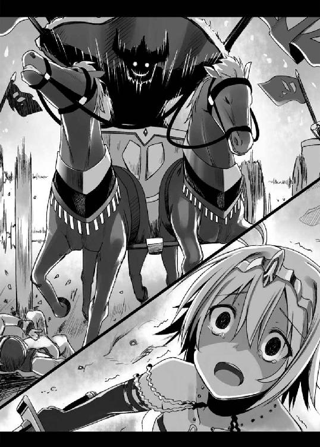
少しずつではあるが、《狼》の兵にも被害が出始めている。
無論、こちらの被害以上の損害を相手に与えてはいるが、このまま消耗戦になれば兵数で劣る自分たちがやがて苦境に陥るのは目に見えていた。
「お兄様、左翼の《角》の部隊が、チャリオットの急襲を受けております！」
「やはりこちらの弱点に気づいたか！」
フェリシアの報告に、勇斗は唸る。
おそらく相手にとっては初めて見る特異な戦術だったはずだ。それをこの僅かの間にこうもあっさり長槍隊の弱点を見抜き、的確についてくる。
混乱を瞬く間に収束させ、たちどころに反撃してきた手腕も実に見事だった。
まったくもって敵の大将は非凡と言わざるをえない。実に面倒くさく、戦いづらい相手だ。
「だが......化かし合いは俺の勝ちだったようだな？ まあ、チートだけど」
勇斗はニヤリと口元をほころばせる。
先に挙げた『孫子』の虚実篇には、その前にこういう文章も載っている。
『能く敵人をして自ら至らしむる者はこれを利すればなり』
つまり、来て欲しいところに敵が自ら進んでやってくるようにしたければ、利益を見せびらかせばいいのだ、と。
散々、長槍隊の脅威を見せつければ、そしてその弱点に気づけば、そこを叩きに来ることはわかりきっていた。
それも、この時代最強を誇るチャリオット部隊で、だ。
ならば、そこに罠を張ればいい。
戦はいかに相手の士気を落とすかが肝要だ。相手の最も頼みにしているものを完膚なきまでに打ち砕く。それが最も精神的な衝撃が大きい。
頼みの綱を失えば、いかな一万の大軍でも烏合の衆に成り下がるだろう。そうなればもう《狼》の敵ではない。
「さあ、出番だぜ、ルーネ。食い散らかせっ！」
「む、チャリオット隊が動き出したか」
やや離れた森から、ジークルーネはパンをかじりつつ、戦場全体を見据えていた。
ジークルーネ率いるムスッペル隊は、フォールクヴァングから程近い森に潜みつつ、連日の戦闘の疲れを癒していた。
《蹄》がいつかもしれぬ奇襲に疲弊していたのと同様、ムスッペル隊にしても圧倒的多数に挑んでいかねばならないというのは、精神を削る作業だったのである。
また、潜伏場所を発見され包囲されれば一巻の終わりである。非戦闘時も、常に気を張っていなければならなかった。
しかも今回の作戦は迅速さが命であり、取るものも取りあえずの強行軍だった。携帯していた食料はすぐに尽き、現地調達でなんとか凌いでいた。《狼》は勇斗から略奪は固く禁じられているので、銀塊との交換である。
《角》はケルムト川流域に肥沃な大地を抱えているということは知っていたので、川岸に行けばなんとか食料の調達はできると踏んでのことだが、それでも土地勘もなく村を探し当てるのはずいぶん苦労させられたものだった。
ゆえにこれまでほとんど休みらしい休みも取れず、ムスッペル隊は《蹄》以上に疲労困憊の状況にあったのだ。
「ほう、どうやら見抜いたようだな」
ジークルーネが感嘆の吐息をつく。賞賛に値するなら敵であろうと一定の敬意を払う。それが生粋の戦士であるジークルーネの流儀だ。
チャリオット部隊は、主戦場を迂回するように移動している。その動きの意図は明らかだ。歩兵をはるかに上回るチャリオットの機動力によって長槍隊の側面へと回り込み攻撃をしかけようというのだろう。
ジークルーネの奇襲に対しても、兵の混乱を瞬く間に鎮めていた。そのせいで敵方の兵糧を燃やしてしまおうという当初の計画が達成できなかったものだ。
おそらくは経験の賜物なのだろうが、《蹄》を率いている将軍は、想定外の事態への対処能力がすこぶる高いようだ。兵の信頼もきっと厚いのだろう。混乱状態の兵士たちに言うことをきかせるには指示だけでは足りない。相応の威厳なくしては不可能だ。
まったくもって舌を巻くしかない。
「これほどの名将を容易く手玉にとるとは、な」
ふふっとジークルーネの口から小さな冷笑がこぼれる。
もちろん、今回の戦において勇斗と綿密な打ち合わせをしている時間などどこにもなかった。ただ、以前から聞いてはいたのだ。
いずれ長槍部隊の弱点をつき、機動力のある別働隊を使って側面攻撃を仕掛けてくる敵がいるかもしれない、と。
そして、その対処法も。
「おっ、ようやく出番か！」
チャリオット隊が《角》の軍勢と激突するのとほぼ同時に、《狼》の本陣から煙が立ち上った。ムスッペル隊への出撃の合図だ。
「さあ、皆の者！ 最後の一踏ん張りだ！」
ジークルーネは後ろを振り返り、三日三晩ともに戦い抜いてきた部下たちに檄を飛ばす。
皆、その顔には疲労の色が濃かったが、それでも戦意が溢れるほどにみなぎっているのが一目で感じ取れた。
徒労感は疲れを倍増させるが、確かな手応えは疲れを吹き飛ばす活力となる。これまで挙げた戦果に、ムスッペル隊の士気はこれ以上ないほどに高まっていた。
その頼もしさに、ジークルーネは胸が熱くなる。
「我らの活躍にこの戦の勝敗がかかっていると知れ！ 《蹄》の兵どもに、我らの恐ろしさ、ヴァルハラの土産に見せつけてくれようぞ！」
「「「「「おおおおおおおおおおお!!」」」」」
ジークルーネが手に持っていた槍で天を突き上げるや、隊士たちが大気を震わせるような雄叫びをあげる。
鬨の声にジークルーネの中の《月を食らう狼》が呼応し、自然、その口元に飢えた狼のような獰猛な笑みが浮かぶ。
そう、自分は戦うことでしか主に報いることができない武辺者だ。平時にはろくに主の助けにもなれない。なればこそ、今がまさに絶好の奉公の時だった。
「ムスッペル隊、突撃ぃっ！」
号令とともにジークルーネは愛馬の腹を蹴って駆け出す。
部下たちもそれに続く。疾風怒濤の狼の群れは、森から飛び出すや猛然とチャリオット隊に背後から喰らいついた。
「ぬうっ！ また貴様らかっ！」
突如、森の中から出現した騎馬部隊に、ユングヴィは唸るように吐き捨てる。
奇襲をしかけた矢先に逆に奇襲し返された。これでは完全に挟み撃ちの格好である。してやられた屈辱感に身が焦げんばかりであった。
思えば、彼奴らにはさんざん煮え湯を飲まされてきた。まさに恨み骨髄である。
「若頭補佐！ 前方の《角》は任せた。儂はあの小憎たらしい者どもを先に片付ける！」
いくらかの兵とともに序列二位である若頭補佐に後備えを任せ、ユングヴィは雷鳴のような号令とともに、チャリオット隊の大部分を騎馬部隊へと旋回させる。
すでに《角》の軍勢は初撃の突撃ですっかり戦意を喪失しているようだった。もはや脅威でもなんでもない。
「今までの恨みここで晴らしてくれん！」
まともに戦おうとせず、まんまと逃げられ続けた相手である。斬り合ってくれるなら願ってもない好機だった。
長槍隊も脅威ではあるが、チャリオットの機動力があればどうとでもなる相手である。今、一番に倒しておかねばならぬ脅威はこの騎馬部隊に他ならないと彼の長年の経験に裏打ちされた戦カンが告げていた。
しかしここでまたユングヴィにとって目を疑うような事態が起こった。
騎馬隊が、チャリオット隊に倍する速度でさらに彼らの側面へと回り込んだのである。
次いで加速の勢いの乗った槍が、チャリオットの車輪を次々と襲う。
チャリオットは大の男二人が乗った荷台を、二輪の木製の車輪が支えている。元々かなりの負荷がかかっていた。一撃であっさりと車輪は破壊され、バランスを崩したチャリオットが次々と横転していく。
「ぐあっ！」
「ぎゃあっ！」
荷台から投げ出された兵士たちは、ある者は再び繰り出された騎兵の槍の一撃に胸を貫かれ、またある者は勢い良く突っ込んできた馬に跳ね飛ばされた。
チャリオットがユグドラシルで最強の兵器であることは論をまたない。それは《角》の軍勢に対する圧倒的戦果をみても明らかだ。
しかし、あくまでこの時代においては、である。この後、一〇〇〇年もの長きに渡り世界中で猛威を振るうチャリオットは、まさに騎兵の登場により戦場から駆逐されていったのだ。
兵力的には圧倒的に勝るチャリオット隊であったが、彼らは自分たちよりはるかに迅い敵に対する訓練など一切積んでいない。一方、ムスッペル隊は、設立当初からチャリオット部隊との交戦を視野にいれ幾度となく修練を積んできていた。
その差が性能以上に一方的とも言える展開を生んだ。アールヴヘイムで無敵を誇ったはずの《蹄》のチャリオット隊が、ろくな反撃さえ敵わずただただ一方的に蹴散らされていく。対抗しようにも機動力が違いすぎるのだ。
手も足もでないとはまさにこのことだった。
「その身なり、さぞ名のある将であろう！ その首頂戴する！」
《狼》の一騎が、チャリオット隊の中央に陣取っていたユングヴィを見つけ、槍を構えて突っ込んでくる。
「はなはだ奇っ怪なことよ......」
ユングヴィほどとなれば、構えだけである程度相手の力量を見切ることができる。
それなりには出来るようだが、あくまでそれなりだ。なぜこの程度の者が、槍を振り回しなお姿勢を崩さず馬に乗っていられるのか皆目見当もつかない。
「もらったぁっ！」
騎兵の槍が、ユングヴィの乗ったチャリオットの車輪めがけて振り下ろされる。
だが、すでにその光景は何度となく見ている。
カンッ！
ユングヴィの槍が騎兵の槍を車輪目前で弾き返す。来る場所がわかっていればユングヴィほどの腕ならこれぐらい容易なことだった。
「小童が。身の程を知れい。貴様など《戦車引く金の猪》のエインヘリアルである儂の敵ではないわ！」
グッと両腕に力を込め、槍をかち上げる。その一撃のあまりの重さに、槍は騎兵の手を離れ宙を舞う。この尋常ならざる膂力こそ、《戦車引く金の猪》の本領であった。
次いで返しの一撃で相手の喉を掻き切る。
「がふっ」
騎兵の首から鮮血が吹き出し、断末魔の声とともに力なく転がり落ちていく。主を失った馬が、困惑したように周囲を見回していた。
「クリストフ！ おのれ、貴様っ！」
その時、手塩にかけて鍛えた部下を切り捨てられ激昂する少女とユングヴィは目が合う。
銀色の長い髪を鮮やかにたなびかせた、戦場にはそぐわぬなんとも美しい娘だ。だが、彼の後宮にいる女とは眼が違う。あれは女の眼ではない。不用意に近づけば噛み殺されかねない猛獣のそれだった。
夜襲の時には遠目だったこととその暗さで顔までは判別できなかったが、月明かりに煌めく銀髪は鮮烈に印象に残っている。彼の者の放つ矢が、ユングヴィの部下たちを何人も射殺したのも目撃している。
今回はさらに間近でその獅子奮迅の戦いぶりも見ている。あの者だけ、他の騎兵とは明らかに腕が違った。
「小娘！ 貴様がこの隊の長だな！」
「いかにも！ 我こそは《月を食らう狼》のエインヘリアルにしてにして『最も強き銀狼』ジークルーネ！ 貴公も一廉の者とお見受けいたす。名を名乗れ！」
「山犬とて我が名ぐらいは聞き及んでおろう。儂こそ《蹄》が宗主にしてアールヴヘイムの覇者ユングヴィよ！」
「ほう、ならば貴公を捕らえればこの戦、我らの勝ちということだな」
「抜かせ！ 貴様さえいなければあの騎馬隊は烏合の衆であろう！ その素っ首たたき落としてくれるわ！」
「面白い。やれるものならやってみよ！」
凛と叫ぶや、ジークルーネが猛然と切り込んできた。
すれ違いざま、ジークルーネがユングヴィの肩口目掛けて槍を放ってくる。先程の騎兵のそれとはまったく迅さが違う。まさに神速と呼ぶに相応しい一撃だった。
だが、ユングヴィとて直接手を下しただけでも数百人は下らない《蹄》きっての勇者である。その目はしっかりと槍の動きを捉えていた。
槍と槍が甲高い音を立てて交差する。
弾き飛ばされたのはユングヴィのほうだった。荷台の壁にしたたかに打ちつけられる。
腕力の差と言うよりは勢いの差だった。自分の半分ほどしかいない少女しか乗せていない馬と、二頭とは言え荷台に大の男二人を乗せた馬とではその速度に大きな開きがあった。
ユングヴィのチャリオットを通り過ぎたジークルーネが、思いっきり手綱を引き絞る。驚いたのか、彼女の愛馬が前脚を上げ立ち上がる。
「なんとっ!?」
そのような姿勢でもなお武器を持ったまま振り落とされないとは、ユングヴィには妖術か何かの類にしか見えなかった。
さらに驚くべきことに、今度は手綱を右に引いて瞬く間に反転し、ユングヴィのチャリオットを追走してくるではないか。
この鮮やかな馬さばきだけで、彼女の技量の程が見て取れた。こんな時でなければぜひ部下にと誘いたいほどである。
だが、ここは戦場だ。そんな悠長なことを考えている暇はない。荷台の縁に手をかけ、慌てて立ち上がり槍を構える。
彼の乗るチャリオットは未だ旋回の途中であった。これまでその機動力を心から頼もしく思っていたものだが、目の前で人馬一体の妙技を魅せつけられては、なんとも鈍重に思えて仕方なかった。
「覚悟っ！」
「なんのっ！」
再び繰り出された槍を、ユングヴィは荷台の壁を足の支えにし、腰を落とし重心を低くして、今度は逆に弾き返した。
ジークルーネの瞳が驚愕の色を映す。会心の一撃を受け止められるとは思ってもいなかったのだろう。
「くっ！ その強靭さ、色合い、さては貴様の武器も鉄か!?」
「ふんっ！ 鉄を持っているのはうぬらだけではないわ！」
星鉄は確かに黄金の五倍以上の値がつく希少な金属である。さりとて大国《蹄》の宗主ともなれば、手に入れられぬものでもない。この槍こそは一〇年に渡り、彼が命を預け、最も頼みにしてきた長年の相棒であった。
その後、二人の勇者は馬の脚を止め、神速の攻防を繰り返す。
そのあまりの凄まじさに、両軍の兵士とも助太刀に行こうにもとても近づけない。下手に二人の間に立ち入ろうとすれば、たちまち暴風のように荒れ狂う槍の応酬に巻き込まれ犬死しかねない。
打ち合うこと数十合、互角に思えた戦いは、ついに均衡が崩れる。
速度はほぼ互角。だが、いかんせん膂力に差があった。
一般に、戦闘は高所が有利とされる。自然、高所からの攻撃は重さが増すからだ。それを加算してもなお、打ち負けているのはジークルーネのほうだった。
じりじりと防戦一方に追い込まれていくジークルーネ。そこに下からすくい上げるように、槍が弧を描いて襲ってくる。
これまで突きと横薙ぎの攻撃が主体だっただけに、完全に虚を突かれた。
なんとか槍で受け止めるも、代償は少なくなかった。ぐらっと大きく姿勢を後ろに崩す。
その隙を見逃すユングヴィではない。
とどめとばかりに全身全霊、乾坤一擲の薙ぎ払いがジークルーネを襲う。
「おらぁっ！」
「うぐっ！ なぁ!?」
それでもジークルーネは神速の反応を見せ槍を縦にしてその一撃を見事防いで見せる。
が、わずかばかり体重が足りなかった。ふわりとその華奢な身体が宙に浮く。
咄嗟にジークルーネは槍を放り捨て、転がることで落馬の衝撃を分散する。考えてのことではない。若いながらも幾度となく戦場をくぐり抜けた戦士の勘に従ってのことだった。
「ちぃっ！」
転がる勢いを利用して、ジークルーネはすぐさま起き上がった。いくら受け身をとったからとて、その衝撃を全て無にすることはできなかったのだろう。その顔は苦悶に歪んでいた。もしあのまま背中から落ちていれば、激痛にしばらく身動きがとれなかったに違いない。
だが、彼女が圧倒的不利な状況に追い込まれたことも、また確かであった。
「儂の勝ち、だな」
槍を構え直し切っ先をジークルーネに向けつつ、ユングヴィが口の端を吊り上げる。
自分の長所と相手の弱点、それらを一瞬で計算しての攻防だった。二〇年、戦場に身を置き続けた経験が明暗を分けたと言えた。
「実に見事な腕前だったぞ、小娘、いやさ勇者ジークルーネ。貴様が後五年早く生まれていればこの結果は逆だったかもしれん」
これはユングヴィにとっては最高の賛辞と言えた。傲慢な王である彼に、自分以上になれる可能性があると言わしめたのだから。
力ある者が全てを得、力なき者は力ある者に従う。弱肉強食こそがここユグドラシルにおける唯一絶対の「法」だ。氏族制度などその最たるものだろう。彼はまさにそれを体現したような人間だった。
弱者にはなんの価値も見出さず奴隷として人を人とも思わず無情にこき使う彼だったが、ゆえにこそ強者には敵であろうと心から敬意を払うのである。
「............」
ジークルーネは無言のまま、ユングヴィを見据えていた。その瞳が、この状況にあってもいささかも闘志が衰えていないことを伝えてきた。
ユングヴィも気を引き締め直した。
二人の力量は切迫していたが、それでもユングヴィに数日の長がある。またチャリオットと徒歩の戦力差が大きい。
なにより戦いにおいては間合いが最も重要だ。すでに彼女の手に槍はなく、腰に剣を帯びるのみ。あれでは荷台にいるユングヴィの身体に届かせることも難しいだろう。万に一つも負ける要素は見当たらなかった。
だが、たとえどれだけ有利であろうと、こういう眼をした敵は油断できないことを彼は長年の経験から知っていた。獣は手負いが最も手強いのである。
「久しぶりに血湧き肉躍る戦いであった。ヴァルハラでまた相見えようぞ！」
言うや、ユングヴィはチャリオットをジークルーネへと駆け出させる。
これほどの勇者を葬るのは忍びないと思いつつも、情けをかけるのは戦士の礼儀に反する。ユングヴィは全力でジークルーネの心臓目掛けて槍を振り下ろした。
「なっ!?」
次の瞬間、此度の遠征で何度目かもしれぬ、目を疑う事態がまたもや起きた。
ユングヴィの槍は、数多の戦場において幾多の敵の武器を打ち砕き、主に勝利をもたらしてきた無敵の武具である。
《蹄》の兵士たちなどはユングヴィの槍を天が彼に与えたもうた神器であると本気で信じているほどだ。
その星鉄を鍛えて作り上げた稀代の名器の穂先が今、チーズのようにあっさりと斬り落とされていた。
目の前の少女が手に持つ、彼女の髪と同じく銀色に煌めく奇妙な武器によって。
その武器はユングヴィの長い戦歴においても見たこともない形状をしていた。
おそらくは剣なのだろうが、片刃である。その刀身には緩やかな反りが入り白い波のような線が疾っていた。しかもだ。星鉄を叩き斬ってなお、刃こぼれ一つ起こしていない。
「はあああっ！」
ジークルーネが裂帛の気合とともに大地を蹴り、飛び上がった。そしてその妖しくも美しい武器を大上段から振り下ろす。
「くぬぅっ！」
ユングヴィは咄嗟に受け止めようと腰の剣を抜き放つ。もっぱら槍ばかりを使っているが、この剣もまた星鉄を鍛えて作り上げた稀代の名剣である。
だが、やはりそれすら敵の刃は易々と叩き切り、さらにいささかも勢いを衰えさせることなく、彼の肩口へと吸い込まれた。
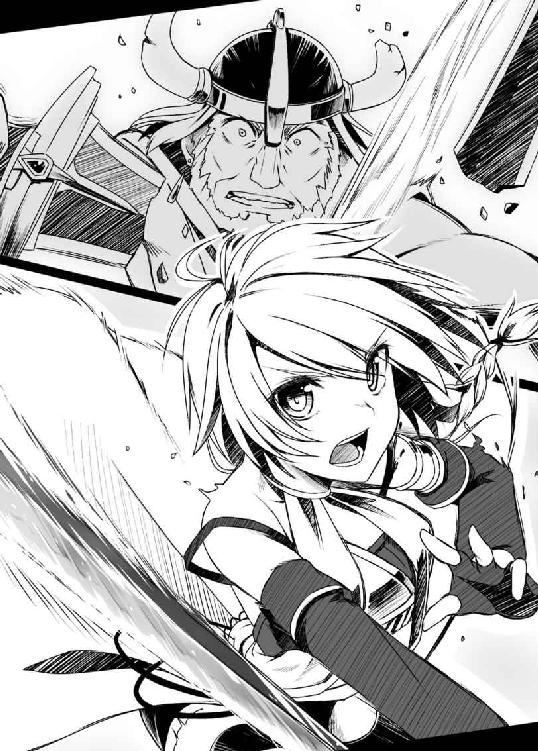
ザシュッと己の肉が断たれる嫌な音が、ユングヴィの耳朶を打つ。
「わたしも同じ言葉を返そう、《蹄》の勇者よ。父上がいなければ、結果は逆だった」
ジークルーネは振り切った格好のまま、地面に片膝を突いて着地し言う。
彼女の脳裏をよぎるのは、圧倒的に優位なはずだった騎馬から、あっさりと地面に叩き落された時のことだ。実力では悔しいが、完璧に負けていたと認めざるを得なかった。
勝敗を分けたのは、ただただ武器の優劣だった。
「うわあああ！ 宗主がやられたっ！」
「嘘だ、あの宗主があんな小娘にっ！」
「に、逃げろ！ 宗主がかなわないんじゃ勝てるわけがねえ」
「ひいぃぃぃっ！」
《蹄》の兵たちから、一斉に悲嘆の叫びが上げる。最強を誇った宗主の死に、すっかり恐慌状態に陥っていた。
残ったチャリオットが慌てたように旋回し、一目散に逃げ出していく。
ユングヴィはまさしく、一代で《蹄》を大きくした英傑だ。
宗主の言うことは絶対だ、宗主に従っていれば勝てる。《蹄》の者たちが彼へと寄せる信頼はもはや信仰とさえ言っていいほどのものがあった。
それこそがこの戦いにおいて散々手こずらされた《蹄》の強固な組織力の源泉でもあったが、ゆえにこそ、要を失った時にはひどく脆かったのである。
「くっ......痛っ！」
ジークルーネはよろめきながら立ち上がるも、左足に疾った激痛に顔をしかめた。落馬の際、あぶみに引っかかり、捻ったのだ。
ユングヴィがジークルーネの一撃によりチャリオットから転がり落ちたところまでは視認している。キョロキョロと辺りを見渡すと、すぐに見つかった。
足を引きずって近寄りその顔を覗きこむと、
「ごほっ！ な、なんなのだ、その武器は？」
なんと、まだユングヴィは息があるようだった。《戦車引く金の猪》のルーンがもたらす人並み外れた体力ゆえだろう。
しかし、その胸元はおびただしい血で真っ赤に染まり、その顔にははっきりとした死相が表れていた。彼の命がもう長くないことは誰の目にも明白だった。
戦う前は出来るなら生け捕りにしたいと思っていたが、そんな悠長なことをしていればここで屍を晒していたのはジークルーネのほうだったろう。
ジークルーネはそっと手に持っていた武器をユングヴィの眼前に突きつけ言う。
「ニホントウ......というらしいぞ。父上のご実父様のものにはこれでもまだ遠く及ばぬというからまったく空恐ろしい」
二つの山脈に囲まれた《狼》の土地では、良質の砂鉄が取れた。
その砂鉄をたたら吹きと呼ばれる日本独自の方法により精錬して作り出された玉鋼は、百錬成鋼――幾度幾重にも渡る折り返し鍛錬を経て、達人が振るえば鉄さえ断ち切る強靭な刃金と化す。
物心つく前からずっと、勇斗は父の仕事を間近で見続けてきた。工程は全て、目蓋の裏に焼きついている。
たたら吹きも何度となく見学している。何事も経験と手伝わせてもらったこともある。
そんな彼が当代随一の鍛冶師イングリットとともに実に半年以上もの歳月を費やして準備し作り上げた渾身の一作であった。
「まだ......上があると申す......か。世界は......ごほっ、広い、な。出来るなら、この手で掴みたかったが、がふっ、叶わぬ、ようだ。だが......貴様ほどの勇者の手にかかって死ねるなら......本......望......だ......っ！」
「わたしも貴公ほどの者と手合わせできたことを誇りに思う。ヴァルハラでまた会おう」
「ふっ......」
ユングヴィは満足げに微笑み、スッと目蓋を閉じた。一代にしてアールヴヘイム地方を制した覇者の最期であった。
ジークルーネは愛刀を地面に突き立てるや、軽く頭を垂れる。勇者の死に、哀悼の意を示したのである。
しばしの黙祷の後、ジークルーネは再び刀を引き抜き、天高く掲げる。
「《蹄》宗主ユングヴィ、《狼》のジークルーネが討ち取ったりーっ！」
EPILOGUE
《蹄》宗主ユングヴィの死は、瞬く間に戦場を駆け巡った。
当初は戦場ではよくある虚報であろうと信じなかった《蹄》の兵士たちだが、沈黙し続ける本陣に、兵達の間にだんだんと疑念が広がっていく。
ユングヴィは決して兵達の動揺を放置するような人間ではない。これまでも兵が混乱していると見るや即座に指示を飛ばし、兵たちを安堵させ鼓舞してきた男だ。彼が生きているのなら、虚報が流れていると知るや必ずその健在ぶりを誇示していたはずである。
それがいつまで経ってもない。
事ここに至り、先の虚報は真実だったのだと兵達も悟り出した。途端、彼らは足元の大地がガラガラと崩れ落ちるかのような不安に襲われた。
ユングヴィがいたから勝利を疑わずに戦えたのである。あの勇猛で強かった宗主を討ち倒すような相手にどう勝てというのだ!?
《蹄》の兵士たちのほとんどは、将校クラスを除いてはほとんど農民や奴隷である。強制的に徴用された者達だ。やがて武器を捨て逃げ出す者が現れ始める。
一人が逃げ出せば、それに釣られてまた一人、二人と次々と脱走し始めるものだ。たちまち《蹄》はそれまでの強固な結束がなかったかのように統制を失い、瓦解した。
逆に《狼》・《角》連合軍は、敵大将戦死の報に俄然その勢いを増してきている。
まだユングヴィに代わり全軍の指揮を執れるような副将ともいうべき存在がいたならば持ちこたえられたやもしれないが、あまりにユングヴィが偉大すぎた。
《蹄》にはユングヴィの手足として有能な一軍の将はそれこそ数多くいたが、その代わりを務められるような者は一人としていなかったのである。
無様に潰走する《蹄》の姿に、《狼》・《角》連合軍は大いに勝鬨を上げたのだった。
翌日、《角》の族都フォールクヴァングでは、戦勝を祝うお祭りが街をあげて盛大に行われていた。
《狼》・《角》両氏族を祝福するかのように、空は雲ひとつなく晴れ渡っており、絶好の祭り日和である。
街の至る所で笛の音や太鼓の音が鳴り響き、人々は自分たちの生活が踏みにじられることなく守られたことを心から喜んでいた。
街の中央にある広場では、両氏族の兵士たちが酒を酌み交わしている。
犬猿の仲の人間同士を仲良くさせるには共通の敵を作るに限る。長年、仇敵として相争ってきた彼らだったが、今回の大勝利で過去の遺恨を完全とは言えないまでも多少は流すことができたようだった。
そんな兵たちの下品で野太い笑い声を遠く耳にしつつ、勇斗は大きく息をついた。
「今度こそこれで一段落、かな」
絶対のカリスマであったユングヴィの死は少なからず《蹄》国内を混乱させるだろう。若頭が跡を継ぐにしても、しばらくは自国内をまとめ、自らの権力基盤をかためるのに手一杯のはずだ。
《角》と国境を接する隣国にしても、大国《蹄》を完膚なきまでに打ち破ったのだ。そんな相手と好き好んで事をかまえようとする国もそうそうあるまい。とりあえずは《角》を襲った未曾有の危機は去ったと見ていいだろう。
しかし、まだまだ問題は山積みである。
覇者ユングヴィの死の影響は、《蹄》領内の混乱にとどまらず、虎視眈々と隙をうかがっていた周辺諸氏族の野心をいやおうなく刺激するはずだ。《角》一国だけを見れば平和になったが、アールヴヘイム地方全体で見れば、今回の戦でかなり不安定化したともいえる。
その動乱に、《角》が巻き込まれるようなことがあれば、《狼》としても今回のように関わらざるをえないケースもでてくる。依然、予断を許さぬ状況なことは確かだった。
二一世紀へ帰る方法も未だ暗中模索だし、その時のための準備もしなければならない。《角》や《爪》との盃事は、あくまで勇斗が交わしているものであり、彼がいなくなった後も友好関係を続けられるような段取りを行う必要もあるだろう。
考えるだけで頭が痛くなってくる。
だが差し当たっての問題と言えば――
「うむ、いい湯だ。生き残った甲斐があったというものだな」
「というか生き返りますわね。は～、疲れがとれる～♪」
「なんかおばさん臭いぞ、フェリシア」
「おばっ!? わ、わたくしがおばさんなら貴女だっておばさんでしょう、ルーネ！ たった七日しか違わないんですから！」
「まだそれを根に持っているのか。おまえもいい加減しつこいやつだな」
「たった七日で人生が狂ったわたくしの気持ちは貴女にはわからないですわ！」
――フェリシアとジークルーネが勇斗をはさむようにして口論を始めたことだろうか。
ただでさえ今は精神的にいっぱいいっぱいだというのに、正直勘弁して欲しい勇斗であった。
ここはフォールクヴァングの宮殿内にある大浴場である。普段は身分ある者や神官など聖職にある者が身を清めるために使っている場所だ。
よって当然ながら、二人とも一糸まとわぬ生まれたままの姿である。しかも男の自分がいるというのに隠そうともしない。
先程から小難しいことを考えていたのは現実逃避に他ならない。それでもチラッチラッとついつい視線が二人のほうに動いてしまうのはやはり男の本能というべきか。
我慢しなくては、と理性は訴えるのだが、どうにも制御がきかない。ちょっとした水音に反応してついつい視線が吸い寄せられてしまう。
「ふふっ、そんなに気になるのでしたら、堂々とご覧になればよろしいのに。わたくしの心と身体は、全てお兄様のものなのですから」
「だーっ！ 色々と人聞きの悪い事言うな！ 俺は何も見てない。気にならない！」
邪な視線をあっさりと勘づかれ勇斗は逆切れして誤魔化そうとする。
もっともフェリシアの生暖かい目を見る限り、完全に失敗しているようだったが。
いったいなんでこんなことになってしまったのか、思わず勇斗は自問自答する。
勇斗は《狼》の族都イアールンヴィズでは基本的に一人で風呂に入っている。当初は侍女などが世話しようとしてきたのだが、「風呂ぐらいゆっくり浸からせろ！」と固辞していた。
しかし、ここはつい先日まで骨肉の争いを続けていた《角》の本拠地である。その身に何も帯びずに一人になど絶対にするわけにはいかないとフェリシアが強硬に主張したのだ。
それなら風呂に入らずとっととイアールンヴィズに帰ってしまいたい勇斗ではあったが、これから宮殿内でも勝利を祝う宴が予定されていた。
当然、《狼》の宗主である勇斗は出席しないわけにはいかず、また、そもそも勇斗はこの戦を勝利へと導いたまさに主役でさえある。
とは言え勇斗はここ数日の旅路で汗と埃で真っ黒になっていた。曲がりなりにも両氏族の公式の宴である。身奇麗な格好で出なければ《狼》の沽券に関わった。
状況は完全に詰みの状況にあり、今や勇斗は二人の美女に挟まれ、赤面しつつ身体を子猫のようにまるめ小さくなっていた。大国《蹄》を完膚なきまでに打ち破った英雄の威厳はすでにどこにもない。
「ううっ、なんで護衛がお前らなんだよ。よく考えたら男でもいいじゃねえか」
「あら、いつもお兄様の護衛をしているのはわたくしじゃありませんか」
「ここは元敵地ですからね。フェリシアだけでは少々不安です。『最も強き銀狼』のわたしこそ最もこの任務には適しているかと」
「そうですわね、わたしも同性のルーネなら肌を見られても気にならないし」
「俺が異性だってこと忘れてね!?」
「「お兄様（父上）は特別ですから」」
二人同時にきっぱり言い切られ、勇斗はぶくぶくと湯船の中に沈んでいく。
このことが美月にバレたら俺は絶縁されるかもしれん、と風呂で温まっている最中だというのに寒気に身震いする。
美月といえば、バタバタしていて遠征することを伝えていなかったことを今更ながらに思い出す。今頃、連絡がないことに相当心配していることだろう。だというのに自分はなにを浮ついたことをしているのか。
「お、俺、もうさっさと身体洗って出るわ。準備もあるし」
なんともいたたまれなくなり、慌てて立ち上がるや勇斗は洗い場へと向かう。裸を見られるのが少々恥ずかしくはあるが、すでに入る時に見られており抵抗感は薄れている。
この場からさっさと立ち去るのが何より先決だった。君子危うきに近寄らず、である。
「っ！ お待ちください」
ジークルーネはそばに立てかけてあった愛刀を手に取るや立ち上がり、勇斗を制する。
その厳しい口調に、曲者か、と緊張とともに彼女の方を振り向き、硬直する。
湯気でよく見えなかったが、そこにはフェリシアに比べればかなり小ぶりではあるが、おわん型の形の良い――
ぐるんと大慌てで視線をジークルーネが睨む出入り口のほうへと向ける。耳を澄ませると、何かをやりとりする声が聞こえた。
誰か来たのだろうか。壁を隔てた浴場の入り口付近は、ジークルーネ直属のムスッペル隊の精鋭たちが固めている。正面から堂々と来たということは不審者ではないようだが、と勇斗が首を傾げていると、やがて入り口あたりに人影が立った。
「まったくうちのガキどもは何をしている。誰も通すなと言っておいたはずだぞ」
苛立たしげに吐き捨て、ジークルーネはザブザブと数歩前に進み出る。そうすると必然的に彼女の引き締まった真っ白なお尻が勇斗の視界に入るのだが、入り口のほうから視線を離すわけにもいかず、危急の時だとわかってはいるのだが気まずい勇斗であった。
「兄上」
「リネー......ア？」
充満する湯気に相手の姿はよく見えなかったが、その声には聞き覚えがあった。
不審者ならともかく、この宮殿の主であり彼らの宗主の妹分だ。警護のムスッペル隊としても無下に追い払うことができず通したのだろう。
やがて湯気の中を抜けて、リネーアが現れる。前は布で隠してこそいるものの、太ももや脇腹など肌色成分が多すぎてなんとも目のやり場に困る勇斗だった。
「何用ですか、お姉さま？」
フェリシアが冷たい声で問う。彼女のほうが勇斗の妹になったのは先なので、順番から言えば彼女のほうが姉なのだが、《角》宗主というリネーアの立場を慮 ってだろう。
「《角》の宗主として、大事な話があります」
「待て、何もこんなところで大事な話をしなくてもいいだろう！ 後でちゃんと聞くから今はとりあえず......」
「それは裸の付き合いと言いますか、腹を割って話すにはここしかないかと」
「ふん、その割には前を隠しているようだがな」
つまらなさそうにジークルーネが鼻を鳴らす。何事もシンプルな彼女には、その行為は見苦しく映ったのだろう。
実に彼女らしい言葉ではある。あるのだが、勇斗は内心悲鳴を上げた。
そんな煽りを入れたら、
「......貴女の言うとおりだな」
はらりと彼女の前を隠していた布が落ちていく。
やっぱりか！ と勇斗は頭を抱えたくなる。右も左も前も肌色に囲まれてしまった。とりあえず視線をなるべく下に向けないように意識はするのだが、あまりそっぽを向くのも外交的に失礼だ。
いったいどんな拷問だ、と勇斗は泣きたくなった。
「それで、いったいどのようなお話です？」
まともにリネーアのほうを見れない勇斗に代わり、フェリシアが続きを促す。
リネーアは一瞬だけ視線をさまよわせるも、キッと真剣な眼差しで勇斗を見つめて言った。
「兄上！ ボクと結婚してください！」
EPILOGUE 2
グラズヘイム――
イヴィング川中流の肥沃な大地が育む恵みと、大陸中央に位置する交通の要衝として各地からもたらされる富が集まる、神聖アースガルズ帝国の首都である。
またその豊かさを背景に、壁画や彫刻、装飾品といった特権階級向けのものから、踊りや歌、詩などといった大衆の娯楽に至るまで、様々な文化が花開く芸術の都でもあった。
一方で、豊かさは新しく何かを為そうという意欲を民から失わせ、歴史の長さは社会を腐敗させ癒着や汚職の温床となる。
街を治める神聖アースガルズ帝国も、ユグドラシル全土に覇を唱えたかつての面影はすでになく、衰退の一途を辿っている。
繁栄の絶頂を極めながらも、後はゆっくりと腐っていくだけ。人々の顔に閉塞感と退廃感が漂う、まさに爛熟の都だった。
街の中央、イヴィング川のほとりに、未だ建前上はユグドラシル全土を治める神帝が住まうヴァーラスキャールヴ宮殿がある。
初代神帝ヴォーダンが数万人の奴隷を使役し二〇年の歳月を費やし築き上げた、小さな町ならすっぽり収まるほどの広大さを誇る大宮殿だ。
「なんと!? あの《蹄》のユングヴィが討たれたというのか!?」
その最深部、絹製のベールの向こうで、一三代目となる神帝は、目の前に平伏する侍従長に詰問の声を上げた。
威厳ある凛とした響きの中に、鈴の鳴るような可憐さが薫る。今代の神帝がまだ年若い少女帝であることはユグドラシルではよく知られた事実である。
とは言え神帝の尊顔を知る者は極めて少ない。拝顔を許されているのは帝国内でもごくごく一部の限られた者だけだ。その秘匿された神秘性が人々の想像をかきたてるようで、市井では見ただけで目がつぶれるような美貌の持ち主であるとまことしやかに噂されていた。
「はっ、あの地に派遣していたアレクシスからの報告ゆえ、確かかと」
頭を上げた侍従長が、補足の言葉を告げる。
神儀使は、神帝の代理として盃事を司ることだけが仕事ではない。その神聖不可侵の立場を利用し、各地の情勢を調べ上げ、グラズヘイムへと情報を送るのがもう一つの重要な任務であった。
今は国力的には中小氏族並と落ちぶれた帝国ではあるが、それでもこと情報収集能力に関しては他の追随を許さない。
「......そうではないことを願っておったが、もはや疑いようがない。やはりその《狼》の宗主こそ黒きものじゃ」
「へ、陛下。みだりにその言葉を口にされては......」
「ふん、すでに現れたというのに、はばかっても仕方なかろう。それより、わかっておろうな？ 事はアールヴヘイム地方だけにとどまらぬぞ。ヴォルヴァの預言の通りならば、やがてユグドラシル全土を包む大乱が起こるじゃろう」
「ま、まさかそんなっ!?」
事態の大きさに震える侍従長に、少女帝は静かに告げる。
厳かに。
そしてどこか諦めたように。
「終末の刻が来たのじゃ」
to be continued
あとがき
鷹「えっと、以前送った企画どうなりました？」
担「ああ、通りましたよ。つきましてもう少しプロットを詰めて......」
鷹「と、通っちゃいましたか......。あの、実は申し上げにくいのですが、もっとやりたいものができちゃいまして。もういつやるの？ 今でしょ！ って感じで。だから......こっちをやらせてください！」
担「は......はぁっ!?」
はじめましての方ははじめまして。お久しぶりの方はお久しぶりです。鷹山誠一です。
というわけですでに通っていた新シリーズ企画をうっちゃって執筆した「百錬の覇王と聖約の戦乙女」をお届けさせて頂きます。
しかし、我ながら無茶やりますね。かなりの先輩作家さんから企画がなかなか通らないと苦労を聞かされてるのに、それを蹴って別企画やろうとするとか......。
ＨＪ文庫編集部の寛大さにはいつも感謝しております。あ、ちなみにうっちゃった企画は鷹山のアマチュア時代を知る人にはなつかしいアレです。
企画としては通っているのでなんとかアレもそのうち出せるといいですね。個人的にもお気に入りの作品ですし。ただちょっといつになるのかは遅筆の身ではなんとも言えないのですが。気長にお待ち頂ければと思います。
さて、肝心の本作に関してですが、現代の普通の少年が、異世界に突然召喚され重要な役目を担わされていくという、まあ、けっこう王道なジャンルです。
とは言えさすがにそれだけではあれなので、鷹山なりに二つほどオリジナリティを加えてみました。この二つのアイディアは鷹山的にはすごいお気に入りで、非常に書いてて楽しかったです。
もうこんなに書いてて楽しくて楽しくて仕方なかったのは実に二年ぶりでした。
前作は公募作ということもあって、いろいろ制限はかかってるし、書きたかったことも一巻で書き尽くしてしまっていました。もちろん、鷹山はまがりなりにもプロであり、読者様にお金を支払ってもらうものである以上、一切の手抜きはせず、もてるものの全てを常に注ぎ込んだと自負しております。
ただ、なんというか、両手両足に拘束具付けたような状況で戦っている気がずっとしていたのも事実です。それが今作はあれです。何の制限もない、完全にフリーハンドで、フルパワーの自分を叩きつけることができました。
その甲斐あって鷹山的にはかなりの出来に仕上がっております。
ここまで言って失敗してしまうともう大恥もいいところなのですが（笑）、ある尊敬する作家さんがtwitterで「本気を出さずに負けたことは、本気を出して負けたことよりも負け方としてはずっと下で、次に何もつながらない。結果が出なかったこと、負けたことに糞みたいな言い訳をした時点でダメなのだ（要約）」とつぶやかれておりました。
自分もまさしくこれには深く同感で、やるからには下手な言い訳などせず倒れるなら前のめりの精神で行きたいと思います。
精一杯がんばりましたので、読者の皆様にも楽しんでいただけましたら幸いです。まだ本屋であとがきだけ読んでるって方は、ぜひぜひレジへと持って行って頂ければっ！
さて、そろそろ恒例の謝辞をって、なんで今回あとがき６ｐもあるんですか!?
さすがに書くことなんかそんなにないんですけど！
あーえー、では仕方ないので穴埋め的に今年２月に完結した前作『オレと彼女の絶対領域』関係の宣伝をば。
いや～、なんかおかげさまで、完結後もいろいろ企画が目白押しでして。
ん～、こほん。
台湾大好きだよ台湾！
前作のあとがきでも書きましたが、台湾で人生初のサイン会を行わせて頂きました。
ほんと夢のよう素晴らしいな体験をさせていただきました。台湾の皆様、本当にありがとうございました！
続きましては、
アスミン可愛いよアスミン！
「オレと彼女の絶対領域 １ Super reading CD／阿澄佳奈」がアニメイト・とらのあな等全国アニメショップ、及びアマゾンで好評発売中です。あの超人気声優、阿澄佳奈さんが一巻の文章を情感豊かに朗読していくという斬新な企画です。
阿澄さんの神業的な演じ分けは必聴です。androidアプリ化もしており、無料版などもあるそうなのでぜひぜひお試しください！
そして、「オレと彼女の絶対領域」コミックス最終巻三巻も、この本とほぼ同時期に書店に並んでいるはずですので、よろしくお願い致します。
よし、なんとか紙面も埋まりましたので改めて謝辞に移らせて頂きます。
担当Ｍ様、本シリーズに関してはもう本当に本当にいろいろとわがまま言いまくって申し訳ありませんでした！ その寛大さにはいつも感謝しております（......締切のことで謝らなくていいのっていつ以来だろう？）！
イラストレーターのゆきさん様、最高のイラストをありがとうございます！ 本巻の売上次第ではございますが、今後も長いお付き合いができればと思っております。
いつも本気を受け止めてくださるＯ師匠、貴方は弟子じゃないと言いますが、やはり自分にとって貴方は師匠以外の何物でもありません。日々を追うごとに貴方への感謝が深まります！ 愛してますぜ、いやマジで！
同じくいろいろ相談に乗ってくださったＲさんもサンクス！ やっぱり人と話すことで見えてくるものもあるのでほんと助かりました！ いつかまた呑みましょうね！
二人のＫさんもサンクス！ また創作談義に華を咲かせましょう。早くこっちの世界においで。歓迎するから。
そして、この本を発行するにあたり、お世話になった関係者各位にも感謝を。
なによりこの本を手にとってくださった読者様に心よりの感謝を。
一応、続きは売上次第なところもございますので、面白いと思ってくださった方は友人知人などにお薦めして頂けると嬉しいです。
できれば続きの巻でお会いできることを願って。
鷹山誠一
◆ご意見、ご感想をお寄せください......ファンレターのあて先◆
〒１５１―００５３
東京都渋谷区代々木２―15―８
（株）ホビージャパン ＨＪ文庫編集部
鷹山誠一先生／ゆきさん先生
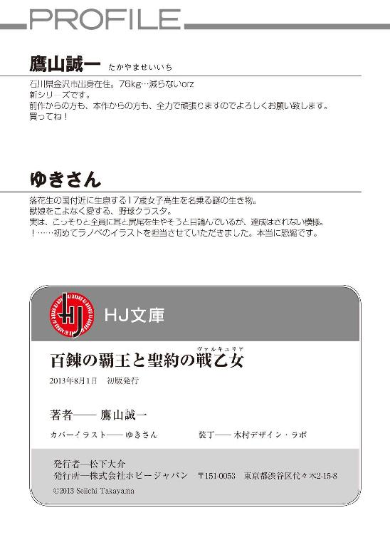